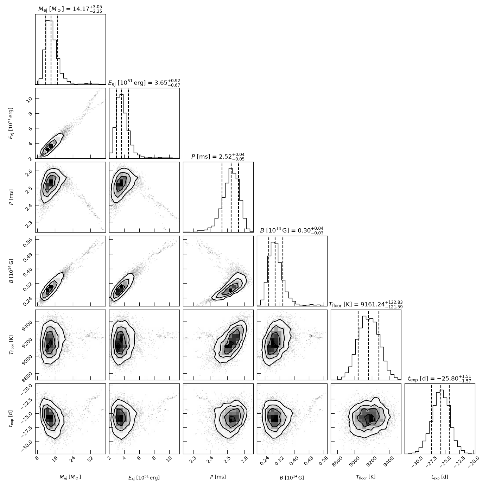
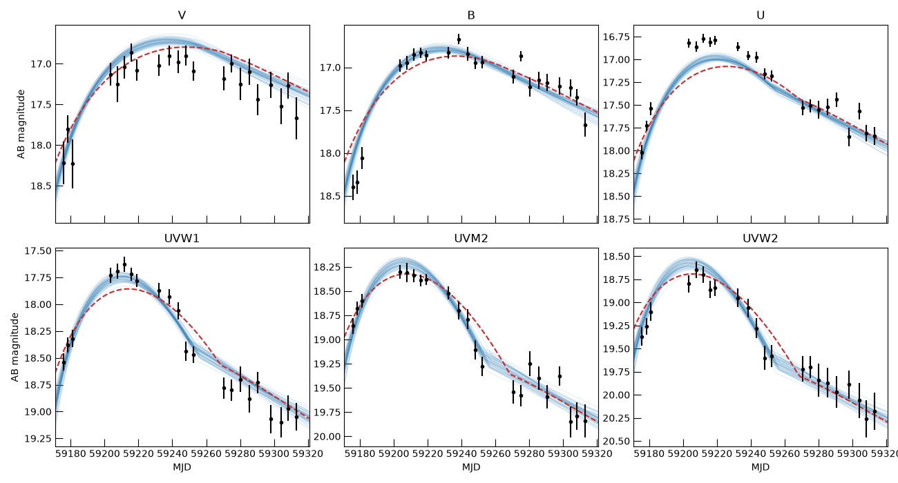
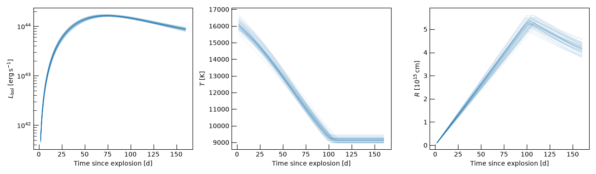

Note
Go to the end to download the full example code.
Fitting a Magnetar-Powered Superluminous Supernova to Swift/UVOT Photometry#
This example fits the Swift/UVOT light curves of the Type I superluminous supernova SN 2020znr with
MagnetarArnettCutoffModel, set up like the magnetar model of MOSFiT
(Nicholl et al.[1]), and checks the result against the published MOSFiT fit of the same object. The photometry is
from Hinkle et al.[2] (“A Swift Fix II: Physical Parameters of Type I Superluminous Supernovae”,
arXiv:2309.03270), who re-reduced the UVOT data with the updated calibration, subtracted the host, and fit 26
superluminous supernovae with MOSFiT. SN 2020znr is one of the best sampled: six filters, 22 epochs each, from the rise through the peak and
about four months of decline.
We will:
load the photometry into an
OpticalPhotometryContainer,build the model and sample the posterior with
emcee,compare the posterior with the published parameters, and check that the published parameters themselves reproduce the data, and
see how much the UV suppression of the spectrum matters.
Note
Loading the Swift filter curves from the Spanish Virtual Observatory needs the optional dependency astroquery
(pip install trilobite[optical]).
The Data#
The photometry is host-subtracted and corrected for Galactic extinction, in the AB system. Every point is a detection. We measure time in days since the first Swift epoch.
from pathlib import Path
import astropy.constants as const
import corner
import matplotlib.pyplot as plt
import numpy as np
from astropy import units as u
from astropy.cosmology import FlatLambdaCDM
from astropy.table import Table
from astropy.time import Time
from scipy.optimize import differential_evolution
from trilobite.data.optical_photometry import OpticalPhotometryContainer
from trilobite.inference import LogGaussianCensoredLikelihood
from trilobite.inference.problem import InferenceProblem
from trilobite.inference.sampling.mcmc import EmceeSampler
from trilobite.models.supernovae import MagnetarArnettCutoffModel, MagnetarArnettModel
from trilobite.utils.phot_utils import FilterBundle, load_filter_from_svo
from trilobite.utils.plot_utils import set_plot_style
set_plot_style()
# sphinx-gallery runs an example from its own directory and does not define ``__file__``.
HERE = Path(__file__).resolve().parent if "__file__" in globals() else Path.cwd()
DATA = HERE.parents[1] / "_data" / "sn2020znr_swift_uvot.csv"
table = Table.read(DATA, format="ascii.csv", comment="#")
table.rename_columns(["mjd", "band"], ["time", "band_name"])
table["mag_ab_upper_limit"] = np.nan # no non-detections for this object
MJD_0 = table["time"].min()
photometry = OpticalPhotometryContainer.from_table(
table, internal_time_format="mjd", time_start=Time(MJD_0, format="mjd")
)
print(f"{photometry.n_obs} observations, {photometry.n_detections} detections")
print(f"Time span: {photometry.time.min():.1f} to {photometry.time.max():.1f} after MJD {MJD_0:.1f}")
132 observations, 132 detections
Time span: 0.0 d to 137.3 d after MJD 59175.8
The Model#
MagnetarArnettCutoffModel computes the bolometric luminosity of a
magnetar-heated ejecta with the one-zone diffusion engine of Arnett Engines. The photosphere expands at a constant
velocity until it cools to a temperature floor and then recedes, and it radiates a blackbody whose flux below 3000
Angstrom is suppressed (UV-Suppressed (Modified) Blackbody), as is seen in the spectra of superluminous supernovae. The spectrum
is convolved with the Swift filters of a FilterBundle.
To follow MOSFiT, we use the redshift and cosmology of the paper (\(z = 0.1\),
\(H_0 = 69.6\,\mathrm{km\,s^{-1}\,Mpc^{-1}}\), \(\Omega_m = 0.29\)), and trapping_mode="emergence", which
applies the leakage of the magnetar’s radiation to the luminosity at the time of observation, as MOSFiT does
(see Where the Trapping is Applied).
The explosion epoch is not known, so it is fit: the parameter t_exp is the explosion epoch on the time axis of
the data. MOSFiT defines the magnetar through its rotational energy and spin-down time (Eqs. 3 and 4 of Nicholl et
al.), for a 1.4 solar mass neutron star: \(E_{\rm mag} = 2.6\times10^{52}\,(P/1\,{\rm ms})^{-2}\) erg and
\(t_{\rm mag} = 1.3\times10^{5}\,(P/1\,{\rm ms})^{2}\,(B_\perp/10^{14}\,{\rm G})^{-2}\) s. Here the magnetar is
defined by a moment of inertia and a radius, which we choose to reproduce those two relations, so that the
spin period and the magnetic field mean the same thing in both.
BANDS = ["V", "B", "U", "UVW1", "UVM2", "UVW2"]
bundle = FilterBundle({band: load_filter_from_svo(f"Swift/UVOT.{band}") for band in BANDS})
cosmology = FlatLambdaCDM(H0=69.6, Om0=0.29)
omega_1ms = 2.0 * np.pi / 1e-3
I_NS = 2.0 * 2.6e52 / omega_1ms**2 # E_mag = I omega^2 / 2
R_NS = (3.0 * I_NS * const.c.cgs.value**3 / ((1e14) ** 2 * omega_1ms**2 * 1.3e5)) ** (1.0 / 6.0) # t_mag, for n = 3
print(f"I_ns = {I_NS:.3e} g cm^2, R_ns = {R_NS:.3e} cm")
model = MagnetarArnettCutoffModel(bundle, redshift=0.1, cosmology=cosmology, trapping_mode="emergence")
print(f"Luminosity distance: {model.luminosity_distance.to(u.Mpc):.0f}")
WARNING: ASTROPY_CACHE_DIR is set to /home/runner/.astropy-cache, but no such file or directory was found. This environment variable will be ignored. [astropy.config.paths]
WARNING: ASTROPY_CACHE_DIR is set to /home/runner/.astropy-cache, but no such file or directory was found. This environment variable will be ignored. [astropy.config.paths]
WARNING: ASTROPY_CACHE_DIR is set to /home/runner/.astropy-cache, but no such file or directory was found. This environment variable will be ignored. [astropy.config.paths]
WARNING: ASTROPY_CACHE_DIR is set to /home/runner/.astropy-cache, but no such file or directory was found. This environment variable will be ignored. [astropy.config.paths]
WARNING: ASTROPY_CACHE_DIR is set to /home/runner/.astropy-cache, but no such file or directory was found. This environment variable will be ignored. [astropy.config.paths]
WARNING: ASTROPY_CACHE_DIR is set to /home/runner/.astropy-cache, but no such file or directory was found. This environment variable will be ignored. [astropy.config.paths]
I_ns = 1.317e+45 g cm^2, R_ns = 1.129e+06 cm
Luminosity distance: 463 Mpc
The Likelihood and Priors#
The container converts the magnitudes to flux densities and
to_inference_data() pairs each with its filter in
the bundle. We compare model and data in \(\log_{10}\) flux with
LogGaussianCensoredLikelihood, with a systematic floor of 0.05 dex
(0.12 mag), which is the median white-noise term that MOSFiT fits for these objects.
The priors are those of Nicholl et al.[1]: flat in the spin period (0.7 to 20 ms), flat in the logarithm of the magnetic field and of the ejecta mass, and flat in the explosion epoch (up to 100 days before the first Swift epoch). The kinetic energy takes the place of their ejecta velocity, and has a wide logarithmic prior. MOSFiT’s Gaussian prior on the final temperature (6000 K) helps it fit the late ground-based photometry that we do not have, so we use a flat prior over their allowed range, 3000 to 10000 K.
Two parameters are fixed. The opacity of the ejecta, \(\kappa = 0.1\,\mathrm{cm^2\,g^{-1}}\), is degenerate with the ejecta mass, which is set by their product. And the opacity to the magnetar’s radiation, \(\kappa_\gamma = 0.1\,\mathrm{cm^2\,g^{-1}}\), is degenerate with the spin-down: both make the light curve fall as \(t^{-2}\) at late times, so with only these data, freeing \(\kappa_\gamma\) lets the chain wander along a ridge towards fast spins and weak fields that the data cannot tell apart. (MOSFiT breaks the degeneracy with a longer light curve.)
data = photometry.to_inference_data(model)
likelihood = LogGaussianCensoredLikelihood(model=model, data=data, sys_dex=0.05)
problem = InferenceProblem(likelihood=likelihood)
problem.set_prior("M_ej", "loguniform", lower=0.1 * u.Msun, upper=100 * u.Msun)
problem.set_prior("E_ej", "loguniform", lower=1e50 * u.erg, upper=1e53 * u.erg)
problem.set_prior("P_spin", "uniform", lower=0.7 * u.ms, upper=20 * u.ms)
problem.set_prior("B_dipole", "loguniform", lower=1e12 * u.G, upper=1e15 * u.G)
problem.set_prior("T_floor", "uniform", lower=3000 * u.K, upper=10000 * u.K)
problem.set_prior("t_exp", "uniform", lower=-100 * u.day, upper=0 * u.day)
initial = {
"M_ej": 15 * u.Msun,
"E_ej": 5e51 * u.erg,
"P_spin": 2.5 * u.ms,
"B_dipole": 3e13 * u.G,
"T_floor": 9000 * u.K,
"t_exp": -25 * u.day,
}
fixed = {
"kappa": 0.1 * u.cm**2 / u.g,
"kappa_magnetar": 0.1 * u.cm**2 / u.g,
"braking_index": 3.0,
"I_ns": I_NS * u.g * u.cm**2,
"R_ns": R_NS * u.cm,
"lambda_cut": 3000 * u.AA,
}
for name, value in initial.items():
problem.parameters[name].initial_value = value
for name, value in fixed.items():
problem.parameters[name].initial_value = value
problem.parameters[name].freeze = True
print("Free parameters:", problem.free_parameter_names)
Free parameters: ('M_ej', 'E_ej', 'T_floor', 't_exp', 'P_spin', 'B_dipole')
Sampling#
The model costs well under a millisecond per evaluation, so a 24-walker chain of 4000 steps takes a few minutes. That is enough for the medians and 68% intervals, but a publication-quality run would be longer: we print how many autocorrelation times the chain spans after burn-in.
result = EmceeSampler(problem, n_walkers=24).run(4000, progress=True)
BURN, THIN = 1500, 10
names = list(result.parameter_names)
tau = result.compute_autocorr_time(quiet=True)
print(f"Autocorrelation times (steps): {dict(zip(names, np.round(tau)))}")
print(f"Post burn-in steps per autocorrelation time: {(4000 - BURN) / tau.max():.0f}")
0% | | 🦖 0/4000 [00:00<?, ?it/s]
0% | | 🦖 1/4000 [00:00<10:25, 6.39it/s]
0% | | 🦖 2/4000 [00:00<10:15, 6.50it/s]
0% | | 🦖 3/4000 [00:00<10:15, 6.49it/s]
0% | | 🦖 4/4000 [00:00<10:16, 6.48it/s]
0% | | 🦖 5/4000 [00:00<10:07, 6.58it/s]
0% | | 🦖 6/4000 [00:00<10:20, 6.43it/s]
0% | | 🦖 7/4000 [00:01<10:08, 6.56it/s]
0% | | 🦖 8/4000 [00:01<09:57, 6.68it/s]
0% | | 🦖 9/4000 [00:01<10:38, 6.25it/s]
0% | | 🦖 10/4000 [00:01<10:23, 6.40it/s]
0% | | 🦖 11/4000 [00:01<10:22, 6.41it/s]
0% | | 🦖 12/4000 [00:01<10:56, 6.08it/s]
0% | | 🦖 13/4000 [00:02<10:54, 6.10it/s]
0% | | 🦖 14/4000 [00:02<10:49, 6.14it/s]
0% | | 🦖 15/4000 [00:02<10:28, 6.34it/s]
0% | | 🦖 16/4000 [00:02<10:27, 6.35it/s]
0% | | 🦖 17/4000 [00:02<10:25, 6.37it/s]
0% | | 🦖 18/4000 [00:02<10:33, 6.28it/s]
0% | | 🦖 19/4000 [00:02<10:29, 6.32it/s]
0% | | 🦖 20/4000 [00:03<10:16, 6.45it/s]
1% | | 🦖 21/4000 [00:03<10:06, 6.56it/s]
1% | | 🦖 22/4000 [00:03<09:58, 6.64it/s]
1% | | 🦖 23/4000 [00:03<10:09, 6.52it/s]
1% | | 🦖 24/4000 [00:03<10:14, 6.47it/s]
1% | | 🦖 25/4000 [00:03<10:11, 6.51it/s]
1% | | 🦖 26/4000 [00:04<10:24, 6.37it/s]
1% | | 🦖 27/4000 [00:04<10:28, 6.32it/s]
1% | | 🦖 28/4000 [00:04<10:37, 6.23it/s]
1% | | 🦖 29/4000 [00:04<10:20, 6.40it/s]
1% | | 🦖 30/4000 [00:04<10:10, 6.51it/s]
1% | | 🦖 31/4000 [00:04<10:06, 6.54it/s]
1% | | 🦖 32/4000 [00:04<09:57, 6.64it/s]
1% | | 🦖 33/4000 [00:05<09:51, 6.70it/s]
1% | | 🦖 34/4000 [00:05<09:57, 6.64it/s]
1% | | 🦖 35/4000 [00:05<09:55, 6.66it/s]
1% | | 🦖 36/4000 [00:05<10:14, 6.46it/s]
1% | | 🦖 37/4000 [00:05<10:00, 6.60it/s]
1% | | 🦖 38/4000 [00:05<09:55, 6.66it/s]
1% | | 🦖 39/4000 [00:06<09:53, 6.67it/s]
1% | | 🦖 40/4000 [00:06<09:48, 6.72it/s]
1% | | 🦖 41/4000 [00:06<09:44, 6.78it/s]
1% | | 🦖 42/4000 [00:06<09:39, 6.82it/s]
1% | | 🦖 43/4000 [00:06<09:45, 6.76it/s]
1% | | 🦖 44/4000 [00:06<09:43, 6.77it/s]
1% | | 🦖 45/4000 [00:06<09:49, 6.71it/s]
1% | | 🦖 46/4000 [00:07<09:48, 6.71it/s]
1% | | 🦖 47/4000 [00:07<09:48, 6.71it/s]
1% | | 🦖 48/4000 [00:07<09:47, 6.73it/s]
1% | | 🦖 49/4000 [00:07<09:50, 6.69it/s]
1% |▏ | 🦖 50/4000 [00:07<09:51, 6.67it/s]
1% |▏ | 🦖 51/4000 [00:07<10:33, 6.23it/s]
1% |▏ | 🦖 52/4000 [00:08<10:39, 6.17it/s]
1% |▏ | 🦖 53/4000 [00:08<10:26, 6.30it/s]
1% |▏ | 🦖 54/4000 [00:08<10:40, 6.16it/s]
1% |▏ | 🦖 55/4000 [00:08<10:27, 6.29it/s]
1% |▏ | 🦖 56/4000 [00:08<10:12, 6.43it/s]
1% |▏ | 🦖 57/4000 [00:08<10:07, 6.49it/s]
1% |▏ | 🦖 58/4000 [00:08<10:02, 6.54it/s]
1% |▏ | 🦖 59/4000 [00:09<09:55, 6.62it/s]
2% |▏ | 🦖 60/4000 [00:09<09:55, 6.62it/s]
2% |▏ | 🦖 61/4000 [00:09<09:52, 6.65it/s]
2% |▏ | 🦖 62/4000 [00:09<09:50, 6.67it/s]
2% |▏ | 🦖 63/4000 [00:09<09:48, 6.69it/s]
2% |▏ | 🦖 64/4000 [00:09<09:47, 6.70it/s]
2% |▏ | 🦖 65/4000 [00:09<09:47, 6.70it/s]
2% |▏ | 🦖 66/4000 [00:10<09:45, 6.72it/s]
2% |▏ | 🦖 67/4000 [00:10<09:45, 6.72it/s]
2% |▏ | 🦖 68/4000 [00:10<09:45, 6.72it/s]
2% |▏ | 🦖 69/4000 [00:10<09:48, 6.68it/s]
2% |▏ | 🦖 70/4000 [00:10<09:50, 6.65it/s]
2% |▏ | 🦖 71/4000 [00:10<09:47, 6.69it/s]
2% |▏ | 🦖 72/4000 [00:11<09:42, 6.75it/s]
2% |▏ | 🦖 73/4000 [00:11<09:39, 6.78it/s]
2% |▏ | 🦖 74/4000 [00:11<09:37, 6.80it/s]
2% |▏ | 🦖 75/4000 [00:11<09:38, 6.79it/s]
2% |▏ | 🦖 76/4000 [00:11<09:42, 6.74it/s]
2% |▏ | 🦖 77/4000 [00:11<09:39, 6.77it/s]
2% |▏ | 🦖 78/4000 [00:11<09:44, 6.71it/s]
2% |▏ | 🦖 79/4000 [00:12<09:41, 6.74it/s]
2% |▏ | 🦖 80/4000 [00:12<09:38, 6.77it/s]
2% |▏ | 🦖 81/4000 [00:12<09:36, 6.79it/s]
2% |▏ | 🦖 82/4000 [00:12<09:39, 6.76it/s]
2% |▏ | 🦖 83/4000 [00:12<09:35, 6.81it/s]
2% |▏ | 🦖 84/4000 [00:12<09:33, 6.82it/s]
2% |▏ | 🦖 85/4000 [00:12<09:40, 6.75it/s]
2% |▏ | 🦖 86/4000 [00:13<09:37, 6.78it/s]
2% |▏ | 🦖 87/4000 [00:13<09:36, 6.79it/s]
2% |▏ | 🦖 88/4000 [00:13<09:32, 6.83it/s]
2% |▏ | 🦖 89/4000 [00:13<09:35, 6.80it/s]
2% |▏ | 🦖 90/4000 [00:13<09:34, 6.81it/s]
2% |▏ | 🦖 91/4000 [00:13<09:37, 6.77it/s]
2% |▏ | 🦖 92/4000 [00:13<09:38, 6.75it/s]
2% |▏ | 🦖 93/4000 [00:14<09:35, 6.79it/s]
2% |▏ | 🦖 94/4000 [00:14<09:38, 6.75it/s]
2% |▏ | 🦖 95/4000 [00:14<09:39, 6.74it/s]
2% |▏ | 🦖 96/4000 [00:14<09:39, 6.73it/s]
2% |▏ | 🦖 97/4000 [00:14<10:16, 6.33it/s]
2% |▏ | 🦖 98/4000 [00:14<10:30, 6.19it/s]
2% |▏ | 🦖 99/4000 [00:15<10:17, 6.31it/s]
2% |▎ | 🦖 100/4000 [00:15<10:11, 6.38it/s]
3% |▎ | 🦖 101/4000 [00:15<10:15, 6.34it/s]
3% |▎ | 🦖 102/4000 [00:15<10:07, 6.42it/s]
3% |▎ | 🦖 103/4000 [00:15<09:55, 6.55it/s]
3% |▎ | 🦖 104/4000 [00:15<09:51, 6.59it/s]
3% |▎ | 🦖 105/4000 [00:15<09:43, 6.68it/s]
3% |▎ | 🦖 106/4000 [00:16<09:42, 6.69it/s]
3% |▎ | 🦖 107/4000 [00:16<09:43, 6.67it/s]
3% |▎ | 🦖 108/4000 [00:16<09:43, 6.67it/s]
3% |▎ | 🦖 109/4000 [00:16<09:48, 6.62it/s]
3% |▎ | 🦖 110/4000 [00:16<09:40, 6.70it/s]
3% |▎ | 🦖 111/4000 [00:16<09:46, 6.63it/s]
3% |▎ | 🦖 112/4000 [00:17<09:44, 6.66it/s]
3% |▎ | 🦖 113/4000 [00:17<09:37, 6.73it/s]
3% |▎ | 🦖 114/4000 [00:17<09:43, 6.66it/s]
3% |▎ | 🦖 115/4000 [00:17<09:42, 6.67it/s]
3% |▎ | 🦖 116/4000 [00:17<09:55, 6.53it/s]
3% |▎ | 🦖 117/4000 [00:17<09:57, 6.50it/s]
3% |▎ | 🦖 118/4000 [00:17<09:53, 6.54it/s]
3% |▎ | 🦖 119/4000 [00:18<09:45, 6.63it/s]
3% |▎ | 🦖 120/4000 [00:18<09:50, 6.57it/s]
3% |▎ | 🦖 121/4000 [00:18<09:45, 6.63it/s]
3% |▎ | 🦖 122/4000 [00:18<09:41, 6.67it/s]
3% |▎ | 🦖 123/4000 [00:18<09:40, 6.68it/s]
3% |▎ | 🦖 124/4000 [00:18<09:45, 6.62it/s]
3% |▎ | 🦖 125/4000 [00:18<09:47, 6.60it/s]
3% |▎ | 🦖 126/4000 [00:19<09:43, 6.64it/s]
3% |▎ | 🦖 127/4000 [00:19<10:14, 6.30it/s]
3% |▎ | 🦖 128/4000 [00:19<10:16, 6.28it/s]
3% |▎ | 🦖 129/4000 [00:19<10:51, 5.94it/s]
3% |▎ | 🦖 130/4000 [00:19<10:37, 6.07it/s]
3% |▎ | 🦖 131/4000 [00:19<10:20, 6.24it/s]
3% |▎ | 🦖 132/4000 [00:20<10:35, 6.08it/s]
3% |▎ | 🦖 133/4000 [00:20<10:24, 6.19it/s]
3% |▎ | 🦖 134/4000 [00:20<10:04, 6.40it/s]
3% |▎ | 🦖 135/4000 [00:20<09:53, 6.51it/s]
3% |▎ | 🦖 136/4000 [00:20<10:00, 6.43it/s]
3% |▎ | 🦖 137/4000 [00:20<10:27, 6.15it/s]
3% |▎ | 🦖 138/4000 [00:21<10:36, 6.07it/s]
3% |▎ | 🦖 139/4000 [00:21<10:21, 6.21it/s]
4% |▎ | 🦖 140/4000 [00:21<10:03, 6.39it/s]
4% |▎ | 🦖 141/4000 [00:21<10:24, 6.18it/s]
4% |▎ | 🦖 142/4000 [00:21<10:13, 6.29it/s]
4% |▎ | 🦖 143/4000 [00:21<10:01, 6.41it/s]
4% |▎ | 🦖 144/4000 [00:22<10:05, 6.37it/s]
4% |▎ | 🦖 145/4000 [00:22<10:23, 6.18it/s]
4% |▎ | 🦖 146/4000 [00:22<10:10, 6.31it/s]
4% |▎ | 🦖 147/4000 [00:22<09:58, 6.44it/s]
4% |▎ | 🦖 148/4000 [00:22<09:54, 6.48it/s]
4% |▎ | 🦖 149/4000 [00:22<10:07, 6.34it/s]
4% |▍ | 🦖 150/4000 [00:23<10:28, 6.12it/s]
4% |▍ | 🦖 151/4000 [00:23<10:24, 6.16it/s]
4% |▍ | 🦖 152/4000 [00:23<10:05, 6.35it/s]
4% |▍ | 🦖 153/4000 [00:23<10:00, 6.41it/s]
4% |▍ | 🦖 154/4000 [00:23<10:05, 6.35it/s]
4% |▍ | 🦖 155/4000 [00:23<10:00, 6.40it/s]
4% |▍ | 🦖 156/4000 [00:23<10:11, 6.28it/s]
4% |▍ | 🦖 157/4000 [00:24<10:15, 6.25it/s]
4% |▍ | 🦖 158/4000 [00:24<10:20, 6.19it/s]
4% |▍ | 🦖 159/4000 [00:24<10:19, 6.20it/s]
4% |▍ | 🦖 160/4000 [00:24<10:14, 6.25it/s]
4% |▍ | 🦖 161/4000 [00:24<10:15, 6.24it/s]
4% |▍ | 🦖 162/4000 [00:24<10:02, 6.37it/s]
4% |▍ | 🦖 163/4000 [00:25<10:32, 6.07it/s]
4% |▍ | 🦖 164/4000 [00:25<10:24, 6.15it/s]
4% |▍ | 🦖 165/4000 [00:25<10:16, 6.22it/s]
4% |▍ | 🦖 166/4000 [00:25<09:59, 6.40it/s]
4% |▍ | 🦖 167/4000 [00:25<09:56, 6.42it/s]
4% |▍ | 🦖 168/4000 [00:25<09:53, 6.46it/s]
4% |▍ | 🦖 169/4000 [00:26<09:58, 6.41it/s]
4% |▍ | 🦖 170/4000 [00:26<09:53, 6.45it/s]
4% |▍ | 🦖 171/4000 [00:26<09:54, 6.45it/s]
4% |▍ | 🦖 172/4000 [00:26<09:44, 6.55it/s]
4% |▍ | 🦖 173/4000 [00:26<09:54, 6.44it/s]
4% |▍ | 🦖 174/4000 [00:26<09:41, 6.58it/s]
4% |▍ | 🦖 175/4000 [00:26<09:45, 6.54it/s]
4% |▍ | 🦖 176/4000 [00:27<09:45, 6.54it/s]
4% |▍ | 🦖 177/4000 [00:27<09:51, 6.46it/s]
4% |▍ | 🦖 178/4000 [00:27<10:20, 6.16it/s]
4% |▍ | 🦖 179/4000 [00:27<10:16, 6.20it/s]
4% |▍ | 🦖 180/4000 [00:27<10:17, 6.19it/s]
5% |▍ | 🦖 181/4000 [00:27<10:09, 6.26it/s]
5% |▍ | 🦖 182/4000 [00:28<10:55, 5.82it/s]
5% |▍ | 🦖 183/4000 [00:28<10:43, 5.93it/s]
5% |▍ | 🦖 184/4000 [00:28<10:33, 6.03it/s]
5% |▍ | 🦖 185/4000 [00:28<10:15, 6.19it/s]
5% |▍ | 🦖 186/4000 [00:28<09:55, 6.40it/s]
5% |▍ | 🦖 187/4000 [00:28<09:49, 6.47it/s]
5% |▍ | 🦖 188/4000 [00:29<10:10, 6.25it/s]
5% |▍ | 🦖 189/4000 [00:29<10:12, 6.22it/s]
5% |▍ | 🦖 190/4000 [00:29<09:50, 6.45it/s]
5% |▍ | 🦖 191/4000 [00:29<09:39, 6.58it/s]
5% |▍ | 🦖 192/4000 [00:29<09:32, 6.66it/s]
5% |▍ | 🦖 193/4000 [00:29<09:32, 6.65it/s]
5% |▍ | 🦖 194/4000 [00:29<09:29, 6.68it/s]
5% |▍ | 🦖 195/4000 [00:30<09:25, 6.73it/s]
5% |▍ | 🦖 196/4000 [00:30<09:41, 6.54it/s]
5% |▍ | 🦖 197/4000 [00:30<10:20, 6.13it/s]
5% |▍ | 🦖 198/4000 [00:30<10:12, 6.21it/s]
5% |▍ | 🦖 199/4000 [00:30<10:09, 6.24it/s]
5% |▌ | 🦖 200/4000 [00:30<09:53, 6.41it/s]
5% |▌ | 🦖 201/4000 [00:31<09:42, 6.52it/s]
5% |▌ | 🦖 202/4000 [00:31<09:35, 6.60it/s]
5% |▌ | 🦖 203/4000 [00:31<10:21, 6.11it/s]
5% |▌ | 🦖 204/4000 [00:31<10:01, 6.32it/s]
5% |▌ | 🦖 205/4000 [00:31<10:11, 6.20it/s]
5% |▌ | 🦖 206/4000 [00:31<10:35, 5.97it/s]
5% |▌ | 🦖 207/4000 [00:32<10:41, 5.91it/s]
5% |▌ | 🦖 208/4000 [00:32<10:35, 5.97it/s]
5% |▌ | 🦖 209/4000 [00:32<10:45, 5.87it/s]
5% |▌ | 🦖 210/4000 [00:32<10:32, 5.99it/s]
5% |▌ | 🦖 211/4000 [00:32<10:06, 6.25it/s]
5% |▌ | 🦖 212/4000 [00:32<09:48, 6.44it/s]
5% |▌ | 🦖 213/4000 [00:32<09:38, 6.55it/s]
5% |▌ | 🦖 214/4000 [00:33<10:11, 6.19it/s]
5% |▌ | 🦖 215/4000 [00:33<10:09, 6.21it/s]
5% |▌ | 🦖 216/4000 [00:33<10:04, 6.26it/s]
5% |▌ | 🦖 217/4000 [00:33<09:52, 6.39it/s]
5% |▌ | 🦖 218/4000 [00:33<09:39, 6.53it/s]
5% |▌ | 🦖 219/4000 [00:33<09:41, 6.51it/s]
6% |▌ | 🦖 220/4000 [00:34<09:36, 6.55it/s]
6% |▌ | 🦖 221/4000 [00:34<09:32, 6.60it/s]
6% |▌ | 🦖 222/4000 [00:34<09:27, 6.66it/s]
6% |▌ | 🦖 223/4000 [00:34<09:50, 6.39it/s]
6% |▌ | 🦖 224/4000 [00:34<09:41, 6.50it/s]
6% |▌ | 🦖 225/4000 [00:34<09:33, 6.59it/s]
6% |▌ | 🦖 226/4000 [00:34<09:23, 6.69it/s]
6% |▌ | 🦖 227/4000 [00:35<09:20, 6.74it/s]
6% |▌ | 🦖 228/4000 [00:35<09:28, 6.64it/s]
6% |▌ | 🦖 229/4000 [00:35<09:21, 6.71it/s]
6% |▌ | 🦖 230/4000 [00:35<09:29, 6.62it/s]
6% |▌ | 🦖 231/4000 [00:35<09:38, 6.52it/s]
6% |▌ | 🦖 232/4000 [00:35<09:59, 6.29it/s]
6% |▌ | 🦖 233/4000 [00:36<09:44, 6.45it/s]
6% |▌ | 🦖 234/4000 [00:36<09:34, 6.55it/s]
6% |▌ | 🦖 235/4000 [00:36<09:29, 6.61it/s]
6% |▌ | 🦖 236/4000 [00:36<09:25, 6.65it/s]
6% |▌ | 🦖 237/4000 [00:36<09:26, 6.64it/s]
6% |▌ | 🦖 238/4000 [00:36<09:21, 6.70it/s]
6% |▌ | 🦖 239/4000 [00:36<09:15, 6.78it/s]
6% |▌ | 🦖 240/4000 [00:37<09:21, 6.70it/s]
6% |▌ | 🦖 241/4000 [00:37<09:16, 6.76it/s]
6% |▌ | 🦖 242/4000 [00:37<09:16, 6.76it/s]
6% |▌ | 🦖 243/4000 [00:37<09:12, 6.80it/s]
6% |▌ | 🦖 244/4000 [00:37<09:10, 6.83it/s]
6% |▌ | 🦖 245/4000 [00:37<09:12, 6.79it/s]
6% |▌ | 🦖 246/4000 [00:37<09:28, 6.61it/s]
6% |▌ | 🦖 247/4000 [00:38<09:19, 6.70it/s]
6% |▌ | 🦖 248/4000 [00:38<09:13, 6.77it/s]
6% |▌ | 🦖 249/4000 [00:38<09:31, 6.57it/s]
6% |▋ | 🦖 250/4000 [00:38<10:48, 5.79it/s]
6% |▋ | 🦖 251/4000 [00:38<10:20, 6.05it/s]
6% |▋ | 🦖 252/4000 [00:38<09:55, 6.29it/s]
6% |▋ | 🦖 253/4000 [00:39<09:43, 6.42it/s]
6% |▋ | 🦖 254/4000 [00:39<09:41, 6.44it/s]
6% |▋ | 🦖 255/4000 [00:39<09:37, 6.48it/s]
6% |▋ | 🦖 256/4000 [00:39<09:31, 6.55it/s]
6% |▋ | 🦖 257/4000 [00:39<09:26, 6.61it/s]
6% |▋ | 🦖 258/4000 [00:39<09:26, 6.60it/s]
6% |▋ | 🦖 259/4000 [00:40<09:23, 6.64it/s]
6% |▋ | 🦖 260/4000 [00:40<09:17, 6.71it/s]
7% |▋ | 🦖 261/4000 [00:40<09:11, 6.78it/s]
7% |▋ | 🦖 262/4000 [00:40<09:09, 6.80it/s]
7% |▋ | 🦖 263/4000 [00:40<09:18, 6.69it/s]
7% |▋ | 🦖 264/4000 [00:40<09:14, 6.74it/s]
7% |▋ | 🦖 265/4000 [00:40<09:31, 6.53it/s]
7% |▋ | 🦖 266/4000 [00:41<09:28, 6.57it/s]
7% |▋ | 🦖 267/4000 [00:41<09:20, 6.66it/s]
7% |▋ | 🦖 268/4000 [00:41<09:21, 6.65it/s]
7% |▋ | 🦖 269/4000 [00:41<09:22, 6.63it/s]
7% |▋ | 🦖 270/4000 [00:41<09:20, 6.65it/s]
7% |▋ | 🦖 271/4000 [00:41<09:15, 6.71it/s]
7% |▋ | 🦖 272/4000 [00:41<09:09, 6.78it/s]
7% |▋ | 🦖 273/4000 [00:42<09:09, 6.79it/s]
7% |▋ | 🦖 274/4000 [00:42<09:09, 6.78it/s]
7% |▋ | 🦖 275/4000 [00:42<09:10, 6.77it/s]
7% |▋ | 🦖 276/4000 [00:42<10:28, 5.93it/s]
7% |▋ | 🦖 277/4000 [00:42<10:00, 6.20it/s]
7% |▋ | 🦖 278/4000 [00:42<09:51, 6.30it/s]
7% |▋ | 🦖 279/4000 [00:43<11:49, 5.25it/s]
7% |▋ | 🦖 280/4000 [00:43<10:57, 5.66it/s]
7% |▋ | 🦖 281/4000 [00:43<11:32, 5.37it/s]
7% |▋ | 🦖 282/4000 [00:43<10:44, 5.76it/s]
7% |▋ | 🦖 283/4000 [00:43<10:19, 6.00it/s]
7% |▋ | 🦖 284/4000 [00:43<10:19, 5.99it/s]
7% |▋ | 🦖 285/4000 [00:44<10:10, 6.08it/s]
7% |▋ | 🦖 286/4000 [00:44<09:52, 6.27it/s]
7% |▋ | 🦖 287/4000 [00:44<10:09, 6.09it/s]
7% |▋ | 🦖 288/4000 [00:44<09:47, 6.31it/s]
7% |▋ | 🦖 289/4000 [00:44<09:35, 6.45it/s]
7% |▋ | 🦖 290/4000 [00:44<09:53, 6.25it/s]
7% |▋ | 🦖 291/4000 [00:45<10:59, 5.63it/s]
7% |▋ | 🦖 292/4000 [00:45<10:21, 5.97it/s]
7% |▋ | 🦖 293/4000 [00:45<10:30, 5.88it/s]
7% |▋ | 🦖 294/4000 [00:45<10:03, 6.14it/s]
7% |▋ | 🦖 295/4000 [00:45<09:59, 6.18it/s]
7% |▋ | 🦖 296/4000 [00:45<09:59, 6.18it/s]
7% |▋ | 🦖 297/4000 [00:46<09:52, 6.25it/s]
7% |▋ | 🦖 298/4000 [00:46<09:54, 6.23it/s]
7% |▋ | 🦖 299/4000 [00:46<09:36, 6.42it/s]
8% |▊ | 🦖 300/4000 [00:46<09:26, 6.53it/s]
8% |▊ | 🦖 301/4000 [00:46<10:11, 6.05it/s]
8% |▊ | 🦖 302/4000 [00:46<09:53, 6.23it/s]
8% |▊ | 🦖 303/4000 [00:47<09:34, 6.43it/s]
8% |▊ | 🦖 304/4000 [00:47<09:25, 6.54it/s]
8% |▊ | 🦖 305/4000 [00:47<09:19, 6.60it/s]
8% |▊ | 🦖 306/4000 [00:47<09:14, 6.66it/s]
8% |▊ | 🦖 307/4000 [00:47<09:07, 6.74it/s]
8% |▊ | 🦖 308/4000 [00:47<09:09, 6.72it/s]
8% |▊ | 🦖 309/4000 [00:47<09:10, 6.70it/s]
8% |▊ | 🦖 310/4000 [00:48<09:12, 6.68it/s]
8% |▊ | 🦖 311/4000 [00:48<09:22, 6.56it/s]
8% |▊ | 🦖 312/4000 [00:48<09:27, 6.50it/s]
8% |▊ | 🦖 313/4000 [00:48<09:35, 6.41it/s]
8% |▊ | 🦖 314/4000 [00:48<09:26, 6.51it/s]
8% |▊ | 🦖 315/4000 [00:48<09:17, 6.61it/s]
8% |▊ | 🦖 316/4000 [00:48<09:08, 6.72it/s]
8% |▊ | 🦖 317/4000 [00:49<09:02, 6.79it/s]
8% |▊ | 🦖 318/4000 [00:49<09:05, 6.75it/s]
8% |▊ | 🦖 319/4000 [00:49<09:00, 6.81it/s]
8% |▊ | 🦖 320/4000 [00:49<09:05, 6.75it/s]
8% |▊ | 🦖 321/4000 [00:49<09:13, 6.65it/s]
8% |▊ | 🦖 322/4000 [00:49<09:19, 6.57it/s]
8% |▊ | 🦖 323/4000 [00:50<09:10, 6.68it/s]
8% |▊ | 🦖 324/4000 [00:50<09:12, 6.65it/s]
8% |▊ | 🦖 325/4000 [00:50<09:19, 6.56it/s]
8% |▊ | 🦖 326/4000 [00:50<09:18, 6.58it/s]
8% |▊ | 🦖 327/4000 [00:50<09:11, 6.66it/s]
8% |▊ | 🦖 328/4000 [00:50<09:18, 6.58it/s]
8% |▊ | 🦖 329/4000 [00:50<09:09, 6.69it/s]
8% |▊ | 🦖 330/4000 [00:51<09:12, 6.64it/s]
8% |▊ | 🦖 331/4000 [00:51<09:21, 6.54it/s]
8% |▊ | 🦖 332/4000 [00:51<09:20, 6.54it/s]
8% |▊ | 🦖 333/4000 [00:51<09:53, 6.18it/s]
8% |▊ | 🦖 334/4000 [00:51<10:32, 5.80it/s]
8% |▊ | 🦖 335/4000 [00:51<10:08, 6.02it/s]
8% |▊ | 🦖 336/4000 [00:52<10:14, 5.96it/s]
8% |▊ | 🦖 337/4000 [00:52<10:06, 6.04it/s]
8% |▊ | 🦖 338/4000 [00:52<10:08, 6.02it/s]
8% |▊ | 🦖 339/4000 [00:52<09:44, 6.26it/s]
8% |▊ | 🦖 340/4000 [00:52<09:33, 6.38it/s]
9% |▊ | 🦖 341/4000 [00:52<10:27, 5.83it/s]
9% |▊ | 🦖 342/4000 [00:53<09:56, 6.13it/s]
9% |▊ | 🦖 343/4000 [00:53<09:57, 6.12it/s]
9% |▊ | 🦖 344/4000 [00:53<09:39, 6.31it/s]
9% |▊ | 🦖 345/4000 [00:53<09:26, 6.45it/s]
9% |▊ | 🦖 346/4000 [00:53<09:17, 6.55it/s]
9% |▊ | 🦖 347/4000 [00:53<09:10, 6.64it/s]
9% |▊ | 🦖 348/4000 [00:53<09:08, 6.66it/s]
9% |▊ | 🦖 349/4000 [00:54<09:01, 6.74it/s]
9% |▉ | 🦖 350/4000 [00:54<08:56, 6.80it/s]
9% |▉ | 🦖 351/4000 [00:54<08:53, 6.84it/s]
9% |▉ | 🦖 352/4000 [00:54<08:52, 6.85it/s]
9% |▉ | 🦖 353/4000 [00:54<08:54, 6.82it/s]
9% |▉ | 🦖 354/4000 [00:54<08:55, 6.81it/s]
9% |▉ | 🦖 355/4000 [00:54<08:45, 6.94it/s]
9% |▉ | 🦖 356/4000 [00:55<08:48, 6.90it/s]
9% |▉ | 🦖 357/4000 [00:55<08:48, 6.90it/s]
9% |▉ | 🦖 358/4000 [00:55<08:50, 6.87it/s]
9% |▉ | 🦖 359/4000 [00:55<08:51, 6.85it/s]
9% |▉ | 🦖 360/4000 [00:55<08:49, 6.88it/s]
9% |▉ | 🦖 361/4000 [00:55<08:47, 6.90it/s]
9% |▉ | 🦖 362/4000 [00:55<08:46, 6.91it/s]
9% |▉ | 🦖 363/4000 [00:56<08:45, 6.92it/s]
9% |▉ | 🦖 364/4000 [00:56<08:44, 6.93it/s]
9% |▉ | 🦖 365/4000 [00:56<08:44, 6.93it/s]
9% |▉ | 🦖 366/4000 [00:56<08:44, 6.92it/s]
9% |▉ | 🦖 367/4000 [00:56<08:48, 6.87it/s]
9% |▉ | 🦖 368/4000 [00:56<08:41, 6.97it/s]
9% |▉ | 🦖 369/4000 [00:57<08:44, 6.92it/s]
9% |▉ | 🦖 370/4000 [00:57<08:44, 6.92it/s]
9% |▉ | 🦖 371/4000 [00:57<08:43, 6.93it/s]
9% |▉ | 🦖 372/4000 [00:57<08:43, 6.93it/s]
9% |▉ | 🦖 373/4000 [00:57<08:47, 6.88it/s]
9% |▉ | 🦖 374/4000 [00:57<08:53, 6.80it/s]
9% |▉ | 🦖 375/4000 [00:57<08:51, 6.82it/s]
9% |▉ | 🦖 376/4000 [00:58<08:53, 6.80it/s]
9% |▉ | 🦖 377/4000 [00:58<08:49, 6.84it/s]
9% |▉ | 🦖 378/4000 [00:58<08:47, 6.87it/s]
9% |▉ | 🦖 379/4000 [00:58<08:45, 6.89it/s]
10% |▉ | 🦖 380/4000 [00:58<08:48, 6.85it/s]
10% |▉ | 🦖 381/4000 [00:58<08:46, 6.88it/s]
10% |▉ | 🦖 382/4000 [00:58<08:50, 6.81it/s]
10% |▉ | 🦖 383/4000 [00:59<08:54, 6.77it/s]
10% |▉ | 🦖 384/4000 [00:59<08:55, 6.75it/s]
10% |▉ | 🦖 385/4000 [00:59<08:53, 6.78it/s]
10% |▉ | 🦖 386/4000 [00:59<08:49, 6.83it/s]
10% |▉ | 🦖 387/4000 [00:59<09:04, 6.63it/s]
10% |▉ | 🦖 388/4000 [00:59<09:23, 6.41it/s]
10% |▉ | 🦖 389/4000 [00:59<09:10, 6.56it/s]
10% |▉ | 🦖 390/4000 [01:00<09:24, 6.39it/s]
10% |▉ | 🦖 391/4000 [01:00<09:31, 6.31it/s]
10% |▉ | 🦖 392/4000 [01:00<09:50, 6.11it/s]
10% |▉ | 🦖 393/4000 [01:00<09:31, 6.31it/s]
10% |▉ | 🦖 394/4000 [01:00<09:16, 6.48it/s]
10% |▉ | 🦖 395/4000 [01:00<09:17, 6.47it/s]
10% |▉ | 🦖 396/4000 [01:01<08:59, 6.69it/s]
10% |▉ | 🦖 397/4000 [01:01<09:22, 6.41it/s]
10% |▉ | 🦖 398/4000 [01:01<09:18, 6.45it/s]
10% |▉ | 🦖 399/4000 [01:01<09:24, 6.37it/s]
10% |█ | 🦖 400/4000 [01:01<09:20, 6.42it/s]
10% |█ | 🦖 401/4000 [01:01<10:05, 5.95it/s]
10% |█ | 🦖 402/4000 [01:02<09:43, 6.17it/s]
10% |█ | 🦖 403/4000 [01:02<09:55, 6.04it/s]
10% |█ | 🦖 404/4000 [01:02<09:38, 6.21it/s]
10% |█ | 🦖 405/4000 [01:02<09:32, 6.28it/s]
10% |█ | 🦖 406/4000 [01:02<09:34, 6.26it/s]
10% |█ | 🦖 407/4000 [01:02<09:29, 6.31it/s]
10% |█ | 🦖 408/4000 [01:03<09:39, 6.19it/s]
10% |█ | 🦖 409/4000 [01:03<09:35, 6.23it/s]
10% |█ | 🦖 410/4000 [01:03<09:37, 6.22it/s]
10% |█ | 🦖 411/4000 [01:03<09:27, 6.32it/s]
10% |█ | 🦖 412/4000 [01:03<09:59, 5.98it/s]
10% |█ | 🦖 413/4000 [01:03<10:03, 5.94it/s]
10% |█ | 🦖 414/4000 [01:03<09:45, 6.13it/s]
10% |█ | 🦖 415/4000 [01:04<09:28, 6.31it/s]
10% |█ | 🦖 416/4000 [01:04<09:17, 6.42it/s]
10% |█ | 🦖 417/4000 [01:04<09:06, 6.56it/s]
10% |█ | 🦖 418/4000 [01:04<09:07, 6.54it/s]
10% |█ | 🦖 419/4000 [01:04<08:55, 6.68it/s]
10% |█ | 🦖 420/4000 [01:04<08:54, 6.70it/s]
11% |█ | 🦖 421/4000 [01:05<08:49, 6.76it/s]
11% |█ | 🦖 422/4000 [01:05<08:48, 6.77it/s]
11% |█ | 🦖 423/4000 [01:05<08:48, 6.77it/s]
11% |█ | 🦖 424/4000 [01:05<08:44, 6.82it/s]
11% |█ | 🦖 425/4000 [01:05<08:47, 6.77it/s]
11% |█ | 🦖 426/4000 [01:05<08:51, 6.73it/s]
11% |█ | 🦖 427/4000 [01:05<08:52, 6.71it/s]
11% |█ | 🦖 428/4000 [01:06<09:08, 6.51it/s]
11% |█ | 🦖 429/4000 [01:06<09:15, 6.43it/s]
11% |█ | 🦖 430/4000 [01:06<09:15, 6.43it/s]
11% |█ | 🦖 431/4000 [01:06<09:13, 6.45it/s]
11% |█ | 🦖 432/4000 [01:06<09:04, 6.55it/s]
11% |█ | 🦖 433/4000 [01:06<09:00, 6.60it/s]
11% |█ | 🦖 434/4000 [01:06<09:02, 6.58it/s]
11% |█ | 🦖 435/4000 [01:07<08:54, 6.67it/s]
11% |█ | 🦖 436/4000 [01:07<08:57, 6.63it/s]
11% |█ | 🦖 437/4000 [01:07<08:52, 6.69it/s]
11% |█ | 🦖 438/4000 [01:07<09:04, 6.54it/s]
11% |█ | 🦖 439/4000 [01:07<09:11, 6.45it/s]
11% |█ | 🦖 440/4000 [01:07<09:20, 6.35it/s]
11% |█ | 🦖 441/4000 [01:08<09:05, 6.52it/s]
11% |█ | 🦖 442/4000 [01:08<09:12, 6.44it/s]
11% |█ | 🦖 443/4000 [01:08<09:06, 6.50it/s]
11% |█ | 🦖 444/4000 [01:08<09:20, 6.34it/s]
11% |█ | 🦖 445/4000 [01:08<09:19, 6.36it/s]
11% |█ | 🦖 446/4000 [01:08<09:08, 6.48it/s]
11% |█ | 🦖 447/4000 [01:08<09:10, 6.45it/s]
11% |█ | 🦖 448/4000 [01:09<09:36, 6.17it/s]
11% |█ | 🦖 449/4000 [01:09<10:20, 5.73it/s]
11% |█▏ | 🦖 450/4000 [01:09<09:50, 6.01it/s]
11% |█▏ | 🦖 451/4000 [01:09<09:36, 6.16it/s]
11% |█▏ | 🦖 452/4000 [01:09<09:34, 6.17it/s]
11% |█▏ | 🦖 453/4000 [01:09<09:19, 6.34it/s]
11% |█▏ | 🦖 454/4000 [01:10<10:18, 5.74it/s]
11% |█▏ | 🦖 455/4000 [01:10<10:05, 5.85it/s]
11% |█▏ | 🦖 456/4000 [01:10<09:45, 6.05it/s]
11% |█▏ | 🦖 457/4000 [01:10<09:40, 6.10it/s]
11% |█▏ | 🦖 458/4000 [01:10<09:52, 5.98it/s]
11% |█▏ | 🦖 459/4000 [01:11<09:45, 6.05it/s]
12% |█▏ | 🦖 460/4000 [01:11<09:24, 6.28it/s]
12% |█▏ | 🦖 461/4000 [01:11<09:16, 6.35it/s]
12% |█▏ | 🦖 462/4000 [01:11<10:24, 5.67it/s]
12% |█▏ | 🦖 463/4000 [01:11<09:52, 5.97it/s]
12% |█▏ | 🦖 464/4000 [01:11<09:35, 6.15it/s]
12% |█▏ | 🦖 465/4000 [01:11<09:32, 6.18it/s]
12% |█▏ | 🦖 466/4000 [01:12<09:16, 6.35it/s]
12% |█▏ | 🦖 467/4000 [01:12<09:14, 6.37it/s]
12% |█▏ | 🦖 468/4000 [01:12<09:06, 6.46it/s]
12% |█▏ | 🦖 469/4000 [01:12<09:02, 6.51it/s]
12% |█▏ | 🦖 470/4000 [01:12<08:54, 6.61it/s]
12% |█▏ | 🦖 471/4000 [01:12<08:48, 6.68it/s]
12% |█▏ | 🦖 472/4000 [01:13<08:46, 6.70it/s]
12% |█▏ | 🦖 473/4000 [01:13<08:43, 6.74it/s]
12% |█▏ | 🦖 474/4000 [01:13<08:44, 6.72it/s]
12% |█▏ | 🦖 475/4000 [01:13<08:44, 6.72it/s]
12% |█▏ | 🦖 476/4000 [01:13<08:47, 6.68it/s]
12% |█▏ | 🦖 477/4000 [01:13<08:47, 6.67it/s]
12% |█▏ | 🦖 478/4000 [01:13<08:46, 6.68it/s]
12% |█▏ | 🦖 479/4000 [01:14<08:45, 6.71it/s]
12% |█▏ | 🦖 480/4000 [01:14<09:29, 6.18it/s]
12% |█▏ | 🦖 481/4000 [01:14<09:16, 6.32it/s]
12% |█▏ | 🦖 482/4000 [01:14<09:04, 6.46it/s]
12% |█▏ | 🦖 483/4000 [01:14<09:13, 6.36it/s]
12% |█▏ | 🦖 484/4000 [01:14<09:13, 6.35it/s]
12% |█▏ | 🦖 485/4000 [01:15<09:01, 6.49it/s]
12% |█▏ | 🦖 486/4000 [01:15<09:05, 6.44it/s]
12% |█▏ | 🦖 487/4000 [01:15<08:59, 6.51it/s]
12% |█▏ | 🦖 488/4000 [01:15<09:18, 6.28it/s]
12% |█▏ | 🦖 489/4000 [01:15<09:23, 6.23it/s]
12% |█▏ | 🦖 490/4000 [01:15<09:02, 6.48it/s]
12% |█▏ | 🦖 491/4000 [01:15<08:55, 6.55it/s]
12% |█▏ | 🦖 492/4000 [01:16<09:09, 6.39it/s]
12% |█▏ | 🦖 493/4000 [01:16<09:07, 6.41it/s]
12% |█▏ | 🦖 494/4000 [01:16<09:13, 6.33it/s]
12% |█▏ | 🦖 495/4000 [01:16<08:56, 6.53it/s]
12% |█▏ | 🦖 496/4000 [01:16<08:53, 6.57it/s]
12% |█▏ | 🦖 497/4000 [01:16<08:49, 6.61it/s]
12% |█▏ | 🦖 498/4000 [01:17<08:48, 6.63it/s]
12% |█▏ | 🦖 499/4000 [01:17<08:49, 6.61it/s]
12% |█▎ | 🦖 500/4000 [01:17<08:44, 6.67it/s]
13% |█▎ | 🦖 501/4000 [01:17<08:48, 6.62it/s]
13% |█▎ | 🦖 502/4000 [01:17<08:55, 6.54it/s]
13% |█▎ | 🦖 503/4000 [01:17<09:24, 6.20it/s]
13% |█▎ | 🦖 504/4000 [01:17<09:08, 6.37it/s]
13% |█▎ | 🦖 505/4000 [01:18<09:25, 6.18it/s]
13% |█▎ | 🦖 506/4000 [01:18<09:14, 6.31it/s]
13% |█▎ | 🦖 507/4000 [01:18<08:58, 6.48it/s]
13% |█▎ | 🦖 508/4000 [01:18<08:51, 6.56it/s]
13% |█▎ | 🦖 509/4000 [01:18<08:44, 6.66it/s]
13% |█▎ | 🦖 510/4000 [01:18<09:23, 6.19it/s]
13% |█▎ | 🦖 511/4000 [01:19<09:10, 6.34it/s]
13% |█▎ | 🦖 512/4000 [01:19<09:26, 6.16it/s]
13% |█▎ | 🦖 513/4000 [01:19<09:29, 6.13it/s]
13% |█▎ | 🦖 514/4000 [01:19<09:09, 6.35it/s]
13% |█▎ | 🦖 515/4000 [01:19<08:56, 6.50it/s]
13% |█▎ | 🦖 516/4000 [01:19<08:50, 6.57it/s]
13% |█▎ | 🦖 517/4000 [01:20<08:47, 6.60it/s]
13% |█▎ | 🦖 518/4000 [01:20<08:40, 6.69it/s]
13% |█▎ | 🦖 519/4000 [01:20<08:53, 6.52it/s]
13% |█▎ | 🦖 520/4000 [01:20<08:55, 6.50it/s]
13% |█▎ | 🦖 521/4000 [01:20<08:52, 6.53it/s]
13% |█▎ | 🦖 522/4000 [01:20<08:59, 6.45it/s]
13% |█▎ | 🦖 523/4000 [01:20<08:52, 6.53it/s]
13% |█▎ | 🦖 524/4000 [01:21<08:43, 6.63it/s]
13% |█▎ | 🦖 525/4000 [01:21<08:58, 6.45it/s]
13% |█▎ | 🦖 526/4000 [01:21<08:53, 6.51it/s]
13% |█▎ | 🦖 527/4000 [01:21<09:11, 6.30it/s]
13% |█▎ | 🦖 528/4000 [01:21<09:08, 6.33it/s]
13% |█▎ | 🦖 529/4000 [01:21<09:06, 6.35it/s]
13% |█▎ | 🦖 530/4000 [01:22<09:30, 6.08it/s]
13% |█▎ | 🦖 531/4000 [01:22<09:13, 6.27it/s]
13% |█▎ | 🦖 532/4000 [01:22<08:59, 6.43it/s]
13% |█▎ | 🦖 533/4000 [01:22<08:49, 6.55it/s]
13% |█▎ | 🦖 534/4000 [01:22<08:43, 6.62it/s]
13% |█▎ | 🦖 535/4000 [01:22<08:46, 6.59it/s]
13% |█▎ | 🦖 536/4000 [01:22<08:40, 6.65it/s]
13% |█▎ | 🦖 537/4000 [01:23<08:39, 6.67it/s]
13% |█▎ | 🦖 538/4000 [01:23<08:39, 6.67it/s]
13% |█▎ | 🦖 539/4000 [01:23<08:42, 6.63it/s]
14% |█▎ | 🦖 540/4000 [01:23<08:44, 6.60it/s]
14% |█▎ | 🦖 541/4000 [01:23<08:40, 6.65it/s]
14% |█▎ | 🦖 542/4000 [01:23<08:38, 6.67it/s]
14% |█▎ | 🦖 543/4000 [01:23<08:37, 6.68it/s]
14% |█▎ | 🦖 544/4000 [01:24<08:35, 6.70it/s]
14% |█▎ | 🦖 545/4000 [01:24<08:36, 6.69it/s]
14% |█▎ | 🦖 546/4000 [01:24<08:30, 6.77it/s]
14% |█▎ | 🦖 547/4000 [01:24<08:39, 6.64it/s]
14% |█▎ | 🦖 548/4000 [01:24<08:54, 6.46it/s]
14% |█▎ | 🦖 549/4000 [01:24<09:00, 6.38it/s]
14% |█▍ | 🦖 550/4000 [01:25<09:05, 6.33it/s]
14% |█▍ | 🦖 551/4000 [01:25<11:02, 5.20it/s]
14% |█▍ | 🦖 552/4000 [01:25<10:17, 5.58it/s]
14% |█▍ | 🦖 553/4000 [01:25<09:46, 5.88it/s]
14% |█▍ | 🦖 554/4000 [01:25<09:42, 5.92it/s]
14% |█▍ | 🦖 555/4000 [01:25<09:18, 6.17it/s]
14% |█▍ | 🦖 556/4000 [01:26<09:04, 6.32it/s]
14% |█▍ | 🦖 557/4000 [01:26<09:33, 6.01it/s]
14% |█▍ | 🦖 558/4000 [01:26<09:09, 6.26it/s]
14% |█▍ | 🦖 559/4000 [01:26<09:02, 6.34it/s]
14% |█▍ | 🦖 560/4000 [01:26<08:59, 6.37it/s]
14% |█▍ | 🦖 561/4000 [01:26<08:50, 6.48it/s]
14% |█▍ | 🦖 562/4000 [01:27<08:59, 6.38it/s]
14% |█▍ | 🦖 563/4000 [01:27<09:54, 5.79it/s]
14% |█▍ | 🦖 564/4000 [01:27<10:10, 5.63it/s]
14% |█▍ | 🦖 565/4000 [01:27<09:51, 5.81it/s]
14% |█▍ | 🦖 566/4000 [01:27<09:36, 5.96it/s]
14% |█▍ | 🦖 567/4000 [01:27<09:17, 6.16it/s]
14% |█▍ | 🦖 568/4000 [01:28<09:40, 5.92it/s]
14% |█▍ | 🦖 569/4000 [01:28<09:41, 5.90it/s]
14% |█▍ | 🦖 570/4000 [01:28<09:23, 6.09it/s]
14% |█▍ | 🦖 571/4000 [01:28<09:27, 6.05it/s]
14% |█▍ | 🦖 572/4000 [01:28<09:18, 6.14it/s]
14% |█▍ | 🦖 573/4000 [01:28<09:36, 5.95it/s]
14% |█▍ | 🦖 574/4000 [01:29<09:47, 5.83it/s]
14% |█▍ | 🦖 575/4000 [01:29<09:40, 5.90it/s]
14% |█▍ | 🦖 576/4000 [01:29<10:05, 5.66it/s]
14% |█▍ | 🦖 577/4000 [01:29<10:36, 5.38it/s]
14% |█▍ | 🦖 578/4000 [01:29<10:44, 5.31it/s]
14% |█▍ | 🦖 579/4000 [01:30<10:19, 5.52it/s]
14% |█▍ | 🦖 580/4000 [01:30<09:47, 5.82it/s]
15% |█▍ | 🦖 581/4000 [01:30<09:55, 5.74it/s]
15% |█▍ | 🦖 582/4000 [01:30<10:06, 5.64it/s]
15% |█▍ | 🦖 583/4000 [01:30<10:13, 5.57it/s]
15% |█▍ | 🦖 584/4000 [01:30<10:11, 5.59it/s]
15% |█▍ | 🦖 585/4000 [01:31<09:46, 5.82it/s]
15% |█▍ | 🦖 586/4000 [01:31<09:49, 5.79it/s]
15% |█▍ | 🦖 587/4000 [01:31<09:22, 6.07it/s]
15% |█▍ | 🦖 588/4000 [01:31<09:35, 5.93it/s]
15% |█▍ | 🦖 589/4000 [01:31<09:26, 6.02it/s]
15% |█▍ | 🦖 590/4000 [01:31<09:19, 6.10it/s]
15% |█▍ | 🦖 591/4000 [01:32<09:08, 6.21it/s]
15% |█▍ | 🦖 592/4000 [01:32<09:14, 6.14it/s]
15% |█▍ | 🦖 593/4000 [01:32<09:13, 6.15it/s]
15% |█▍ | 🦖 594/4000 [01:32<09:25, 6.02it/s]
15% |█▍ | 🦖 595/4000 [01:32<09:18, 6.10it/s]
15% |█▍ | 🦖 596/4000 [01:32<09:12, 6.16it/s]
15% |█▍ | 🦖 597/4000 [01:33<09:16, 6.12it/s]
15% |█▍ | 🦖 598/4000 [01:33<09:08, 6.20it/s]
15% |█▍ | 🦖 599/4000 [01:33<09:26, 6.00it/s]
15% |█▌ | 🦖 600/4000 [01:33<09:09, 6.19it/s]
15% |█▌ | 🦖 601/4000 [01:33<09:10, 6.17it/s]
15% |█▌ | 🦖 602/4000 [01:33<09:01, 6.28it/s]
15% |█▌ | 🦖 603/4000 [01:33<09:09, 6.19it/s]
15% |█▌ | 🦖 604/4000 [01:34<09:05, 6.23it/s]
15% |█▌ | 🦖 605/4000 [01:34<09:06, 6.21it/s]
15% |█▌ | 🦖 606/4000 [01:34<09:01, 6.27it/s]
15% |█▌ | 🦖 607/4000 [01:34<09:12, 6.14it/s]
15% |█▌ | 🦖 608/4000 [01:34<09:07, 6.19it/s]
15% |█▌ | 🦖 609/4000 [01:34<09:08, 6.19it/s]
15% |█▌ | 🦖 610/4000 [01:35<08:56, 6.32it/s]
15% |█▌ | 🦖 611/4000 [01:35<08:57, 6.30it/s]
15% |█▌ | 🦖 612/4000 [01:35<09:13, 6.12it/s]
15% |█▌ | 🦖 613/4000 [01:35<09:06, 6.20it/s]
15% |█▌ | 🦖 614/4000 [01:35<09:07, 6.19it/s]
15% |█▌ | 🦖 615/4000 [01:35<09:13, 6.12it/s]
15% |█▌ | 🦖 616/4000 [01:36<09:27, 5.97it/s]
15% |█▌ | 🦖 617/4000 [01:36<09:11, 6.14it/s]
15% |█▌ | 🦖 618/4000 [01:36<09:18, 6.06it/s]
15% |█▌ | 🦖 619/4000 [01:36<09:23, 6.00it/s]
16% |█▌ | 🦖 620/4000 [01:36<09:03, 6.22it/s]
16% |█▌ | 🦖 621/4000 [01:36<08:52, 6.35it/s]
16% |█▌ | 🦖 622/4000 [01:37<08:39, 6.50it/s]
16% |█▌ | 🦖 623/4000 [01:37<08:34, 6.56it/s]
16% |█▌ | 🦖 624/4000 [01:37<08:50, 6.37it/s]
16% |█▌ | 🦖 625/4000 [01:37<08:37, 6.52it/s]
16% |█▌ | 🦖 626/4000 [01:37<08:41, 6.47it/s]
16% |█▌ | 🦖 627/4000 [01:37<08:37, 6.52it/s]
16% |█▌ | 🦖 628/4000 [01:37<08:39, 6.50it/s]
16% |█▌ | 🦖 629/4000 [01:38<08:30, 6.60it/s]
16% |█▌ | 🦖 630/4000 [01:38<08:33, 6.57it/s]
16% |█▌ | 🦖 631/4000 [01:38<08:26, 6.65it/s]
16% |█▌ | 🦖 632/4000 [01:38<08:22, 6.71it/s]
16% |█▌ | 🦖 633/4000 [01:38<08:38, 6.50it/s]
16% |█▌ | 🦖 634/4000 [01:38<08:42, 6.45it/s]
16% |█▌ | 🦖 635/4000 [01:39<08:41, 6.45it/s]
16% |█▌ | 🦖 636/4000 [01:39<09:14, 6.06it/s]
16% |█▌ | 🦖 637/4000 [01:39<09:16, 6.04it/s]
16% |█▌ | 🦖 638/4000 [01:39<08:57, 6.25it/s]
16% |█▌ | 🦖 639/4000 [01:39<09:03, 6.18it/s]
16% |█▌ | 🦖 640/4000 [01:39<08:51, 6.32it/s]
16% |█▌ | 🦖 641/4000 [01:40<10:01, 5.58it/s]
16% |█▌ | 🦖 642/4000 [01:40<09:45, 5.74it/s]
16% |█▌ | 🦖 643/4000 [01:40<09:31, 5.87it/s]
16% |█▌ | 🦖 644/4000 [01:40<09:15, 6.04it/s]
16% |█▌ | 🦖 645/4000 [01:40<09:22, 5.96it/s]
16% |█▌ | 🦖 646/4000 [01:40<09:57, 5.61it/s]
16% |█▌ | 🦖 647/4000 [01:41<09:34, 5.84it/s]
16% |█▌ | 🦖 648/4000 [01:41<09:43, 5.74it/s]
16% |█▌ | 🦖 649/4000 [01:41<09:20, 5.98it/s]
16% |█▋ | 🦖 650/4000 [01:41<08:56, 6.24it/s]
16% |█▋ | 🦖 651/4000 [01:41<08:40, 6.44it/s]
16% |█▋ | 🦖 652/4000 [01:41<08:43, 6.39it/s]
16% |█▋ | 🦖 653/4000 [01:42<08:37, 6.47it/s]
16% |█▋ | 🦖 654/4000 [01:42<08:28, 6.58it/s]
16% |█▋ | 🦖 655/4000 [01:42<08:22, 6.66it/s]
16% |█▋ | 🦖 656/4000 [01:42<08:19, 6.70it/s]
16% |█▋ | 🦖 657/4000 [01:42<08:15, 6.75it/s]
16% |█▋ | 🦖 658/4000 [01:42<08:19, 6.69it/s]
16% |█▋ | 🦖 659/4000 [01:42<08:16, 6.73it/s]
16% |█▋ | 🦖 660/4000 [01:43<08:20, 6.67it/s]
17% |█▋ | 🦖 661/4000 [01:43<08:21, 6.65it/s]
17% |█▋ | 🦖 662/4000 [01:43<08:16, 6.72it/s]
17% |█▋ | 🦖 663/4000 [01:43<08:15, 6.73it/s]
17% |█▋ | 🦖 664/4000 [01:43<08:12, 6.77it/s]
17% |█▋ | 🦖 665/4000 [01:43<08:11, 6.78it/s]
17% |█▋ | 🦖 666/4000 [01:43<08:11, 6.79it/s]
17% |█▋ | 🦖 667/4000 [01:44<08:10, 6.79it/s]
17% |█▋ | 🦖 668/4000 [01:44<08:41, 6.39it/s]
17% |█▋ | 🦖 669/4000 [01:44<08:32, 6.50it/s]
17% |█▋ | 🦖 670/4000 [01:44<08:35, 6.46it/s]
17% |█▋ | 🦖 671/4000 [01:44<08:27, 6.56it/s]
17% |█▋ | 🦖 672/4000 [01:44<09:18, 5.96it/s]
17% |█▋ | 🦖 673/4000 [01:45<08:56, 6.20it/s]
17% |█▋ | 🦖 674/4000 [01:45<08:41, 6.37it/s]
17% |█▋ | 🦖 675/4000 [01:45<09:15, 5.99it/s]
17% |█▋ | 🦖 676/4000 [01:45<09:02, 6.12it/s]
17% |█▋ | 🦖 677/4000 [01:45<08:47, 6.30it/s]
17% |█▋ | 🦖 678/4000 [01:45<08:39, 6.40it/s]
17% |█▋ | 🦖 679/4000 [01:46<08:30, 6.50it/s]
17% |█▋ | 🦖 680/4000 [01:46<08:28, 6.54it/s]
17% |█▋ | 🦖 681/4000 [01:46<08:24, 6.58it/s]
17% |█▋ | 🦖 682/4000 [01:46<08:48, 6.28it/s]
17% |█▋ | 🦖 683/4000 [01:46<08:43, 6.33it/s]
17% |█▋ | 🦖 684/4000 [01:46<08:45, 6.32it/s]
17% |█▋ | 🦖 685/4000 [01:46<08:47, 6.28it/s]
17% |█▋ | 🦖 686/4000 [01:47<08:38, 6.39it/s]
17% |█▋ | 🦖 687/4000 [01:47<08:36, 6.41it/s]
17% |█▋ | 🦖 688/4000 [01:47<08:37, 6.40it/s]
17% |█▋ | 🦖 689/4000 [01:47<08:52, 6.22it/s]
17% |█▋ | 🦖 690/4000 [01:47<08:41, 6.35it/s]
17% |█▋ | 🦖 691/4000 [01:47<08:41, 6.34it/s]
17% |█▋ | 🦖 692/4000 [01:48<08:54, 6.19it/s]
17% |█▋ | 🦖 693/4000 [01:48<09:00, 6.11it/s]
17% |█▋ | 🦖 694/4000 [01:48<08:46, 6.28it/s]
17% |█▋ | 🦖 695/4000 [01:48<09:00, 6.11it/s]
17% |█▋ | 🦖 696/4000 [01:48<08:58, 6.14it/s]
17% |█▋ | 🦖 697/4000 [01:48<08:53, 6.20it/s]
17% |█▋ | 🦖 698/4000 [01:49<09:03, 6.08it/s]
17% |█▋ | 🦖 699/4000 [01:49<09:03, 6.07it/s]
18% |█▊ | 🦖 700/4000 [01:49<08:57, 6.14it/s]
18% |█▊ | 🦖 701/4000 [01:49<08:59, 6.11it/s]
18% |█▊ | 🦖 702/4000 [01:49<08:43, 6.31it/s]
18% |█▊ | 🦖 703/4000 [01:49<08:32, 6.43it/s]
18% |█▊ | 🦖 704/4000 [01:49<08:23, 6.54it/s]
18% |█▊ | 🦖 705/4000 [01:50<08:18, 6.60it/s]
18% |█▊ | 🦖 706/4000 [01:50<08:25, 6.52it/s]
18% |█▊ | 🦖 707/4000 [01:50<08:17, 6.61it/s]
18% |█▊ | 🦖 708/4000 [01:50<08:13, 6.67it/s]
18% |█▊ | 🦖 709/4000 [01:50<08:14, 6.66it/s]
18% |█▊ | 🦖 710/4000 [01:50<08:12, 6.68it/s]
18% |█▊ | 🦖 711/4000 [01:51<08:11, 6.69it/s]
18% |█▊ | 🦖 712/4000 [01:51<08:06, 6.75it/s]
18% |█▊ | 🦖 713/4000 [01:51<08:07, 6.74it/s]
18% |█▊ | 🦖 714/4000 [01:51<08:07, 6.75it/s]
18% |█▊ | 🦖 715/4000 [01:51<08:05, 6.76it/s]
18% |█▊ | 🦖 716/4000 [01:51<08:02, 6.80it/s]
18% |█▊ | 🦖 717/4000 [01:51<08:01, 6.82it/s]
18% |█▊ | 🦖 718/4000 [01:52<08:02, 6.80it/s]
18% |█▊ | 🦖 719/4000 [01:52<08:06, 6.75it/s]
18% |█▊ | 🦖 720/4000 [01:52<08:08, 6.71it/s]
18% |█▊ | 🦖 721/4000 [01:52<08:10, 6.68it/s]
18% |█▊ | 🦖 722/4000 [01:52<08:05, 6.75it/s]
18% |█▊ | 🦖 723/4000 [01:52<08:09, 6.69it/s]
18% |█▊ | 🦖 724/4000 [01:52<08:10, 6.68it/s]
18% |█▊ | 🦖 725/4000 [01:53<08:43, 6.25it/s]
18% |█▊ | 🦖 726/4000 [01:53<08:48, 6.19it/s]
18% |█▊ | 🦖 727/4000 [01:53<08:33, 6.38it/s]
18% |█▊ | 🦖 728/4000 [01:53<08:44, 6.24it/s]
18% |█▊ | 🦖 729/4000 [01:53<08:33, 6.36it/s]
18% |█▊ | 🦖 730/4000 [01:53<08:27, 6.44it/s]
18% |█▊ | 🦖 731/4000 [01:54<08:22, 6.51it/s]
18% |█▊ | 🦖 732/4000 [01:54<08:18, 6.55it/s]
18% |█▊ | 🦖 733/4000 [01:54<08:13, 6.63it/s]
18% |█▊ | 🦖 734/4000 [01:54<08:09, 6.67it/s]
18% |█▊ | 🦖 735/4000 [01:54<08:04, 6.74it/s]
18% |█▊ | 🦖 736/4000 [01:54<08:14, 6.60it/s]
18% |█▊ | 🦖 737/4000 [01:54<08:11, 6.64it/s]
18% |█▊ | 🦖 738/4000 [01:55<08:05, 6.73it/s]
18% |█▊ | 🦖 739/4000 [01:55<08:02, 6.76it/s]
18% |█▊ | 🦖 740/4000 [01:55<08:01, 6.77it/s]
19% |█▊ | 🦖 741/4000 [01:55<08:02, 6.76it/s]
19% |█▊ | 🦖 742/4000 [01:55<07:58, 6.81it/s]
19% |█▊ | 🦖 743/4000 [01:55<08:04, 6.73it/s]
19% |█▊ | 🦖 744/4000 [01:56<08:05, 6.71it/s]
19% |█▊ | 🦖 745/4000 [01:56<08:01, 6.76it/s]
19% |█▊ | 🦖 746/4000 [01:56<07:59, 6.79it/s]
19% |█▊ | 🦖 747/4000 [01:56<07:57, 6.81it/s]
19% |█▊ | 🦖 748/4000 [01:56<07:56, 6.82it/s]
19% |█▊ | 🦖 749/4000 [01:56<07:59, 6.77it/s]
19% |█▉ | 🦖 750/4000 [01:56<08:00, 6.77it/s]
19% |█▉ | 🦖 751/4000 [01:57<08:00, 6.76it/s]
19% |█▉ | 🦖 752/4000 [01:57<07:58, 6.79it/s]
19% |█▉ | 🦖 753/4000 [01:57<07:56, 6.81it/s]
19% |█▉ | 🦖 754/4000 [01:57<08:35, 6.29it/s]
19% |█▉ | 🦖 755/4000 [01:57<08:27, 6.39it/s]
19% |█▉ | 🦖 756/4000 [01:57<08:17, 6.52it/s]
19% |█▉ | 🦖 757/4000 [01:57<08:14, 6.56it/s]
19% |█▉ | 🦖 758/4000 [01:58<08:45, 6.17it/s]
19% |█▉ | 🦖 759/4000 [01:58<08:23, 6.44it/s]
19% |█▉ | 🦖 760/4000 [01:58<08:49, 6.12it/s]
19% |█▉ | 🦖 761/4000 [01:58<08:41, 6.21it/s]
19% |█▉ | 🦖 762/4000 [01:58<09:09, 5.89it/s]
19% |█▉ | 🦖 763/4000 [01:58<08:47, 6.14it/s]
19% |█▉ | 🦖 764/4000 [01:59<08:33, 6.30it/s]
19% |█▉ | 🦖 765/4000 [01:59<08:23, 6.43it/s]
19% |█▉ | 🦖 766/4000 [01:59<08:15, 6.53it/s]
19% |█▉ | 🦖 767/4000 [01:59<08:10, 6.59it/s]
19% |█▉ | 🦖 768/4000 [01:59<08:03, 6.68it/s]
19% |█▉ | 🦖 769/4000 [01:59<08:02, 6.69it/s]
19% |█▉ | 🦖 770/4000 [01:59<08:06, 6.64it/s]
19% |█▉ | 🦖 771/4000 [02:00<08:44, 6.16it/s]
19% |█▉ | 🦖 772/4000 [02:00<09:26, 5.70it/s]
19% |█▉ | 🦖 773/4000 [02:00<09:16, 5.80it/s]
19% |█▉ | 🦖 774/4000 [02:00<08:52, 6.06it/s]
19% |█▉ | 🦖 775/4000 [02:00<08:33, 6.28it/s]
19% |█▉ | 🦖 776/4000 [02:00<08:18, 6.46it/s]
19% |█▉ | 🦖 777/4000 [02:01<08:12, 6.55it/s]
19% |█▉ | 🦖 778/4000 [02:01<08:04, 6.65it/s]
19% |█▉ | 🦖 779/4000 [02:01<08:04, 6.64it/s]
20% |█▉ | 🦖 780/4000 [02:01<08:21, 6.42it/s]
20% |█▉ | 🦖 781/4000 [02:01<08:12, 6.54it/s]
20% |█▉ | 🦖 782/4000 [02:01<08:04, 6.64it/s]
20% |█▉ | 🦖 783/4000 [02:02<08:24, 6.38it/s]
20% |█▉ | 🦖 784/4000 [02:02<08:17, 6.47it/s]
20% |█▉ | 🦖 785/4000 [02:02<08:33, 6.26it/s]
20% |█▉ | 🦖 786/4000 [02:02<08:37, 6.21it/s]
20% |█▉ | 🦖 787/4000 [02:02<08:49, 6.07it/s]
20% |█▉ | 🦖 788/4000 [02:02<09:04, 5.90it/s]
20% |█▉ | 🦖 789/4000 [02:03<09:03, 5.90it/s]
20% |█▉ | 🦖 790/4000 [02:03<08:59, 5.95it/s]
20% |█▉ | 🦖 791/4000 [02:03<08:45, 6.10it/s]
20% |█▉ | 🦖 792/4000 [02:03<08:38, 6.19it/s]
20% |█▉ | 🦖 793/4000 [02:03<09:29, 5.63it/s]
20% |█▉ | 🦖 794/4000 [02:03<09:47, 5.45it/s]
20% |█▉ | 🦖 795/4000 [02:04<09:36, 5.56it/s]
20% |█▉ | 🦖 796/4000 [02:04<09:27, 5.65it/s]
20% |█▉ | 🦖 797/4000 [02:04<09:16, 5.76it/s]
20% |█▉ | 🦖 798/4000 [02:04<09:15, 5.77it/s]
20% |█▉ | 🦖 799/4000 [02:04<09:57, 5.35it/s]
20% |██ | 🦖 800/4000 [02:05<09:39, 5.52it/s]
20% |██ | 🦖 801/4000 [02:05<09:24, 5.66it/s]
20% |██ | 🦖 802/4000 [02:05<09:15, 5.76it/s]
20% |██ | 🦖 803/4000 [02:05<09:19, 5.71it/s]
20% |██ | 🦖 804/4000 [02:05<09:40, 5.50it/s]
20% |██ | 🦖 805/4000 [02:05<09:28, 5.62it/s]
20% |██ | 🦖 806/4000 [02:06<09:27, 5.63it/s]
20% |██ | 🦖 807/4000 [02:06<09:15, 5.74it/s]
20% |██ | 🦖 808/4000 [02:06<09:05, 5.85it/s]
20% |██ | 🦖 809/4000 [02:06<08:58, 5.93it/s]
20% |██ | 🦖 810/4000 [02:06<08:38, 6.16it/s]
20% |██ | 🦖 811/4000 [02:06<08:23, 6.34it/s]
20% |██ | 🦖 812/4000 [02:07<08:14, 6.45it/s]
20% |██ | 🦖 813/4000 [02:07<08:03, 6.59it/s]
20% |██ | 🦖 814/4000 [02:07<07:56, 6.69it/s]
20% |██ | 🦖 815/4000 [02:07<07:46, 6.83it/s]
20% |██ | 🦖 816/4000 [02:07<07:47, 6.81it/s]
20% |██ | 🦖 817/4000 [02:07<07:51, 6.75it/s]
20% |██ | 🦖 818/4000 [02:07<07:49, 6.78it/s]
20% |██ | 🦖 819/4000 [02:08<08:00, 6.63it/s]
20% |██ | 🦖 820/4000 [02:08<08:01, 6.60it/s]
21% |██ | 🦖 821/4000 [02:08<08:09, 6.49it/s]
21% |██ | 🦖 822/4000 [02:08<08:02, 6.58it/s]
21% |██ | 🦖 823/4000 [02:08<07:56, 6.67it/s]
21% |██ | 🦖 824/4000 [02:08<08:11, 6.46it/s]
21% |██ | 🦖 825/4000 [02:08<08:04, 6.55it/s]
21% |██ | 🦖 826/4000 [02:09<07:58, 6.64it/s]
21% |██ | 🦖 827/4000 [02:09<07:59, 6.62it/s]
21% |██ | 🦖 828/4000 [02:09<08:08, 6.49it/s]
21% |██ | 🦖 829/4000 [02:09<08:02, 6.57it/s]
21% |██ | 🦖 830/4000 [02:09<08:02, 6.57it/s]
21% |██ | 🦖 831/4000 [02:09<08:03, 6.55it/s]
21% |██ | 🦖 832/4000 [02:10<08:02, 6.57it/s]
21% |██ | 🦖 833/4000 [02:10<08:16, 6.38it/s]
21% |██ | 🦖 834/4000 [02:10<08:17, 6.37it/s]
21% |██ | 🦖 835/4000 [02:10<08:21, 6.31it/s]
21% |██ | 🦖 836/4000 [02:10<08:40, 6.07it/s]
21% |██ | 🦖 837/4000 [02:10<08:23, 6.29it/s]
21% |██ | 🦖 838/4000 [02:10<08:11, 6.43it/s]
21% |██ | 🦖 839/4000 [02:11<08:03, 6.54it/s]
21% |██ | 🦖 840/4000 [02:11<07:55, 6.64it/s]
21% |██ | 🦖 841/4000 [02:11<07:55, 6.65it/s]
21% |██ | 🦖 842/4000 [02:11<07:51, 6.70it/s]
21% |██ | 🦖 843/4000 [02:11<07:51, 6.70it/s]
21% |██ | 🦖 844/4000 [02:11<07:49, 6.72it/s]
21% |██ | 🦖 845/4000 [02:12<07:48, 6.74it/s]
21% |██ | 🦖 846/4000 [02:12<07:47, 6.74it/s]
21% |██ | 🦖 847/4000 [02:12<07:49, 6.72it/s]
21% |██ | 🦖 848/4000 [02:12<07:44, 6.79it/s]
21% |██ | 🦖 849/4000 [02:12<07:43, 6.79it/s]
21% |██▏ | 🦖 850/4000 [02:12<07:43, 6.80it/s]
21% |██▏ | 🦖 851/4000 [02:12<07:43, 6.80it/s]
21% |██▏ | 🦖 852/4000 [02:13<07:42, 6.80it/s]
21% |██▏ | 🦖 853/4000 [02:13<07:41, 6.81it/s]
21% |██▏ | 🦖 854/4000 [02:13<07:42, 6.80it/s]
21% |██▏ | 🦖 855/4000 [02:13<07:44, 6.77it/s]
21% |██▏ | 🦖 856/4000 [02:13<07:45, 6.75it/s]
21% |██▏ | 🦖 857/4000 [02:13<07:42, 6.80it/s]
21% |██▏ | 🦖 858/4000 [02:13<07:44, 6.77it/s]
21% |██▏ | 🦖 859/4000 [02:14<07:43, 6.78it/s]
22% |██▏ | 🦖 860/4000 [02:14<07:41, 6.80it/s]
22% |██▏ | 🦖 861/4000 [02:14<07:40, 6.81it/s]
22% |██▏ | 🦖 862/4000 [02:14<07:35, 6.88it/s]
22% |██▏ | 🦖 863/4000 [02:14<07:40, 6.82it/s]
22% |██▏ | 🦖 864/4000 [02:14<07:37, 6.85it/s]
22% |██▏ | 🦖 865/4000 [02:14<07:32, 6.92it/s]
22% |██▏ | 🦖 866/4000 [02:15<07:33, 6.92it/s]
22% |██▏ | 🦖 867/4000 [02:15<07:35, 6.88it/s]
22% |██▏ | 🦖 868/4000 [02:15<07:32, 6.93it/s]
22% |██▏ | 🦖 869/4000 [02:15<07:37, 6.85it/s]
22% |██▏ | 🦖 870/4000 [02:15<07:37, 6.83it/s]
22% |██▏ | 🦖 871/4000 [02:15<07:35, 6.87it/s]
22% |██▏ | 🦖 872/4000 [02:15<07:40, 6.79it/s]
22% |██▏ | 🦖 873/4000 [02:16<07:39, 6.81it/s]
22% |██▏ | 🦖 874/4000 [02:16<07:36, 6.85it/s]
22% |██▏ | 🦖 875/4000 [02:16<07:38, 6.82it/s]
22% |██▏ | 🦖 876/4000 [02:16<07:43, 6.75it/s]
22% |██▏ | 🦖 877/4000 [02:16<07:40, 6.78it/s]
22% |██▏ | 🦖 878/4000 [02:16<07:38, 6.81it/s]
22% |██▏ | 🦖 879/4000 [02:17<07:41, 6.77it/s]
22% |██▏ | 🦖 880/4000 [02:17<07:33, 6.88it/s]
22% |██▏ | 🦖 881/4000 [02:17<07:31, 6.91it/s]
22% |██▏ | 🦖 882/4000 [02:17<07:32, 6.89it/s]
22% |██▏ | 🦖 883/4000 [02:17<07:53, 6.59it/s]
22% |██▏ | 🦖 884/4000 [02:17<08:08, 6.38it/s]
22% |██▏ | 🦖 885/4000 [02:17<08:18, 6.24it/s]
22% |██▏ | 🦖 886/4000 [02:18<08:25, 6.16it/s]
22% |██▏ | 🦖 887/4000 [02:18<08:45, 5.93it/s]
22% |██▏ | 🦖 888/4000 [02:18<08:23, 6.18it/s]
22% |██▏ | 🦖 889/4000 [02:18<08:27, 6.13it/s]
22% |██▏ | 🦖 890/4000 [02:18<08:14, 6.29it/s]
22% |██▏ | 🦖 891/4000 [02:18<08:15, 6.28it/s]
22% |██▏ | 🦖 892/4000 [02:19<08:18, 6.24it/s]
22% |██▏ | 🦖 893/4000 [02:19<08:33, 6.05it/s]
22% |██▏ | 🦖 894/4000 [02:19<08:41, 5.95it/s]
22% |██▏ | 🦖 895/4000 [02:19<08:54, 5.81it/s]
22% |██▏ | 🦖 896/4000 [02:19<08:40, 5.96it/s]
22% |██▏ | 🦖 897/4000 [02:19<08:26, 6.12it/s]
22% |██▏ | 🦖 898/4000 [02:20<08:26, 6.12it/s]
22% |██▏ | 🦖 899/4000 [02:20<08:24, 6.15it/s]
22% |██▎ | 🦖 900/4000 [02:20<08:13, 6.28it/s]
23% |██▎ | 🦖 901/4000 [02:20<08:07, 6.36it/s]
23% |██▎ | 🦖 902/4000 [02:20<07:56, 6.50it/s]
23% |██▎ | 🦖 903/4000 [02:20<07:46, 6.64it/s]
23% |██▎ | 🦖 904/4000 [02:20<07:39, 6.74it/s]
23% |██▎ | 🦖 905/4000 [02:21<07:39, 6.73it/s]
23% |██▎ | 🦖 906/4000 [02:21<07:39, 6.74it/s]
23% |██▎ | 🦖 907/4000 [02:21<07:35, 6.79it/s]
23% |██▎ | 🦖 908/4000 [02:21<07:38, 6.74it/s]
23% |██▎ | 🦖 909/4000 [02:21<07:43, 6.67it/s]
23% |██▎ | 🦖 910/4000 [02:21<07:39, 6.72it/s]
23% |██▎ | 🦖 911/4000 [02:22<07:39, 6.72it/s]
23% |██▎ | 🦖 912/4000 [02:22<07:35, 6.79it/s]
23% |██▎ | 🦖 913/4000 [02:22<07:31, 6.83it/s]
23% |██▎ | 🦖 914/4000 [02:22<07:29, 6.87it/s]
23% |██▎ | 🦖 915/4000 [02:22<07:30, 6.85it/s]
23% |██▎ | 🦖 916/4000 [02:22<07:32, 6.82it/s]
23% |██▎ | 🦖 917/4000 [02:22<07:29, 6.86it/s]
23% |██▎ | 🦖 918/4000 [02:23<07:31, 6.83it/s]
23% |██▎ | 🦖 919/4000 [02:23<07:29, 6.86it/s]
23% |██▎ | 🦖 920/4000 [02:23<07:30, 6.84it/s]
23% |██▎ | 🦖 921/4000 [02:23<07:35, 6.76it/s]
23% |██▎ | 🦖 922/4000 [02:23<07:37, 6.73it/s]
23% |██▎ | 🦖 923/4000 [02:23<07:32, 6.79it/s]
23% |██▎ | 🦖 924/4000 [02:23<07:30, 6.82it/s]
23% |██▎ | 🦖 925/4000 [02:24<07:33, 6.77it/s]
23% |██▎ | 🦖 926/4000 [02:24<07:37, 6.72it/s]
23% |██▎ | 🦖 927/4000 [02:24<08:26, 6.07it/s]
23% |██▎ | 🦖 928/4000 [02:24<09:10, 5.58it/s]
23% |██▎ | 🦖 929/4000 [02:24<09:03, 5.65it/s]
23% |██▎ | 🦖 930/4000 [02:25<09:10, 5.58it/s]
23% |██▎ | 🦖 931/4000 [02:25<09:23, 5.45it/s]
23% |██▎ | 🦖 932/4000 [02:25<09:02, 5.66it/s]
23% |██▎ | 🦖 933/4000 [02:25<08:42, 5.87it/s]
23% |██▎ | 🦖 934/4000 [02:25<08:51, 5.77it/s]
23% |██▎ | 🦖 935/4000 [02:25<09:04, 5.63it/s]
23% |██▎ | 🦖 936/4000 [02:26<08:58, 5.69it/s]
23% |██▎ | 🦖 937/4000 [02:26<08:42, 5.86it/s]
23% |██▎ | 🦖 938/4000 [02:26<08:38, 5.91it/s]
23% |██▎ | 🦖 939/4000 [02:26<08:58, 5.68it/s]
24% |██▎ | 🦖 940/4000 [02:26<08:56, 5.70it/s]
24% |██▎ | 🦖 941/4000 [02:26<08:36, 5.92it/s]
24% |██▎ | 🦖 942/4000 [02:27<08:30, 5.99it/s]
24% |██▎ | 🦖 943/4000 [02:27<08:22, 6.09it/s]
24% |██▎ | 🦖 944/4000 [02:27<08:38, 5.90it/s]
24% |██▎ | 🦖 945/4000 [02:27<08:56, 5.69it/s]
24% |██▎ | 🦖 946/4000 [02:27<08:46, 5.80it/s]
24% |██▎ | 🦖 947/4000 [02:27<08:38, 5.88it/s]
24% |██▎ | 🦖 948/4000 [02:28<08:47, 5.78it/s]
24% |██▎ | 🦖 949/4000 [02:28<08:56, 5.69it/s]
24% |██▍ | 🦖 950/4000 [02:28<09:08, 5.56it/s]
24% |██▍ | 🦖 951/4000 [02:28<08:35, 5.92it/s]
24% |██▍ | 🦖 952/4000 [02:28<08:12, 6.19it/s]
24% |██▍ | 🦖 953/4000 [02:28<08:03, 6.31it/s]
24% |██▍ | 🦖 954/4000 [02:29<08:01, 6.32it/s]
24% |██▍ | 🦖 955/4000 [02:29<07:55, 6.41it/s]
24% |██▍ | 🦖 956/4000 [02:29<07:47, 6.51it/s]
24% |██▍ | 🦖 957/4000 [02:29<07:57, 6.37it/s]
24% |██▍ | 🦖 958/4000 [02:29<07:54, 6.40it/s]
24% |██▍ | 🦖 959/4000 [02:29<07:54, 6.41it/s]
24% |██▍ | 🦖 960/4000 [02:29<07:47, 6.50it/s]
24% |██▍ | 🦖 961/4000 [02:30<08:17, 6.10it/s]
24% |██▍ | 🦖 962/4000 [02:30<08:04, 6.27it/s]
24% |██▍ | 🦖 963/4000 [02:30<08:21, 6.05it/s]
24% |██▍ | 🦖 964/4000 [02:30<08:21, 6.05it/s]
24% |██▍ | 🦖 965/4000 [02:30<08:06, 6.24it/s]
24% |██▍ | 🦖 966/4000 [02:30<08:04, 6.26it/s]
24% |██▍ | 🦖 967/4000 [02:31<07:50, 6.44it/s]
24% |██▍ | 🦖 968/4000 [02:31<07:49, 6.46it/s]
24% |██▍ | 🦖 969/4000 [02:31<08:15, 6.11it/s]
24% |██▍ | 🦖 970/4000 [02:31<08:29, 5.94it/s]
24% |██▍ | 🦖 971/4000 [02:31<09:18, 5.42it/s]
24% |██▍ | 🦖 972/4000 [02:32<09:07, 5.53it/s]
24% |██▍ | 🦖 973/4000 [02:32<08:58, 5.62it/s]
24% |██▍ | 🦖 974/4000 [02:32<09:05, 5.54it/s]
24% |██▍ | 🦖 975/4000 [02:32<09:11, 5.48it/s]
24% |██▍ | 🦖 976/4000 [02:32<09:02, 5.57it/s]
24% |██▍ | 🦖 977/4000 [02:32<08:50, 5.70it/s]
24% |██▍ | 🦖 978/4000 [02:33<08:38, 5.83it/s]
24% |██▍ | 🦖 979/4000 [02:33<08:40, 5.81it/s]
24% |██▍ | 🦖 980/4000 [02:33<08:30, 5.91it/s]
25% |██▍ | 🦖 981/4000 [02:33<08:33, 5.88it/s]
25% |██▍ | 🦖 982/4000 [02:33<08:45, 5.74it/s]
25% |██▍ | 🦖 983/4000 [02:33<08:44, 5.75it/s]
25% |██▍ | 🦖 984/4000 [02:34<08:34, 5.86it/s]
25% |██▍ | 🦖 985/4000 [02:34<08:37, 5.83it/s]
25% |██▍ | 🦖 986/4000 [02:34<08:33, 5.86it/s]
25% |██▍ | 🦖 987/4000 [02:34<08:26, 5.95it/s]
25% |██▍ | 🦖 988/4000 [02:34<08:21, 6.01it/s]
25% |██▍ | 🦖 989/4000 [02:34<08:25, 5.96it/s]
25% |██▍ | 🦖 990/4000 [02:35<08:22, 5.99it/s]
25% |██▍ | 🦖 991/4000 [02:35<08:30, 5.89it/s]
25% |██▍ | 🦖 992/4000 [02:35<08:51, 5.66it/s]
25% |██▍ | 🦖 993/4000 [02:35<08:59, 5.57it/s]
25% |██▍ | 🦖 994/4000 [02:35<08:27, 5.92it/s]
25% |██▍ | 🦖 995/4000 [02:35<08:13, 6.09it/s]
25% |██▍ | 🦖 996/4000 [02:36<07:51, 6.38it/s]
25% |██▍ | 🦖 997/4000 [02:36<07:43, 6.47it/s]
25% |██▍ | 🦖 998/4000 [02:36<07:38, 6.54it/s]
25% |██▍ | 🦖 999/4000 [02:36<07:37, 6.55it/s]
25% |██▌ | 🦖 1000/4000 [02:36<07:28, 6.69it/s]
25% |██▌ | 🦖 1001/4000 [02:36<07:25, 6.73it/s]
25% |██▌ | 🦖 1002/4000 [02:36<07:23, 6.76it/s]
25% |██▌ | 🦖 1003/4000 [02:37<07:23, 6.76it/s]
25% |██▌ | 🦖 1004/4000 [02:37<07:25, 6.72it/s]
25% |██▌ | 🦖 1005/4000 [02:37<07:21, 6.78it/s]
25% |██▌ | 🦖 1006/4000 [02:37<07:20, 6.79it/s]
25% |██▌ | 🦖 1007/4000 [02:37<07:19, 6.81it/s]
25% |██▌ | 🦖 1008/4000 [02:37<07:24, 6.72it/s]
25% |██▌ | 🦖 1009/4000 [02:38<08:09, 6.11it/s]
25% |██▌ | 🦖 1010/4000 [02:38<09:03, 5.50it/s]
25% |██▌ | 🦖 1011/4000 [02:38<08:31, 5.84it/s]
25% |██▌ | 🦖 1012/4000 [02:38<08:29, 5.86it/s]
25% |██▌ | 🦖 1013/4000 [02:38<08:46, 5.67it/s]
25% |██▌ | 🦖 1014/4000 [02:38<08:49, 5.64it/s]
25% |██▌ | 🦖 1015/4000 [02:39<08:35, 5.79it/s]
25% |██▌ | 🦖 1016/4000 [02:39<08:09, 6.10it/s]
25% |██▌ | 🦖 1017/4000 [02:39<07:51, 6.33it/s]
25% |██▌ | 🦖 1018/4000 [02:39<07:42, 6.45it/s]
25% |██▌ | 🦖 1019/4000 [02:39<07:32, 6.59it/s]
26% |██▌ | 🦖 1020/4000 [02:39<07:31, 6.60it/s]
26% |██▌ | 🦖 1021/4000 [02:40<07:28, 6.65it/s]
26% |██▌ | 🦖 1022/4000 [02:40<07:31, 6.60it/s]
26% |██▌ | 🦖 1023/4000 [02:40<07:34, 6.56it/s]
26% |██▌ | 🦖 1024/4000 [02:40<07:50, 6.33it/s]
26% |██▌ | 🦖 1025/4000 [02:40<07:33, 6.56it/s]
26% |██▌ | 🦖 1026/4000 [02:40<07:26, 6.66it/s]
26% |██▌ | 🦖 1027/4000 [02:40<07:26, 6.66it/s]
26% |██▌ | 🦖 1028/4000 [02:41<07:29, 6.61it/s]
26% |██▌ | 🦖 1029/4000 [02:41<07:29, 6.62it/s]
26% |██▌ | 🦖 1030/4000 [02:41<07:29, 6.60it/s]
26% |██▌ | 🦖 1031/4000 [02:41<07:38, 6.47it/s]
26% |██▌ | 🦖 1032/4000 [02:41<07:44, 6.39it/s]
26% |██▌ | 🦖 1033/4000 [02:41<07:27, 6.62it/s]
26% |██▌ | 🦖 1034/4000 [02:42<08:22, 5.90it/s]
26% |██▌ | 🦖 1035/4000 [02:42<08:48, 5.61it/s]
26% |██▌ | 🦖 1036/4000 [02:42<08:22, 5.90it/s]
26% |██▌ | 🦖 1037/4000 [02:42<08:18, 5.95it/s]
26% |██▌ | 🦖 1038/4000 [02:42<08:15, 5.98it/s]
26% |██▌ | 🦖 1039/4000 [02:42<08:41, 5.68it/s]
26% |██▌ | 🦖 1040/4000 [02:43<08:14, 5.98it/s]
26% |██▌ | 🦖 1041/4000 [02:43<08:18, 5.93it/s]
26% |██▌ | 🦖 1042/4000 [02:43<08:23, 5.87it/s]
26% |██▌ | 🦖 1043/4000 [02:43<08:19, 5.92it/s]
26% |██▌ | 🦖 1044/4000 [02:43<08:12, 6.00it/s]
26% |██▌ | 🦖 1045/4000 [02:43<08:39, 5.69it/s]
26% |██▌ | 🦖 1046/4000 [02:44<08:31, 5.78it/s]
26% |██▌ | 🦖 1047/4000 [02:44<08:30, 5.79it/s]
26% |██▌ | 🦖 1048/4000 [02:44<08:31, 5.78it/s]
26% |██▌ | 🦖 1049/4000 [02:44<08:36, 5.72it/s]
26% |██▋ | 🦖 1050/4000 [02:44<08:27, 5.82it/s]
26% |██▋ | 🦖 1051/4000 [02:44<08:17, 5.93it/s]
26% |██▋ | 🦖 1052/4000 [02:45<08:35, 5.72it/s]
26% |██▋ | 🦖 1053/4000 [02:45<08:32, 5.75it/s]
26% |██▋ | 🦖 1054/4000 [02:45<08:20, 5.89it/s]
26% |██▋ | 🦖 1055/4000 [02:45<07:58, 6.15it/s]
26% |██▋ | 🦖 1056/4000 [02:45<07:53, 6.21it/s]
26% |██▋ | 🦖 1057/4000 [02:45<07:42, 6.37it/s]
26% |██▋ | 🦖 1058/4000 [02:46<07:29, 6.54it/s]
26% |██▋ | 🦖 1059/4000 [02:46<07:19, 6.68it/s]
26% |██▋ | 🦖 1060/4000 [02:46<07:09, 6.84it/s]
27% |██▋ | 🦖 1061/4000 [02:46<07:15, 6.75it/s]
27% |██▋ | 🦖 1062/4000 [02:46<07:27, 6.57it/s]
27% |██▋ | 🦖 1063/4000 [02:46<07:26, 6.58it/s]
27% |██▋ | 🦖 1064/4000 [02:46<07:13, 6.77it/s]
27% |██▋ | 🦖 1065/4000 [02:47<07:07, 6.86it/s]
27% |██▋ | 🦖 1066/4000 [02:47<07:06, 6.89it/s]
27% |██▋ | 🦖 1067/4000 [02:47<07:21, 6.64it/s]
27% |██▋ | 🦖 1068/4000 [02:47<07:41, 6.36it/s]
27% |██▋ | 🦖 1069/4000 [02:47<07:52, 6.21it/s]
27% |██▋ | 🦖 1070/4000 [02:47<07:56, 6.15it/s]
27% |██▋ | 🦖 1071/4000 [02:48<07:57, 6.14it/s]
27% |██▋ | 🦖 1072/4000 [02:48<07:51, 6.20it/s]
27% |██▋ | 🦖 1073/4000 [02:48<08:12, 5.94it/s]
27% |██▋ | 🦖 1074/4000 [02:48<07:55, 6.15it/s]
27% |██▋ | 🦖 1075/4000 [02:48<07:39, 6.37it/s]
27% |██▋ | 🦖 1076/4000 [02:48<07:30, 6.50it/s]
27% |██▋ | 🦖 1077/4000 [02:49<07:23, 6.60it/s]
27% |██▋ | 🦖 1078/4000 [02:49<07:20, 6.63it/s]
27% |██▋ | 🦖 1079/4000 [02:49<07:12, 6.76it/s]
27% |██▋ | 🦖 1080/4000 [02:49<07:26, 6.54it/s]
27% |██▋ | 🦖 1081/4000 [02:49<07:40, 6.34it/s]
27% |██▋ | 🦖 1082/4000 [02:49<07:43, 6.30it/s]
27% |██▋ | 🦖 1083/4000 [02:49<07:56, 6.12it/s]
27% |██▋ | 🦖 1084/4000 [02:50<08:27, 5.75it/s]
27% |██▋ | 🦖 1085/4000 [02:50<08:22, 5.81it/s]
27% |██▋ | 🦖 1086/4000 [02:50<08:10, 5.94it/s]
27% |██▋ | 🦖 1087/4000 [02:50<08:52, 5.47it/s]
27% |██▋ | 🦖 1088/4000 [02:50<08:30, 5.70it/s]
27% |██▋ | 🦖 1089/4000 [02:51<08:05, 6.00it/s]
27% |██▋ | 🦖 1090/4000 [02:51<07:50, 6.18it/s]
27% |██▋ | 🦖 1091/4000 [02:51<07:42, 6.29it/s]
27% |██▋ | 🦖 1092/4000 [02:51<07:36, 6.36it/s]
27% |██▋ | 🦖 1093/4000 [02:51<07:25, 6.53it/s]
27% |██▋ | 🦖 1094/4000 [02:51<07:23, 6.56it/s]
27% |██▋ | 🦖 1095/4000 [02:51<07:18, 6.63it/s]
27% |██▋ | 🦖 1096/4000 [02:52<07:16, 6.65it/s]
27% |██▋ | 🦖 1097/4000 [02:52<07:10, 6.74it/s]
27% |██▋ | 🦖 1098/4000 [02:52<07:00, 6.90it/s]
27% |██▋ | 🦖 1099/4000 [02:52<07:06, 6.80it/s]
28% |██▊ | 🦖 1100/4000 [02:52<06:58, 6.93it/s]
28% |██▊ | 🦖 1101/4000 [02:52<06:53, 7.02it/s]
28% |██▊ | 🦖 1102/4000 [02:52<06:54, 7.00it/s]
28% |██▊ | 🦖 1103/4000 [02:53<06:51, 7.04it/s]
28% |██▊ | 🦖 1104/4000 [02:53<07:24, 6.52it/s]
28% |██▊ | 🦖 1105/4000 [02:53<07:14, 6.67it/s]
28% |██▊ | 🦖 1106/4000 [02:53<07:25, 6.50it/s]
28% |██▊ | 🦖 1107/4000 [02:53<07:25, 6.50it/s]
28% |██▊ | 🦖 1108/4000 [02:53<07:16, 6.62it/s]
28% |██▊ | 🦖 1109/4000 [02:54<07:19, 6.59it/s]
28% |██▊ | 🦖 1110/4000 [02:54<07:14, 6.65it/s]
28% |██▊ | 🦖 1111/4000 [02:54<07:29, 6.42it/s]
28% |██▊ | 🦖 1112/4000 [02:54<07:24, 6.49it/s]
28% |██▊ | 🦖 1113/4000 [02:54<07:44, 6.22it/s]
28% |██▊ | 🦖 1114/4000 [02:54<07:31, 6.39it/s]
28% |██▊ | 🦖 1115/4000 [02:54<07:20, 6.55it/s]
28% |██▊ | 🦖 1116/4000 [02:55<07:18, 6.57it/s]
28% |██▊ | 🦖 1117/4000 [02:55<07:16, 6.61it/s]
28% |██▊ | 🦖 1118/4000 [02:55<07:11, 6.68it/s]
28% |██▊ | 🦖 1119/4000 [02:55<07:10, 6.69it/s]
28% |██▊ | 🦖 1120/4000 [02:55<07:09, 6.70it/s]
28% |██▊ | 🦖 1121/4000 [02:55<07:46, 6.17it/s]
28% |██▊ | 🦖 1122/4000 [02:56<07:25, 6.46it/s]
28% |██▊ | 🦖 1123/4000 [02:56<07:21, 6.52it/s]
28% |██▊ | 🦖 1124/4000 [02:56<07:22, 6.50it/s]
28% |██▊ | 🦖 1125/4000 [02:56<07:13, 6.62it/s]
28% |██▊ | 🦖 1126/4000 [02:56<07:12, 6.65it/s]
28% |██▊ | 🦖 1127/4000 [02:56<07:09, 6.68it/s]
28% |██▊ | 🦖 1128/4000 [02:56<07:08, 6.70it/s]
28% |██▊ | 🦖 1129/4000 [02:57<07:10, 6.67it/s]
28% |██▊ | 🦖 1130/4000 [02:57<07:02, 6.79it/s]
28% |██▊ | 🦖 1131/4000 [02:57<07:08, 6.70it/s]
28% |██▊ | 🦖 1132/4000 [02:57<07:03, 6.77it/s]
28% |██▊ | 🦖 1133/4000 [02:57<07:10, 6.65it/s]
28% |██▊ | 🦖 1134/4000 [02:57<07:13, 6.61it/s]
28% |██▊ | 🦖 1135/4000 [02:58<07:44, 6.17it/s]
28% |██▊ | 🦖 1136/4000 [02:58<07:36, 6.28it/s]
28% |██▊ | 🦖 1137/4000 [02:58<07:34, 6.30it/s]
28% |██▊ | 🦖 1138/4000 [02:58<07:22, 6.47it/s]
28% |██▊ | 🦖 1139/4000 [02:58<07:14, 6.59it/s]
28% |██▊ | 🦖 1140/4000 [02:58<07:10, 6.64it/s]
29% |██▊ | 🦖 1141/4000 [02:58<07:21, 6.48it/s]
29% |██▊ | 🦖 1142/4000 [02:59<07:25, 6.41it/s]
29% |██▊ | 🦖 1143/4000 [02:59<07:19, 6.50it/s]
29% |██▊ | 🦖 1144/4000 [02:59<07:27, 6.39it/s]
29% |██▊ | 🦖 1145/4000 [02:59<07:16, 6.54it/s]
29% |██▊ | 🦖 1146/4000 [02:59<07:09, 6.65it/s]
29% |██▊ | 🦖 1147/4000 [02:59<07:01, 6.77it/s]
29% |██▊ | 🦖 1148/4000 [02:59<06:55, 6.87it/s]
29% |██▊ | 🦖 1149/4000 [03:00<06:53, 6.89it/s]
29% |██▉ | 🦖 1150/4000 [03:00<06:55, 6.86it/s]
29% |██▉ | 🦖 1151/4000 [03:00<06:57, 6.82it/s]
29% |██▉ | 🦖 1152/4000 [03:00<07:10, 6.62it/s]
29% |██▉ | 🦖 1153/4000 [03:00<07:03, 6.72it/s]
29% |██▉ | 🦖 1154/4000 [03:00<07:01, 6.76it/s]
29% |██▉ | 🦖 1155/4000 [03:00<06:55, 6.84it/s]
29% |██▉ | 🦖 1156/4000 [03:01<06:53, 6.88it/s]
29% |██▉ | 🦖 1157/4000 [03:01<06:57, 6.80it/s]
29% |██▉ | 🦖 1158/4000 [03:01<06:58, 6.79it/s]
29% |██▉ | 🦖 1159/4000 [03:01<06:59, 6.76it/s]
29% |██▉ | 🦖 1160/4000 [03:01<07:06, 6.65it/s]
29% |██▉ | 🦖 1161/4000 [03:01<07:03, 6.70it/s]
29% |██▉ | 🦖 1162/4000 [03:02<07:05, 6.66it/s]
29% |██▉ | 🦖 1163/4000 [03:02<07:03, 6.70it/s]
29% |██▉ | 🦖 1164/4000 [03:02<07:02, 6.72it/s]
29% |██▉ | 🦖 1165/4000 [03:02<06:58, 6.77it/s]
29% |██▉ | 🦖 1166/4000 [03:02<07:09, 6.59it/s]
29% |██▉ | 🦖 1167/4000 [03:02<07:22, 6.40it/s]
29% |██▉ | 🦖 1168/4000 [03:02<07:12, 6.55it/s]
29% |██▉ | 🦖 1169/4000 [03:03<07:05, 6.65it/s]
29% |██▉ | 🦖 1170/4000 [03:03<06:56, 6.79it/s]
29% |██▉ | 🦖 1171/4000 [03:03<07:09, 6.59it/s]
29% |██▉ | 🦖 1172/4000 [03:03<07:05, 6.64it/s]
29% |██▉ | 🦖 1173/4000 [03:03<07:05, 6.65it/s]
29% |██▉ | 🦖 1174/4000 [03:03<07:23, 6.37it/s]
29% |██▉ | 🦖 1175/4000 [03:04<07:27, 6.31it/s]
29% |██▉ | 🦖 1176/4000 [03:04<07:54, 5.96it/s]
29% |██▉ | 🦖 1177/4000 [03:04<07:45, 6.06it/s]
29% |██▉ | 🦖 1178/4000 [03:04<07:50, 6.00it/s]
29% |██▉ | 🦖 1179/4000 [03:04<07:46, 6.05it/s]
30% |██▉ | 🦖 1180/4000 [03:04<07:45, 6.05it/s]
30% |██▉ | 🦖 1181/4000 [03:05<07:32, 6.22it/s]
30% |██▉ | 🦖 1182/4000 [03:05<07:49, 6.01it/s]
30% |██▉ | 🦖 1183/4000 [03:05<08:07, 5.78it/s]
30% |██▉ | 🦖 1184/4000 [03:05<07:49, 6.00it/s]
30% |██▉ | 🦖 1185/4000 [03:05<07:38, 6.14it/s]
30% |██▉ | 🦖 1186/4000 [03:05<07:34, 6.19it/s]
30% |██▉ | 🦖 1187/4000 [03:06<07:28, 6.27it/s]
30% |██▉ | 🦖 1188/4000 [03:06<07:47, 6.02it/s]
30% |██▉ | 🦖 1189/4000 [03:06<07:31, 6.22it/s]
30% |██▉ | 🦖 1190/4000 [03:06<07:21, 6.36it/s]
30% |██▉ | 🦖 1191/4000 [03:06<07:39, 6.11it/s]
30% |██▉ | 🦖 1192/4000 [03:06<07:34, 6.18it/s]
30% |██▉ | 🦖 1193/4000 [03:07<08:03, 5.80it/s]
30% |██▉ | 🦖 1194/4000 [03:07<07:43, 6.06it/s]
30% |██▉ | 🦖 1195/4000 [03:07<08:54, 5.25it/s]
30% |██▉ | 🦖 1196/4000 [03:07<08:19, 5.61it/s]
30% |██▉ | 🦖 1197/4000 [03:07<07:57, 5.88it/s]
30% |██▉ | 🦖 1198/4000 [03:07<07:36, 6.14it/s]
30% |██▉ | 🦖 1199/4000 [03:08<07:24, 6.30it/s]
30% |███ | 🦖 1200/4000 [03:08<07:13, 6.45it/s]
30% |███ | 🦖 1201/4000 [03:08<07:04, 6.59it/s]
30% |███ | 🦖 1202/4000 [03:08<06:59, 6.67it/s]
30% |███ | 🦖 1203/4000 [03:08<06:55, 6.74it/s]
30% |███ | 🦖 1204/4000 [03:08<06:49, 6.82it/s]
30% |███ | 🦖 1205/4000 [03:08<06:49, 6.83it/s]
30% |███ | 🦖 1206/4000 [03:09<06:47, 6.85it/s]
30% |███ | 🦖 1207/4000 [03:09<06:47, 6.85it/s]
30% |███ | 🦖 1208/4000 [03:09<06:45, 6.88it/s]
30% |███ | 🦖 1209/4000 [03:09<06:49, 6.81it/s]
30% |███ | 🦖 1210/4000 [03:09<07:03, 6.59it/s]
30% |███ | 🦖 1211/4000 [03:09<08:17, 5.60it/s]
30% |███ | 🦖 1212/4000 [03:10<07:56, 5.85it/s]
30% |███ | 🦖 1213/4000 [03:10<07:39, 6.07it/s]
30% |███ | 🦖 1214/4000 [03:10<07:23, 6.28it/s]
30% |███ | 🦖 1215/4000 [03:10<08:17, 5.60it/s]
30% |███ | 🦖 1216/4000 [03:10<08:03, 5.76it/s]
30% |███ | 🦖 1217/4000 [03:10<07:51, 5.90it/s]
30% |███ | 🦖 1218/4000 [03:11<08:04, 5.74it/s]
30% |███ | 🦖 1219/4000 [03:11<07:58, 5.81it/s]
30% |███ | 🦖 1220/4000 [03:11<07:49, 5.91it/s]
31% |███ | 🦖 1221/4000 [03:11<07:28, 6.19it/s]
31% |███ | 🦖 1222/4000 [03:11<07:15, 6.38it/s]
31% |███ | 🦖 1223/4000 [03:11<07:42, 6.00it/s]
31% |███ | 🦖 1224/4000 [03:12<07:32, 6.14it/s]
31% |███ | 🦖 1225/4000 [03:12<07:13, 6.40it/s]
31% |███ | 🦖 1226/4000 [03:12<07:06, 6.50it/s]
31% |███ | 🦖 1227/4000 [03:12<07:03, 6.55it/s]
31% |███ | 🦖 1228/4000 [03:12<07:54, 5.85it/s]
31% |███ | 🦖 1229/4000 [03:12<07:48, 5.91it/s]
31% |███ | 🦖 1230/4000 [03:12<07:33, 6.11it/s]
31% |███ | 🦖 1231/4000 [03:13<07:14, 6.37it/s]
31% |███ | 🦖 1232/4000 [03:13<07:05, 6.51it/s]
31% |███ | 🦖 1233/4000 [03:13<06:57, 6.63it/s]
31% |███ | 🦖 1234/4000 [03:13<06:53, 6.70it/s]
31% |███ | 🦖 1235/4000 [03:13<06:43, 6.85it/s]
31% |███ | 🦖 1236/4000 [03:13<06:45, 6.82it/s]
31% |███ | 🦖 1237/4000 [03:13<06:49, 6.75it/s]
31% |███ | 🦖 1238/4000 [03:14<06:45, 6.81it/s]
31% |███ | 🦖 1239/4000 [03:14<06:43, 6.85it/s]
31% |███ | 🦖 1240/4000 [03:14<06:41, 6.88it/s]
31% |███ | 🦖 1241/4000 [03:14<06:40, 6.88it/s]
31% |███ | 🦖 1242/4000 [03:14<06:41, 6.87it/s]
31% |███ | 🦖 1243/4000 [03:14<06:43, 6.84it/s]
31% |███ | 🦖 1244/4000 [03:15<06:36, 6.96it/s]
31% |███ | 🦖 1245/4000 [03:15<06:38, 6.92it/s]
31% |███ | 🦖 1246/4000 [03:15<06:49, 6.72it/s]
31% |███ | 🦖 1247/4000 [03:15<06:49, 6.73it/s]
31% |███ | 🦖 1248/4000 [03:15<07:18, 6.28it/s]
31% |███ | 🦖 1249/4000 [03:15<07:50, 5.84it/s]
31% |███▏ | 🦖 1250/4000 [03:15<07:23, 6.20it/s]
31% |███▏ | 🦖 1251/4000 [03:16<07:12, 6.36it/s]
31% |███▏ | 🦖 1252/4000 [03:16<07:03, 6.49it/s]
31% |███▏ | 🦖 1253/4000 [03:16<06:54, 6.62it/s]
31% |███▏ | 🦖 1254/4000 [03:16<06:57, 6.58it/s]
31% |███▏ | 🦖 1255/4000 [03:16<06:51, 6.67it/s]
31% |███▏ | 🦖 1256/4000 [03:16<06:55, 6.60it/s]
31% |███▏ | 🦖 1257/4000 [03:17<06:47, 6.73it/s]
31% |███▏ | 🦖 1258/4000 [03:17<06:50, 6.68it/s]
31% |███▏ | 🦖 1259/4000 [03:17<06:52, 6.65it/s]
32% |███▏ | 🦖 1260/4000 [03:17<06:58, 6.55it/s]
32% |███▏ | 🦖 1261/4000 [03:17<07:28, 6.10it/s]
32% |███▏ | 🦖 1262/4000 [03:17<07:36, 6.00it/s]
32% |███▏ | 🦖 1263/4000 [03:18<07:33, 6.04it/s]
32% |███▏ | 🦖 1264/4000 [03:18<07:33, 6.04it/s]
32% |███▏ | 🦖 1265/4000 [03:18<07:15, 6.27it/s]
32% |███▏ | 🦖 1266/4000 [03:18<07:34, 6.01it/s]
32% |███▏ | 🦖 1267/4000 [03:18<07:42, 5.91it/s]
32% |███▏ | 🦖 1268/4000 [03:18<07:26, 6.12it/s]
32% |███▏ | 🦖 1269/4000 [03:19<07:43, 5.89it/s]
32% |███▏ | 🦖 1270/4000 [03:19<07:19, 6.22it/s]
32% |███▏ | 🦖 1271/4000 [03:19<07:09, 6.35it/s]
32% |███▏ | 🦖 1272/4000 [03:19<07:02, 6.45it/s]
32% |███▏ | 🦖 1273/4000 [03:19<07:07, 6.38it/s]
32% |███▏ | 🦖 1274/4000 [03:19<07:10, 6.33it/s]
32% |███▏ | 🦖 1275/4000 [03:19<07:21, 6.17it/s]
32% |███▏ | 🦖 1276/4000 [03:20<07:17, 6.22it/s]
32% |███▏ | 🦖 1277/4000 [03:20<07:13, 6.29it/s]
32% |███▏ | 🦖 1278/4000 [03:20<07:00, 6.47it/s]
32% |███▏ | 🦖 1279/4000 [03:20<06:49, 6.65it/s]
32% |███▏ | 🦖 1280/4000 [03:20<06:40, 6.79it/s]
32% |███▏ | 🦖 1281/4000 [03:20<06:40, 6.79it/s]
32% |███▏ | 🦖 1282/4000 [03:20<06:38, 6.82it/s]
32% |███▏ | 🦖 1283/4000 [03:21<06:36, 6.86it/s]
32% |███▏ | 🦖 1284/4000 [03:21<06:29, 6.97it/s]
32% |███▏ | 🦖 1285/4000 [03:21<06:29, 6.96it/s]
32% |███▏ | 🦖 1286/4000 [03:21<06:38, 6.81it/s]
32% |███▏ | 🦖 1287/4000 [03:21<06:37, 6.82it/s]
32% |███▏ | 🦖 1288/4000 [03:21<07:10, 6.30it/s]
32% |███▏ | 🦖 1289/4000 [03:22<07:02, 6.41it/s]
32% |███▏ | 🦖 1290/4000 [03:22<06:53, 6.56it/s]
32% |███▏ | 🦖 1291/4000 [03:22<06:50, 6.60it/s]
32% |███▏ | 🦖 1292/4000 [03:22<07:19, 6.16it/s]
32% |███▏ | 🦖 1293/4000 [03:22<07:51, 5.74it/s]
32% |███▏ | 🦖 1294/4000 [03:22<07:42, 5.85it/s]
32% |███▏ | 🦖 1295/4000 [03:23<08:24, 5.36it/s]
32% |███▏ | 🦖 1296/4000 [03:23<07:54, 5.70it/s]
32% |███▏ | 🦖 1297/4000 [03:23<07:33, 5.97it/s]
32% |███▏ | 🦖 1298/4000 [03:23<07:22, 6.10it/s]
32% |███▏ | 🦖 1299/4000 [03:23<07:31, 5.98it/s]
32% |███▎ | 🦖 1300/4000 [03:23<07:10, 6.28it/s]
33% |███▎ | 🦖 1301/4000 [03:24<07:05, 6.34it/s]
33% |███▎ | 🦖 1302/4000 [03:24<06:57, 6.46it/s]
33% |███▎ | 🦖 1303/4000 [03:24<07:30, 5.98it/s]
33% |███▎ | 🦖 1304/4000 [03:24<07:22, 6.09it/s]
33% |███▎ | 🦖 1305/4000 [03:24<07:06, 6.33it/s]
33% |███▎ | 🦖 1306/4000 [03:24<06:57, 6.45it/s]
33% |███▎ | 🦖 1307/4000 [03:24<06:48, 6.59it/s]
33% |███▎ | 🦖 1308/4000 [03:25<06:42, 6.69it/s]
33% |███▎ | 🦖 1309/4000 [03:25<07:27, 6.02it/s]
33% |███▎ | 🦖 1310/4000 [03:25<07:20, 6.11it/s]
33% |███▎ | 🦖 1311/4000 [03:25<07:05, 6.31it/s]
33% |███▎ | 🦖 1312/4000 [03:25<07:00, 6.39it/s]
33% |███▎ | 🦖 1313/4000 [03:25<06:52, 6.51it/s]
33% |███▎ | 🦖 1314/4000 [03:26<06:46, 6.61it/s]
33% |███▎ | 🦖 1315/4000 [03:26<06:54, 6.47it/s]
33% |███▎ | 🦖 1316/4000 [03:26<07:57, 5.63it/s]
33% |███▎ | 🦖 1317/4000 [03:26<07:35, 5.89it/s]
33% |███▎ | 🦖 1318/4000 [03:26<09:09, 4.88it/s]
33% |███▎ | 🦖 1319/4000 [03:27<08:31, 5.24it/s]
33% |███▎ | 🦖 1320/4000 [03:27<07:58, 5.60it/s]
33% |███▎ | 🦖 1321/4000 [03:27<07:25, 6.01it/s]
33% |███▎ | 🦖 1322/4000 [03:27<07:07, 6.26it/s]
33% |███▎ | 🦖 1323/4000 [03:27<06:50, 6.53it/s]
33% |███▎ | 🦖 1324/4000 [03:27<06:42, 6.64it/s]
33% |███▎ | 🦖 1325/4000 [03:27<06:41, 6.67it/s]
33% |███▎ | 🦖 1326/4000 [03:28<06:38, 6.71it/s]
33% |███▎ | 🦖 1327/4000 [03:28<06:35, 6.75it/s]
33% |███▎ | 🦖 1328/4000 [03:28<06:35, 6.75it/s]
33% |███▎ | 🦖 1329/4000 [03:28<06:39, 6.68it/s]
33% |███▎ | 🦖 1330/4000 [03:28<07:21, 6.05it/s]
33% |███▎ | 🦖 1331/4000 [03:28<07:04, 6.28it/s]
33% |███▎ | 🦖 1332/4000 [03:29<06:55, 6.42it/s]
33% |███▎ | 🦖 1333/4000 [03:29<06:50, 6.50it/s]
33% |███▎ | 🦖 1334/4000 [03:29<06:52, 6.46it/s]
33% |███▎ | 🦖 1335/4000 [03:29<06:52, 6.47it/s]
33% |███▎ | 🦖 1336/4000 [03:29<07:33, 5.87it/s]
33% |███▎ | 🦖 1337/4000 [03:29<08:15, 5.37it/s]
33% |███▎ | 🦖 1338/4000 [03:30<08:23, 5.28it/s]
33% |███▎ | 🦖 1339/4000 [03:30<07:47, 5.69it/s]
34% |███▎ | 🦖 1340/4000 [03:30<08:44, 5.07it/s]
34% |███▎ | 🦖 1341/4000 [03:30<08:08, 5.44it/s]
34% |███▎ | 🦖 1342/4000 [03:30<07:35, 5.83it/s]
34% |███▎ | 🦖 1343/4000 [03:30<07:15, 6.11it/s]
34% |███▎ | 🦖 1344/4000 [03:31<07:08, 6.21it/s]
34% |███▎ | 🦖 1345/4000 [03:31<06:57, 6.36it/s]
34% |███▎ | 🦖 1346/4000 [03:31<06:49, 6.47it/s]
34% |███▎ | 🦖 1347/4000 [03:31<06:49, 6.48it/s]
34% |███▎ | 🦖 1348/4000 [03:31<06:51, 6.45it/s]
34% |███▎ | 🦖 1349/4000 [03:31<06:43, 6.56it/s]
34% |███▍ | 🦖 1350/4000 [03:31<06:52, 6.43it/s]
34% |███▍ | 🦖 1351/4000 [03:32<07:44, 5.70it/s]
34% |███▍ | 🦖 1352/4000 [03:32<07:26, 5.94it/s]
34% |███▍ | 🦖 1353/4000 [03:32<07:05, 6.22it/s]
34% |███▍ | 🦖 1354/4000 [03:32<07:01, 6.28it/s]
34% |███▍ | 🦖 1355/4000 [03:32<07:28, 5.90it/s]
34% |███▍ | 🦖 1356/4000 [03:33<07:21, 5.99it/s]
34% |███▍ | 🦖 1357/4000 [03:33<07:19, 6.02it/s]
34% |███▍ | 🦖 1358/4000 [03:33<07:10, 6.14it/s]
34% |███▍ | 🦖 1359/4000 [03:33<06:50, 6.43it/s]
34% |███▍ | 🦖 1360/4000 [03:33<06:40, 6.59it/s]
34% |███▍ | 🦖 1361/4000 [03:33<06:34, 6.69it/s]
34% |███▍ | 🦖 1362/4000 [03:33<06:34, 6.68it/s]
34% |███▍ | 🦖 1363/4000 [03:34<06:32, 6.72it/s]
34% |███▍ | 🦖 1364/4000 [03:34<06:23, 6.88it/s]
34% |███▍ | 🦖 1365/4000 [03:34<06:29, 6.76it/s]
34% |███▍ | 🦖 1366/4000 [03:34<06:28, 6.78it/s]
34% |███▍ | 🦖 1367/4000 [03:34<06:34, 6.68it/s]
34% |███▍ | 🦖 1368/4000 [03:34<06:28, 6.78it/s]
34% |███▍ | 🦖 1369/4000 [03:34<06:25, 6.83it/s]
34% |███▍ | 🦖 1370/4000 [03:35<06:23, 6.86it/s]
34% |███▍ | 🦖 1371/4000 [03:35<06:23, 6.86it/s]
34% |███▍ | 🦖 1372/4000 [03:35<06:31, 6.72it/s]
34% |███▍ | 🦖 1373/4000 [03:35<06:29, 6.74it/s]
34% |███▍ | 🦖 1374/4000 [03:35<06:26, 6.79it/s]
34% |███▍ | 🦖 1375/4000 [03:35<06:15, 6.99it/s]
34% |███▍ | 🦖 1376/4000 [03:35<06:17, 6.95it/s]
34% |███▍ | 🦖 1377/4000 [03:36<06:24, 6.82it/s]
34% |███▍ | 🦖 1378/4000 [03:36<06:23, 6.83it/s]
34% |███▍ | 🦖 1379/4000 [03:36<07:08, 6.12it/s]
34% |███▍ | 🦖 1380/4000 [03:36<06:59, 6.25it/s]
35% |███▍ | 🦖 1381/4000 [03:36<06:49, 6.39it/s]
35% |███▍ | 🦖 1382/4000 [03:36<06:48, 6.41it/s]
35% |███▍ | 🦖 1383/4000 [03:37<06:42, 6.50it/s]
35% |███▍ | 🦖 1384/4000 [03:37<06:45, 6.45it/s]
35% |███▍ | 🦖 1385/4000 [03:37<06:36, 6.60it/s]
35% |███▍ | 🦖 1386/4000 [03:37<06:31, 6.67it/s]
35% |███▍ | 🦖 1387/4000 [03:37<06:26, 6.75it/s]
35% |███▍ | 🦖 1388/4000 [03:37<06:38, 6.55it/s]
35% |███▍ | 🦖 1389/4000 [03:37<06:31, 6.67it/s]
35% |███▍ | 🦖 1390/4000 [03:38<06:29, 6.71it/s]
35% |███▍ | 🦖 1391/4000 [03:38<06:29, 6.69it/s]
35% |███▍ | 🦖 1392/4000 [03:38<06:26, 6.75it/s]
35% |███▍ | 🦖 1393/4000 [03:38<06:34, 6.61it/s]
35% |███▍ | 🦖 1394/4000 [03:38<06:30, 6.68it/s]
35% |███▍ | 🦖 1395/4000 [03:38<06:27, 6.73it/s]
35% |███▍ | 🦖 1396/4000 [03:39<06:29, 6.68it/s]
35% |███▍ | 🦖 1397/4000 [03:39<06:28, 6.71it/s]
35% |███▍ | 🦖 1398/4000 [03:39<06:25, 6.75it/s]
35% |███▍ | 🦖 1399/4000 [03:39<06:14, 6.95it/s]
35% |███▌ | 🦖 1400/4000 [03:39<06:32, 6.62it/s]
35% |███▌ | 🦖 1401/4000 [03:39<06:28, 6.68it/s]
35% |███▌ | 🦖 1402/4000 [03:39<06:22, 6.79it/s]
35% |███▌ | 🦖 1403/4000 [03:40<06:22, 6.79it/s]
35% |███▌ | 🦖 1404/4000 [03:40<06:14, 6.93it/s]
35% |███▌ | 🦖 1405/4000 [03:40<06:09, 7.03it/s]
35% |███▌ | 🦖 1406/4000 [03:40<06:08, 7.03it/s]
35% |███▌ | 🦖 1407/4000 [03:40<06:17, 6.88it/s]
35% |███▌ | 🦖 1408/4000 [03:40<06:18, 6.84it/s]
35% |███▌ | 🦖 1409/4000 [03:40<06:26, 6.71it/s]
35% |███▌ | 🦖 1410/4000 [03:41<06:24, 6.74it/s]
35% |███▌ | 🦖 1411/4000 [03:41<06:26, 6.70it/s]
35% |███▌ | 🦖 1412/4000 [03:41<06:27, 6.68it/s]
35% |███▌ | 🦖 1413/4000 [03:41<06:28, 6.66it/s]
35% |███▌ | 🦖 1414/4000 [03:41<06:28, 6.66it/s]
35% |███▌ | 🦖 1415/4000 [03:41<07:10, 6.00it/s]
35% |███▌ | 🦖 1416/4000 [03:42<07:21, 5.85it/s]
35% |███▌ | 🦖 1417/4000 [03:42<07:42, 5.58it/s]
35% |███▌ | 🦖 1418/4000 [03:42<08:03, 5.34it/s]
35% |███▌ | 🦖 1419/4000 [03:42<07:34, 5.67it/s]
36% |███▌ | 🦖 1420/4000 [03:42<07:24, 5.80it/s]
36% |███▌ | 🦖 1421/4000 [03:42<07:05, 6.06it/s]
36% |███▌ | 🦖 1422/4000 [03:43<06:59, 6.15it/s]
36% |███▌ | 🦖 1423/4000 [03:43<06:44, 6.37it/s]
36% |███▌ | 🦖 1424/4000 [03:43<06:35, 6.52it/s]
36% |███▌ | 🦖 1425/4000 [03:43<06:26, 6.65it/s]
36% |███▌ | 🦖 1426/4000 [03:43<06:26, 6.66it/s]
36% |███▌ | 🦖 1427/4000 [03:43<06:23, 6.70it/s]
36% |███▌ | 🦖 1428/4000 [03:43<06:23, 6.70it/s]
36% |███▌ | 🦖 1429/4000 [03:44<06:23, 6.70it/s]
36% |███▌ | 🦖 1430/4000 [03:44<06:20, 6.75it/s]
36% |███▌ | 🦖 1431/4000 [03:44<06:18, 6.79it/s]
36% |███▌ | 🦖 1432/4000 [03:44<06:20, 6.74it/s]
36% |███▌ | 🦖 1433/4000 [03:44<06:19, 6.76it/s]
36% |███▌ | 🦖 1434/4000 [03:44<06:17, 6.80it/s]
36% |███▌ | 🦖 1435/4000 [03:44<06:12, 6.89it/s]
36% |███▌ | 🦖 1436/4000 [03:45<06:08, 6.96it/s]
36% |███▌ | 🦖 1437/4000 [03:45<06:03, 7.04it/s]
36% |███▌ | 🦖 1438/4000 [03:45<06:11, 6.90it/s]
36% |███▌ | 🦖 1439/4000 [03:45<06:12, 6.87it/s]
36% |███▌ | 🦖 1440/4000 [03:45<06:13, 6.86it/s]
36% |███▌ | 🦖 1441/4000 [03:45<06:14, 6.83it/s]
36% |███▌ | 🦖 1442/4000 [03:45<06:14, 6.84it/s]
36% |███▌ | 🦖 1443/4000 [03:46<06:18, 6.76it/s]
36% |███▌ | 🦖 1444/4000 [03:46<06:15, 6.80it/s]
36% |███▌ | 🦖 1445/4000 [03:46<06:14, 6.81it/s]
36% |███▌ | 🦖 1446/4000 [03:46<06:15, 6.80it/s]
36% |███▌ | 🦖 1447/4000 [03:46<06:14, 6.81it/s]
36% |███▌ | 🦖 1448/4000 [03:46<06:13, 6.84it/s]
36% |███▌ | 🦖 1449/4000 [03:47<06:24, 6.63it/s]
36% |███▋ | 🦖 1450/4000 [03:47<07:06, 5.98it/s]
36% |███▋ | 🦖 1451/4000 [03:47<06:48, 6.24it/s]
36% |███▋ | 🦖 1452/4000 [03:47<06:54, 6.14it/s]
36% |███▋ | 🦖 1453/4000 [03:47<07:28, 5.67it/s]
36% |███▋ | 🦖 1454/4000 [03:47<07:18, 5.80it/s]
36% |███▋ | 🦖 1455/4000 [03:48<07:23, 5.74it/s]
36% |███▋ | 🦖 1456/4000 [03:48<07:05, 5.98it/s]
36% |███▋ | 🦖 1457/4000 [03:48<06:48, 6.22it/s]
36% |███▋ | 🦖 1458/4000 [03:48<06:41, 6.33it/s]
36% |███▋ | 🦖 1459/4000 [03:48<06:28, 6.54it/s]
36% |███▋ | 🦖 1460/4000 [03:48<06:22, 6.63it/s]
37% |███▋ | 🦖 1461/4000 [03:48<06:18, 6.71it/s]
37% |███▋ | 🦖 1462/4000 [03:49<06:29, 6.51it/s]
37% |███▋ | 🦖 1463/4000 [03:49<07:27, 5.67it/s]
37% |███▋ | 🦖 1464/4000 [03:49<06:59, 6.04it/s]
37% |███▋ | 🦖 1465/4000 [03:49<07:49, 5.40it/s]
37% |███▋ | 🦖 1466/4000 [03:49<07:44, 5.45it/s]
37% |███▋ | 🦖 1467/4000 [03:50<07:30, 5.62it/s]
37% |███▋ | 🦖 1468/4000 [03:50<07:15, 5.81it/s]
37% |███▋ | 🦖 1469/4000 [03:50<07:01, 6.00it/s]
37% |███▋ | 🦖 1470/4000 [03:50<06:47, 6.21it/s]
37% |███▋ | 🦖 1471/4000 [03:50<07:07, 5.92it/s]
37% |███▋ | 🦖 1472/4000 [03:50<07:16, 5.79it/s]
37% |███▋ | 🦖 1473/4000 [03:51<06:56, 6.07it/s]
37% |███▋ | 🦖 1474/4000 [03:51<06:37, 6.36it/s]
37% |███▋ | 🦖 1475/4000 [03:51<06:34, 6.40it/s]
37% |███▋ | 🦖 1476/4000 [03:51<06:41, 6.29it/s]
37% |███▋ | 🦖 1477/4000 [03:51<06:39, 6.31it/s]
37% |███▋ | 🦖 1478/4000 [03:51<06:32, 6.42it/s]
37% |███▋ | 🦖 1479/4000 [03:51<06:28, 6.48it/s]
37% |███▋ | 🦖 1480/4000 [03:52<06:23, 6.58it/s]
37% |███▋ | 🦖 1481/4000 [03:52<06:25, 6.53it/s]
37% |███▋ | 🦖 1482/4000 [03:52<06:25, 6.53it/s]
37% |███▋ | 🦖 1483/4000 [03:52<06:26, 6.52it/s]
37% |███▋ | 🦖 1484/4000 [03:52<06:43, 6.24it/s]
37% |███▋ | 🦖 1485/4000 [03:52<06:34, 6.38it/s]
37% |███▋ | 🦖 1486/4000 [03:53<07:03, 5.93it/s]
37% |███▋ | 🦖 1487/4000 [03:53<06:51, 6.11it/s]
37% |███▋ | 🦖 1488/4000 [03:53<06:36, 6.33it/s]
37% |███▋ | 🦖 1489/4000 [03:53<06:32, 6.40it/s]
37% |███▋ | 🦖 1490/4000 [03:53<06:29, 6.44it/s]
37% |███▋ | 🦖 1491/4000 [03:53<06:21, 6.59it/s]
37% |███▋ | 🦖 1492/4000 [03:54<06:15, 6.68it/s]
37% |███▋ | 🦖 1493/4000 [03:54<06:02, 6.92it/s]
37% |███▋ | 🦖 1494/4000 [03:54<06:03, 6.89it/s]
37% |███▋ | 🦖 1495/4000 [03:54<06:26, 6.47it/s]
37% |███▋ | 🦖 1496/4000 [03:54<06:19, 6.60it/s]
37% |███▋ | 🦖 1497/4000 [03:54<06:13, 6.70it/s]
37% |███▋ | 🦖 1498/4000 [03:54<06:12, 6.72it/s]
37% |███▋ | 🦖 1499/4000 [03:55<06:11, 6.74it/s]
38% |███▊ | 🦖 1500/4000 [03:55<06:02, 6.90it/s]
38% |███▊ | 🦖 1501/4000 [03:55<06:09, 6.76it/s]
38% |███▊ | 🦖 1502/4000 [03:55<06:14, 6.68it/s]
38% |███▊ | 🦖 1503/4000 [03:55<06:07, 6.80it/s]
38% |███▊ | 🦖 1504/4000 [03:55<06:04, 6.84it/s]
38% |███▊ | 🦖 1505/4000 [03:55<06:06, 6.80it/s]
38% |███▊ | 🦖 1506/4000 [03:56<06:04, 6.85it/s]
38% |███▊ | 🦖 1507/4000 [03:56<05:59, 6.93it/s]
38% |███▊ | 🦖 1508/4000 [03:56<05:58, 6.95it/s]
38% |███▊ | 🦖 1509/4000 [03:56<05:59, 6.93it/s]
38% |███▊ | 🦖 1510/4000 [03:56<06:01, 6.88it/s]
38% |███▊ | 🦖 1511/4000 [03:56<05:56, 6.98it/s]
38% |███▊ | 🦖 1512/4000 [03:56<05:59, 6.91it/s]
38% |███▊ | 🦖 1513/4000 [03:57<06:00, 6.89it/s]
38% |███▊ | 🦖 1514/4000 [03:57<06:01, 6.88it/s]
38% |███▊ | 🦖 1515/4000 [03:57<06:03, 6.84it/s]
38% |███▊ | 🦖 1516/4000 [03:57<06:01, 6.86it/s]
38% |███▊ | 🦖 1517/4000 [03:57<06:05, 6.80it/s]
38% |███▊ | 🦖 1518/4000 [03:57<06:06, 6.77it/s]
38% |███▊ | 🦖 1519/4000 [03:57<06:05, 6.78it/s]
38% |███▊ | 🦖 1520/4000 [03:58<06:09, 6.72it/s]
38% |███▊ | 🦖 1521/4000 [03:58<06:11, 6.66it/s]
38% |███▊ | 🦖 1522/4000 [03:58<06:08, 6.72it/s]
38% |███▊ | 🦖 1523/4000 [03:58<06:08, 6.72it/s]
38% |███▊ | 🦖 1524/4000 [03:58<06:05, 6.78it/s]
38% |███▊ | 🦖 1525/4000 [03:58<06:05, 6.78it/s]
38% |███▊ | 🦖 1526/4000 [03:59<06:05, 6.77it/s]
38% |███▊ | 🦖 1527/4000 [03:59<06:02, 6.82it/s]
38% |███▊ | 🦖 1528/4000 [03:59<06:06, 6.75it/s]
38% |███▊ | 🦖 1529/4000 [03:59<06:03, 6.79it/s]
38% |███▊ | 🦖 1530/4000 [03:59<06:12, 6.62it/s]
38% |███▊ | 🦖 1531/4000 [03:59<06:09, 6.69it/s]
38% |███▊ | 🦖 1532/4000 [03:59<06:31, 6.30it/s]
38% |███▊ | 🦖 1533/4000 [04:00<06:19, 6.51it/s]
38% |███▊ | 🦖 1534/4000 [04:00<06:35, 6.24it/s]
38% |███▊ | 🦖 1535/4000 [04:00<06:29, 6.32it/s]
38% |███▊ | 🦖 1536/4000 [04:00<06:27, 6.36it/s]
38% |███▊ | 🦖 1537/4000 [04:00<06:20, 6.47it/s]
38% |███▊ | 🦖 1538/4000 [04:00<06:15, 6.56it/s]
38% |███▊ | 🦖 1539/4000 [04:01<06:16, 6.54it/s]
38% |███▊ | 🦖 1540/4000 [04:01<07:25, 5.52it/s]
39% |███▊ | 🦖 1541/4000 [04:01<06:55, 5.92it/s]
39% |███▊ | 🦖 1542/4000 [04:01<06:34, 6.23it/s]
39% |███▊ | 🦖 1543/4000 [04:01<06:24, 6.39it/s]
39% |███▊ | 🦖 1544/4000 [04:01<06:18, 6.48it/s]
39% |███▊ | 🦖 1545/4000 [04:01<06:13, 6.58it/s]
39% |███▊ | 🦖 1546/4000 [04:02<06:05, 6.71it/s]
39% |███▊ | 🦖 1547/4000 [04:02<06:08, 6.66it/s]
39% |███▊ | 🦖 1548/4000 [04:02<06:03, 6.74it/s]
39% |███▊ | 🦖 1549/4000 [04:02<06:04, 6.73it/s]
39% |███▉ | 🦖 1550/4000 [04:02<06:01, 6.78it/s]
39% |███▉ | 🦖 1551/4000 [04:02<06:34, 6.21it/s]
39% |███▉ | 🦖 1552/4000 [04:03<06:38, 6.14it/s]
39% |███▉ | 🦖 1553/4000 [04:03<08:09, 5.00it/s]
39% |███▉ | 🦖 1554/4000 [04:03<08:05, 5.03it/s]
39% |███▉ | 🦖 1555/4000 [04:03<07:35, 5.37it/s]
39% |███▉ | 🦖 1556/4000 [04:03<07:22, 5.53it/s]
39% |███▉ | 🦖 1557/4000 [04:04<07:07, 5.72it/s]
39% |███▉ | 🦖 1558/4000 [04:04<06:43, 6.06it/s]
39% |███▉ | 🦖 1559/4000 [04:04<06:35, 6.17it/s]
39% |███▉ | 🦖 1560/4000 [04:04<06:25, 6.34it/s]
39% |███▉ | 🦖 1561/4000 [04:04<06:20, 6.41it/s]
39% |███▉ | 🦖 1562/4000 [04:04<06:13, 6.52it/s]
39% |███▉ | 🦖 1563/4000 [04:04<06:02, 6.72it/s]
39% |███▉ | 🦖 1564/4000 [04:05<05:55, 6.86it/s]
39% |███▉ | 🦖 1565/4000 [04:05<05:52, 6.91it/s]
39% |███▉ | 🦖 1566/4000 [04:05<05:53, 6.88it/s]
39% |███▉ | 🦖 1567/4000 [04:05<05:54, 6.86it/s]
39% |███▉ | 🦖 1568/4000 [04:05<05:59, 6.76it/s]
39% |███▉ | 🦖 1569/4000 [04:05<06:00, 6.74it/s]
39% |███▉ | 🦖 1570/4000 [04:05<06:00, 6.75it/s]
39% |███▉ | 🦖 1571/4000 [04:06<06:55, 5.84it/s]
39% |███▉ | 🦖 1572/4000 [04:06<06:59, 5.79it/s]
39% |███▉ | 🦖 1573/4000 [04:06<06:47, 5.95it/s]
39% |███▉ | 🦖 1574/4000 [04:06<06:38, 6.09it/s]
39% |███▉ | 🦖 1575/4000 [04:06<06:32, 6.18it/s]
39% |███▉ | 🦖 1576/4000 [04:06<06:19, 6.40it/s]
39% |███▉ | 🦖 1577/4000 [04:07<06:27, 6.26it/s]
39% |███▉ | 🦖 1578/4000 [04:07<06:18, 6.40it/s]
39% |███▉ | 🦖 1579/4000 [04:07<06:12, 6.50it/s]
40% |███▉ | 🦖 1580/4000 [04:07<06:57, 5.80it/s]
40% |███▉ | 🦖 1581/4000 [04:07<06:50, 5.89it/s]
40% |███▉ | 🦖 1582/4000 [04:07<06:38, 6.07it/s]
40% |███▉ | 🦖 1583/4000 [04:08<06:16, 6.43it/s]
40% |███▉ | 🦖 1584/4000 [04:08<06:24, 6.29it/s]
40% |███▉ | 🦖 1585/4000 [04:08<06:11, 6.50it/s]
40% |███▉ | 🦖 1586/4000 [04:08<06:04, 6.63it/s]
40% |███▉ | 🦖 1587/4000 [04:08<06:02, 6.65it/s]
40% |███▉ | 🦖 1588/4000 [04:08<05:58, 6.74it/s]
40% |███▉ | 🦖 1589/4000 [04:08<06:01, 6.66it/s]
40% |███▉ | 🦖 1590/4000 [04:09<06:03, 6.63it/s]
40% |███▉ | 🦖 1591/4000 [04:09<05:57, 6.74it/s]
40% |███▉ | 🦖 1592/4000 [04:09<05:56, 6.75it/s]
40% |███▉ | 🦖 1593/4000 [04:09<05:51, 6.85it/s]
40% |███▉ | 🦖 1594/4000 [04:09<05:50, 6.86it/s]
40% |███▉ | 🦖 1595/4000 [04:09<05:55, 6.77it/s]
40% |███▉ | 🦖 1596/4000 [04:10<05:55, 6.76it/s]
40% |███▉ | 🦖 1597/4000 [04:10<05:54, 6.78it/s]
40% |███▉ | 🦖 1598/4000 [04:10<05:55, 6.76it/s]
40% |███▉ | 🦖 1599/4000 [04:10<05:53, 6.79it/s]
40% |████ | 🦖 1600/4000 [04:10<06:01, 6.64it/s]
40% |████ | 🦖 1601/4000 [04:10<05:57, 6.70it/s]
40% |████ | 🦖 1602/4000 [04:10<05:57, 6.71it/s]
40% |████ | 🦖 1603/4000 [04:11<05:55, 6.75it/s]
40% |████ | 🦖 1604/4000 [04:11<06:17, 6.35it/s]
40% |████ | 🦖 1605/4000 [04:11<07:39, 5.21it/s]
40% |████ | 🦖 1606/4000 [04:11<08:01, 4.97it/s]
40% |████ | 🦖 1607/4000 [04:11<07:38, 5.22it/s]
40% |████ | 🦖 1608/4000 [04:12<08:21, 4.77it/s]
40% |████ | 🦖 1609/4000 [04:12<07:48, 5.10it/s]
40% |████ | 🦖 1610/4000 [04:12<07:29, 5.32it/s]
40% |████ | 🦖 1611/4000 [04:12<08:31, 4.67it/s]
40% |████ | 🦖 1612/4000 [04:12<08:00, 4.97it/s]
40% |████ | 🦖 1613/4000 [04:13<07:38, 5.20it/s]
40% |████ | 🦖 1614/4000 [04:13<07:29, 5.31it/s]
40% |████ | 🦖 1615/4000 [04:13<07:07, 5.58it/s]
40% |████ | 🦖 1616/4000 [04:13<07:05, 5.61it/s]
40% |████ | 🦖 1617/4000 [04:13<07:36, 5.22it/s]
40% |████ | 🦖 1618/4000 [04:14<07:23, 5.37it/s]
40% |████ | 🦖 1619/4000 [04:14<07:04, 5.61it/s]
40% |████ | 🦖 1620/4000 [04:14<07:31, 5.27it/s]
41% |████ | 🦖 1621/4000 [04:14<07:00, 5.65it/s]
41% |████ | 🦖 1622/4000 [04:14<07:50, 5.05it/s]
41% |████ | 🦖 1623/4000 [04:14<07:20, 5.40it/s]
41% |████ | 🦖 1624/4000 [04:15<07:13, 5.48it/s]
41% |████ | 🦖 1625/4000 [04:15<08:08, 4.86it/s]
41% |████ | 🦖 1626/4000 [04:15<09:06, 4.34it/s]
41% |████ | 🦖 1627/4000 [04:15<08:19, 4.75it/s]
41% |████ | 🦖 1628/4000 [04:15<07:33, 5.23it/s]
41% |████ | 🦖 1629/4000 [04:16<07:00, 5.63it/s]
41% |████ | 🦖 1630/4000 [04:16<07:02, 5.62it/s]
41% |████ | 🦖 1631/4000 [04:16<06:41, 5.90it/s]
41% |████ | 🦖 1632/4000 [04:16<06:34, 6.01it/s]
41% |████ | 🦖 1633/4000 [04:16<06:22, 6.19it/s]
41% |████ | 🦖 1634/4000 [04:16<06:11, 6.36it/s]
41% |████ | 🦖 1635/4000 [04:17<06:04, 6.49it/s]
41% |████ | 🦖 1636/4000 [04:17<05:59, 6.57it/s]
41% |████ | 🦖 1637/4000 [04:17<05:57, 6.61it/s]
41% |████ | 🦖 1638/4000 [04:17<05:54, 6.66it/s]
41% |████ | 🦖 1639/4000 [04:17<05:51, 6.71it/s]
41% |████ | 🦖 1640/4000 [04:17<05:50, 6.74it/s]
41% |████ | 🦖 1641/4000 [04:17<05:49, 6.76it/s]
41% |████ | 🦖 1642/4000 [04:18<05:48, 6.77it/s]
41% |████ | 🦖 1643/4000 [04:18<05:48, 6.76it/s]
41% |████ | 🦖 1644/4000 [04:18<05:47, 6.78it/s]
41% |████ | 🦖 1645/4000 [04:18<05:49, 6.74it/s]
41% |████ | 🦖 1646/4000 [04:18<06:02, 6.49it/s]
41% |████ | 🦖 1647/4000 [04:18<06:47, 5.77it/s]
41% |████ | 🦖 1648/4000 [04:19<06:39, 5.88it/s]
41% |████ | 🦖 1649/4000 [04:19<06:24, 6.11it/s]
41% |████▏ | 🦖 1650/4000 [04:19<06:14, 6.27it/s]
41% |████▏ | 🦖 1651/4000 [04:19<06:09, 6.36it/s]
41% |████▏ | 🦖 1652/4000 [04:19<06:06, 6.41it/s]
41% |████▏ | 🦖 1653/4000 [04:19<06:06, 6.40it/s]
41% |████▏ | 🦖 1654/4000 [04:19<06:02, 6.46it/s]
41% |████▏ | 🦖 1655/4000 [04:20<05:58, 6.55it/s]
41% |████▏ | 🦖 1656/4000 [04:20<05:51, 6.66it/s]
41% |████▏ | 🦖 1657/4000 [04:20<05:48, 6.72it/s]
41% |████▏ | 🦖 1658/4000 [04:20<05:45, 6.77it/s]
41% |████▏ | 🦖 1659/4000 [04:20<05:42, 6.83it/s]
42% |████▏ | 🦖 1660/4000 [04:20<05:56, 6.57it/s]
42% |████▏ | 🦖 1661/4000 [04:21<05:55, 6.59it/s]
42% |████▏ | 🦖 1662/4000 [04:21<05:55, 6.59it/s]
42% |████▏ | 🦖 1663/4000 [04:21<05:53, 6.61it/s]
42% |████▏ | 🦖 1664/4000 [04:21<05:54, 6.59it/s]
42% |████▏ | 🦖 1665/4000 [04:21<05:57, 6.53it/s]
42% |████▏ | 🦖 1666/4000 [04:21<06:37, 5.87it/s]
42% |████▏ | 🦖 1667/4000 [04:22<06:21, 6.11it/s]
42% |████▏ | 🦖 1668/4000 [04:22<06:15, 6.22it/s]
42% |████▏ | 🦖 1669/4000 [04:22<06:05, 6.37it/s]
42% |████▏ | 🦖 1670/4000 [04:22<06:00, 6.46it/s]
42% |████▏ | 🦖 1671/4000 [04:22<05:54, 6.57it/s]
42% |████▏ | 🦖 1672/4000 [04:22<05:49, 6.66it/s]
42% |████▏ | 🦖 1673/4000 [04:22<05:47, 6.71it/s]
42% |████▏ | 🦖 1674/4000 [04:23<05:43, 6.76it/s]
42% |████▏ | 🦖 1675/4000 [04:23<05:45, 6.72it/s]
42% |████▏ | 🦖 1676/4000 [04:23<05:47, 6.69it/s]
42% |████▏ | 🦖 1677/4000 [04:23<05:50, 6.63it/s]
42% |████▏ | 🦖 1678/4000 [04:23<05:58, 6.47it/s]
42% |████▏ | 🦖 1679/4000 [04:23<05:59, 6.45it/s]
42% |████▏ | 🦖 1680/4000 [04:23<06:09, 6.28it/s]
42% |████▏ | 🦖 1681/4000 [04:24<06:15, 6.18it/s]
42% |████▏ | 🦖 1682/4000 [04:24<06:06, 6.32it/s]
42% |████▏ | 🦖 1683/4000 [04:24<06:12, 6.22it/s]
42% |████▏ | 🦖 1684/4000 [04:24<06:15, 6.17it/s]
42% |████▏ | 🦖 1685/4000 [04:24<06:10, 6.25it/s]
42% |████▏ | 🦖 1686/4000 [04:24<06:19, 6.09it/s]
42% |████▏ | 🦖 1687/4000 [04:25<06:02, 6.37it/s]
42% |████▏ | 🦖 1688/4000 [04:25<06:01, 6.40it/s]
42% |████▏ | 🦖 1689/4000 [04:25<06:06, 6.30it/s]
42% |████▏ | 🦖 1690/4000 [04:25<06:14, 6.17it/s]
42% |████▏ | 🦖 1691/4000 [04:25<06:01, 6.38it/s]
42% |████▏ | 🦖 1692/4000 [04:25<05:52, 6.54it/s]
42% |████▏ | 🦖 1693/4000 [04:26<05:47, 6.63it/s]
42% |████▏ | 🦖 1694/4000 [04:26<05:47, 6.64it/s]
42% |████▏ | 🦖 1695/4000 [04:26<05:45, 6.66it/s]
42% |████▏ | 🦖 1696/4000 [04:26<05:46, 6.65it/s]
42% |████▏ | 🦖 1697/4000 [04:26<05:47, 6.63it/s]
42% |████▏ | 🦖 1698/4000 [04:26<05:48, 6.61it/s]
42% |████▏ | 🦖 1699/4000 [04:26<05:48, 6.60it/s]
42% |████▎ | 🦖 1700/4000 [04:27<05:50, 6.57it/s]
43% |████▎ | 🦖 1701/4000 [04:27<05:44, 6.68it/s]
43% |████▎ | 🦖 1702/4000 [04:27<05:40, 6.76it/s]
43% |████▎ | 🦖 1703/4000 [04:27<06:10, 6.20it/s]
43% |████▎ | 🦖 1704/4000 [04:27<06:24, 5.97it/s]
43% |████▎ | 🦖 1705/4000 [04:27<06:27, 5.92it/s]
43% |████▎ | 🦖 1706/4000 [04:28<06:14, 6.13it/s]
43% |████▎ | 🦖 1707/4000 [04:28<06:10, 6.19it/s]
43% |████▎ | 🦖 1708/4000 [04:28<06:07, 6.23it/s]
43% |████▎ | 🦖 1709/4000 [04:28<05:55, 6.44it/s]
43% |████▎ | 🦖 1710/4000 [04:28<05:51, 6.52it/s]
43% |████▎ | 🦖 1711/4000 [04:28<05:46, 6.61it/s]
43% |████▎ | 🦖 1712/4000 [04:28<05:43, 6.66it/s]
43% |████▎ | 🦖 1713/4000 [04:29<05:42, 6.67it/s]
43% |████▎ | 🦖 1714/4000 [04:29<05:41, 6.70it/s]
43% |████▎ | 🦖 1715/4000 [04:29<05:40, 6.70it/s]
43% |████▎ | 🦖 1716/4000 [04:29<05:38, 6.75it/s]
43% |████▎ | 🦖 1717/4000 [04:29<05:38, 6.75it/s]
43% |████▎ | 🦖 1718/4000 [04:29<05:36, 6.78it/s]
43% |████▎ | 🦖 1719/4000 [04:30<05:38, 6.73it/s]
43% |████▎ | 🦖 1720/4000 [04:30<05:38, 6.74it/s]
43% |████▎ | 🦖 1721/4000 [04:30<05:42, 6.66it/s]
43% |████▎ | 🦖 1722/4000 [04:30<05:39, 6.70it/s]
43% |████▎ | 🦖 1723/4000 [04:30<05:41, 6.67it/s]
43% |████▎ | 🦖 1724/4000 [04:30<05:37, 6.75it/s]
43% |████▎ | 🦖 1725/4000 [04:30<05:35, 6.78it/s]
43% |████▎ | 🦖 1726/4000 [04:31<05:37, 6.74it/s]
43% |████▎ | 🦖 1727/4000 [04:31<05:35, 6.77it/s]
43% |████▎ | 🦖 1728/4000 [04:31<05:35, 6.77it/s]
43% |████▎ | 🦖 1729/4000 [04:31<05:36, 6.74it/s]
43% |████▎ | 🦖 1730/4000 [04:31<05:35, 6.77it/s]
43% |████▎ | 🦖 1731/4000 [04:31<06:22, 5.93it/s]
43% |████▎ | 🦖 1732/4000 [04:32<06:27, 5.86it/s]
43% |████▎ | 🦖 1733/4000 [04:32<07:17, 5.18it/s]
43% |████▎ | 🦖 1734/4000 [04:32<06:43, 5.61it/s]
43% |████▎ | 🦖 1735/4000 [04:32<06:21, 5.93it/s]
43% |████▎ | 🦖 1736/4000 [04:32<06:31, 5.78it/s]
43% |████▎ | 🦖 1737/4000 [04:32<06:37, 5.69it/s]
43% |████▎ | 🦖 1738/4000 [04:33<06:17, 5.99it/s]
43% |████▎ | 🦖 1739/4000 [04:33<06:17, 6.00it/s]
44% |████▎ | 🦖 1740/4000 [04:33<05:58, 6.30it/s]
44% |████▎ | 🦖 1741/4000 [04:33<05:55, 6.35it/s]
44% |████▎ | 🦖 1742/4000 [04:33<05:52, 6.41it/s]
44% |████▎ | 🦖 1743/4000 [04:33<05:43, 6.56it/s]
44% |████▎ | 🦖 1744/4000 [04:33<05:48, 6.47it/s]
44% |████▎ | 🦖 1745/4000 [04:34<06:05, 6.16it/s]
44% |████▎ | 🦖 1746/4000 [04:34<06:05, 6.17it/s]
44% |████▎ | 🦖 1747/4000 [04:34<06:39, 5.65it/s]
44% |████▎ | 🦖 1748/4000 [04:34<06:41, 5.61it/s]
44% |████▎ | 🦖 1749/4000 [04:34<06:28, 5.80it/s]
44% |████▍ | 🦖 1750/4000 [04:35<06:09, 6.09it/s]
44% |████▍ | 🦖 1751/4000 [04:35<05:58, 6.27it/s]
44% |████▍ | 🦖 1752/4000 [04:35<05:51, 6.40it/s]
44% |████▍ | 🦖 1753/4000 [04:35<05:44, 6.52it/s]
44% |████▍ | 🦖 1754/4000 [04:35<05:41, 6.59it/s]
44% |████▍ | 🦖 1755/4000 [04:35<06:11, 6.05it/s]
44% |████▍ | 🦖 1756/4000 [04:36<06:45, 5.54it/s]
44% |████▍ | 🦖 1757/4000 [04:36<07:22, 5.07it/s]
44% |████▍ | 🦖 1758/4000 [04:36<06:51, 5.45it/s]
44% |████▍ | 🦖 1759/4000 [04:36<06:25, 5.81it/s]
44% |████▍ | 🦖 1760/4000 [04:36<06:09, 6.06it/s]
44% |████▍ | 🦖 1761/4000 [04:36<05:57, 6.26it/s]
44% |████▍ | 🦖 1762/4000 [04:37<05:49, 6.41it/s]
44% |████▍ | 🦖 1763/4000 [04:37<05:42, 6.54it/s]
44% |████▍ | 🦖 1764/4000 [04:37<05:38, 6.60it/s]
44% |████▍ | 🦖 1765/4000 [04:37<05:38, 6.59it/s]
44% |████▍ | 🦖 1766/4000 [04:37<05:36, 6.64it/s]
44% |████▍ | 🦖 1767/4000 [04:37<05:31, 6.74it/s]
44% |████▍ | 🦖 1768/4000 [04:37<05:30, 6.75it/s]
44% |████▍ | 🦖 1769/4000 [04:38<05:26, 6.83it/s]
44% |████▍ | 🦖 1770/4000 [04:38<05:26, 6.84it/s]
44% |████▍ | 🦖 1771/4000 [04:38<05:25, 6.84it/s]
44% |████▍ | 🦖 1772/4000 [04:38<05:28, 6.79it/s]
44% |████▍ | 🦖 1773/4000 [04:38<05:27, 6.79it/s]
44% |████▍ | 🦖 1774/4000 [04:38<05:41, 6.52it/s]
44% |████▍ | 🦖 1775/4000 [04:39<06:29, 5.72it/s]
44% |████▍ | 🦖 1776/4000 [04:39<07:23, 5.02it/s]
44% |████▍ | 🦖 1777/4000 [04:39<07:39, 4.84it/s]
44% |████▍ | 🦖 1778/4000 [04:39<07:07, 5.20it/s]
44% |████▍ | 🦖 1779/4000 [04:39<06:45, 5.47it/s]
44% |████▍ | 🦖 1780/4000 [04:39<06:31, 5.68it/s]
45% |████▍ | 🦖 1781/4000 [04:40<06:12, 5.95it/s]
45% |████▍ | 🦖 1782/4000 [04:40<05:58, 6.20it/s]
45% |████▍ | 🦖 1783/4000 [04:40<05:53, 6.27it/s]
45% |████▍ | 🦖 1784/4000 [04:40<05:45, 6.41it/s]
45% |████▍ | 🦖 1785/4000 [04:40<05:39, 6.52it/s]
45% |████▍ | 🦖 1786/4000 [04:40<05:36, 6.58it/s]
45% |████▍ | 🦖 1787/4000 [04:41<05:35, 6.59it/s]
45% |████▍ | 🦖 1788/4000 [04:41<05:28, 6.73it/s]
45% |████▍ | 🦖 1789/4000 [04:41<05:28, 6.73it/s]
45% |████▍ | 🦖 1790/4000 [04:41<05:32, 6.65it/s]
45% |████▍ | 🦖 1791/4000 [04:41<05:26, 6.77it/s]
45% |████▍ | 🦖 1792/4000 [04:41<05:31, 6.66it/s]
45% |████▍ | 🦖 1793/4000 [04:41<05:28, 6.71it/s]
45% |████▍ | 🦖 1794/4000 [04:42<05:31, 6.65it/s]
45% |████▍ | 🦖 1795/4000 [04:42<05:30, 6.68it/s]
45% |████▍ | 🦖 1796/4000 [04:42<05:34, 6.58it/s]
45% |████▍ | 🦖 1797/4000 [04:42<05:35, 6.57it/s]
45% |████▍ | 🦖 1798/4000 [04:42<05:27, 6.73it/s]
45% |████▍ | 🦖 1799/4000 [04:42<05:24, 6.78it/s]
45% |████▌ | 🦖 1800/4000 [04:42<05:28, 6.70it/s]
45% |████▌ | 🦖 1801/4000 [04:43<05:33, 6.60it/s]
45% |████▌ | 🦖 1802/4000 [04:43<06:11, 5.92it/s]
45% |████▌ | 🦖 1803/4000 [04:43<05:59, 6.11it/s]
45% |████▌ | 🦖 1804/4000 [04:43<05:46, 6.34it/s]
45% |████▌ | 🦖 1805/4000 [04:43<05:35, 6.55it/s]
45% |████▌ | 🦖 1806/4000 [04:43<05:33, 6.58it/s]
45% |████▌ | 🦖 1807/4000 [04:44<05:31, 6.62it/s]
45% |████▌ | 🦖 1808/4000 [04:44<05:29, 6.66it/s]
45% |████▌ | 🦖 1809/4000 [04:44<05:41, 6.41it/s]
45% |████▌ | 🦖 1810/4000 [04:44<05:37, 6.48it/s]
45% |████▌ | 🦖 1811/4000 [04:44<05:32, 6.58it/s]
45% |████▌ | 🦖 1812/4000 [04:44<05:31, 6.60it/s]
45% |████▌ | 🦖 1813/4000 [04:44<05:27, 6.67it/s]
45% |████▌ | 🦖 1814/4000 [04:45<05:25, 6.71it/s]
45% |████▌ | 🦖 1815/4000 [04:45<05:24, 6.73it/s]
45% |████▌ | 🦖 1816/4000 [04:45<05:22, 6.78it/s]
45% |████▌ | 🦖 1817/4000 [04:45<05:25, 6.72it/s]
45% |████▌ | 🦖 1818/4000 [04:45<05:23, 6.74it/s]
45% |████▌ | 🦖 1819/4000 [04:45<05:20, 6.81it/s]
46% |████▌ | 🦖 1820/4000 [04:45<05:10, 7.01it/s]
46% |████▌ | 🦖 1821/4000 [04:46<05:16, 6.89it/s]
46% |████▌ | 🦖 1822/4000 [04:46<05:32, 6.56it/s]
46% |████▌ | 🦖 1823/4000 [04:46<06:18, 5.74it/s]
46% |████▌ | 🦖 1824/4000 [04:46<06:20, 5.73it/s]
46% |████▌ | 🦖 1825/4000 [04:46<06:12, 5.83it/s]
46% |████▌ | 🦖 1826/4000 [04:47<05:52, 6.16it/s]
46% |████▌ | 🦖 1827/4000 [04:47<05:45, 6.28it/s]
46% |████▌ | 🦖 1828/4000 [04:47<05:36, 6.45it/s]
46% |████▌ | 🦖 1829/4000 [04:47<05:36, 6.45it/s]
46% |████▌ | 🦖 1830/4000 [04:47<05:33, 6.52it/s]
46% |████▌ | 🦖 1831/4000 [04:47<05:31, 6.53it/s]
46% |████▌ | 🦖 1832/4000 [04:47<05:35, 6.47it/s]
46% |████▌ | 🦖 1833/4000 [04:48<05:30, 6.56it/s]
46% |████▌ | 🦖 1834/4000 [04:48<05:32, 6.52it/s]
46% |████▌ | 🦖 1835/4000 [04:48<05:29, 6.57it/s]
46% |████▌ | 🦖 1836/4000 [04:48<05:32, 6.52it/s]
46% |████▌ | 🦖 1837/4000 [04:48<05:25, 6.64it/s]
46% |████▌ | 🦖 1838/4000 [04:48<05:21, 6.71it/s]
46% |████▌ | 🦖 1839/4000 [04:48<05:21, 6.71it/s]
46% |████▌ | 🦖 1840/4000 [04:49<05:20, 6.74it/s]
46% |████▌ | 🦖 1841/4000 [04:49<05:26, 6.61it/s]
46% |████▌ | 🦖 1842/4000 [04:49<05:28, 6.56it/s]
46% |████▌ | 🦖 1843/4000 [04:49<05:29, 6.54it/s]
46% |████▌ | 🦖 1844/4000 [04:49<05:24, 6.64it/s]
46% |████▌ | 🦖 1845/4000 [04:49<05:23, 6.66it/s]
46% |████▌ | 🦖 1846/4000 [04:50<05:22, 6.68it/s]
46% |████▌ | 🦖 1847/4000 [04:50<05:23, 6.66it/s]
46% |████▌ | 🦖 1848/4000 [04:50<05:21, 6.70it/s]
46% |████▌ | 🦖 1849/4000 [04:50<05:19, 6.73it/s]
46% |████▋ | 🦖 1850/4000 [04:50<05:24, 6.63it/s]
46% |████▋ | 🦖 1851/4000 [04:50<05:34, 6.42it/s]
46% |████▋ | 🦖 1852/4000 [04:50<05:29, 6.53it/s]
46% |████▋ | 🦖 1853/4000 [04:51<06:25, 5.57it/s]
46% |████▋ | 🦖 1854/4000 [04:51<06:03, 5.91it/s]
46% |████▋ | 🦖 1855/4000 [04:51<06:28, 5.52it/s]
46% |████▋ | 🦖 1856/4000 [04:51<07:16, 4.91it/s]
46% |████▋ | 🦖 1857/4000 [04:52<07:25, 4.81it/s]
46% |████▋ | 🦖 1858/4000 [04:52<07:10, 4.98it/s]
46% |████▋ | 🦖 1859/4000 [04:52<07:24, 4.82it/s]
46% |████▋ | 🦖 1860/4000 [04:52<06:48, 5.24it/s]
47% |████▋ | 🦖 1861/4000 [04:52<06:18, 5.65it/s]
47% |████▋ | 🦖 1862/4000 [04:52<05:59, 5.94it/s]
47% |████▋ | 🦖 1863/4000 [04:53<05:45, 6.19it/s]
47% |████▋ | 🦖 1864/4000 [04:53<05:30, 6.47it/s]
47% |████▋ | 🦖 1865/4000 [04:53<05:25, 6.57it/s]
47% |████▋ | 🦖 1866/4000 [04:53<05:26, 6.54it/s]
47% |████▋ | 🦖 1867/4000 [04:53<05:22, 6.62it/s]
47% |████▋ | 🦖 1868/4000 [04:53<05:19, 6.67it/s]
47% |████▋ | 🦖 1869/4000 [04:53<05:20, 6.65it/s]
47% |████▋ | 🦖 1870/4000 [04:54<05:16, 6.73it/s]
47% |████▋ | 🦖 1871/4000 [04:54<05:17, 6.70it/s]
47% |████▋ | 🦖 1872/4000 [04:54<05:17, 6.70it/s]
47% |████▋ | 🦖 1873/4000 [04:54<05:15, 6.73it/s]
47% |████▋ | 🦖 1874/4000 [04:54<05:12, 6.79it/s]
47% |████▋ | 🦖 1875/4000 [04:54<05:14, 6.76it/s]
47% |████▋ | 🦖 1876/4000 [04:54<05:16, 6.72it/s]
47% |████▋ | 🦖 1877/4000 [04:55<05:16, 6.71it/s]
47% |████▋ | 🦖 1878/4000 [04:55<05:14, 6.74it/s]
47% |████▋ | 🦖 1879/4000 [04:55<05:16, 6.70it/s]
47% |████▋ | 🦖 1880/4000 [04:55<05:14, 6.73it/s]
47% |████▋ | 🦖 1881/4000 [04:55<05:12, 6.78it/s]
47% |████▋ | 🦖 1882/4000 [04:55<05:11, 6.79it/s]
47% |████▋ | 🦖 1883/4000 [04:55<05:11, 6.81it/s]
47% |████▋ | 🦖 1884/4000 [04:56<05:10, 6.80it/s]
47% |████▋ | 🦖 1885/4000 [04:56<05:10, 6.81it/s]
47% |████▋ | 🦖 1886/4000 [04:56<05:10, 6.82it/s]
47% |████▋ | 🦖 1887/4000 [04:56<05:08, 6.86it/s]
47% |████▋ | 🦖 1888/4000 [04:56<05:08, 6.85it/s]
47% |████▋ | 🦖 1889/4000 [04:56<05:08, 6.85it/s]
47% |████▋ | 🦖 1890/4000 [04:56<05:10, 6.80it/s]
47% |████▋ | 🦖 1891/4000 [04:57<05:07, 6.87it/s]
47% |████▋ | 🦖 1892/4000 [04:57<05:10, 6.78it/s]
47% |████▋ | 🦖 1893/4000 [04:57<05:11, 6.76it/s]
47% |████▋ | 🦖 1894/4000 [04:57<05:09, 6.81it/s]
47% |████▋ | 🦖 1895/4000 [04:57<05:07, 6.85it/s]
47% |████▋ | 🦖 1896/4000 [04:57<05:10, 6.78it/s]
47% |████▋ | 🦖 1897/4000 [04:58<05:09, 6.80it/s]
47% |████▋ | 🦖 1898/4000 [04:58<05:07, 6.85it/s]
47% |████▋ | 🦖 1899/4000 [04:58<05:06, 6.85it/s]
48% |████▊ | 🦖 1900/4000 [04:58<05:36, 6.24it/s]
48% |████▊ | 🦖 1901/4000 [04:58<05:41, 6.15it/s]
48% |████▊ | 🦖 1902/4000 [04:58<05:33, 6.30it/s]
48% |████▊ | 🦖 1903/4000 [04:58<05:29, 6.36it/s]
48% |████▊ | 🦖 1904/4000 [04:59<05:39, 6.17it/s]
48% |████▊ | 🦖 1905/4000 [04:59<06:51, 5.09it/s]
48% |████▊ | 🦖 1906/4000 [04:59<06:40, 5.23it/s]
48% |████▊ | 🦖 1907/4000 [04:59<06:20, 5.51it/s]
48% |████▊ | 🦖 1908/4000 [05:00<06:52, 5.08it/s]
48% |████▊ | 🦖 1909/4000 [05:00<06:36, 5.27it/s]
48% |████▊ | 🦖 1910/4000 [05:00<06:15, 5.56it/s]
48% |████▊ | 🦖 1911/4000 [05:00<05:55, 5.87it/s]
48% |████▊ | 🦖 1912/4000 [05:00<05:41, 6.11it/s]
48% |████▊ | 🦖 1913/4000 [05:00<05:32, 6.27it/s]
48% |████▊ | 🦖 1914/4000 [05:00<05:22, 6.46it/s]
48% |████▊ | 🦖 1915/4000 [05:01<05:20, 6.51it/s]
48% |████▊ | 🦖 1916/4000 [05:01<05:27, 6.35it/s]
48% |████▊ | 🦖 1917/4000 [05:01<05:21, 6.47it/s]
48% |████▊ | 🦖 1918/4000 [05:01<05:18, 6.54it/s]
48% |████▊ | 🦖 1919/4000 [05:01<05:16, 6.58it/s]
48% |████▊ | 🦖 1920/4000 [05:01<05:11, 6.68it/s]
48% |████▊ | 🦖 1921/4000 [05:01<05:08, 6.75it/s]
48% |████▊ | 🦖 1922/4000 [05:02<05:07, 6.75it/s]
48% |████▊ | 🦖 1923/4000 [05:02<05:10, 6.70it/s]
48% |████▊ | 🦖 1924/4000 [05:02<05:17, 6.55it/s]
48% |████▊ | 🦖 1925/4000 [05:02<05:17, 6.54it/s]
48% |████▊ | 🦖 1926/4000 [05:02<05:23, 6.41it/s]
48% |████▊ | 🦖 1927/4000 [05:02<05:24, 6.38it/s]
48% |████▊ | 🦖 1928/4000 [05:03<05:20, 6.46it/s]
48% |████▊ | 🦖 1929/4000 [05:03<05:21, 6.44it/s]
48% |████▊ | 🦖 1930/4000 [05:03<05:18, 6.50it/s]
48% |████▊ | 🦖 1931/4000 [05:03<05:18, 6.50it/s]
48% |████▊ | 🦖 1932/4000 [05:03<05:16, 6.53it/s]
48% |████▊ | 🦖 1933/4000 [05:03<05:10, 6.65it/s]
48% |████▊ | 🦖 1934/4000 [05:03<05:09, 6.68it/s]
48% |████▊ | 🦖 1935/4000 [05:04<05:13, 6.59it/s]
48% |████▊ | 🦖 1936/4000 [05:04<05:13, 6.58it/s]
48% |████▊ | 🦖 1937/4000 [05:04<05:12, 6.61it/s]
48% |████▊ | 🦖 1938/4000 [05:04<05:10, 6.64it/s]
48% |████▊ | 🦖 1939/4000 [05:04<05:10, 6.65it/s]
48% |████▊ | 🦖 1940/4000 [05:04<05:08, 6.68it/s]
49% |████▊ | 🦖 1941/4000 [05:05<05:09, 6.65it/s]
49% |████▊ | 🦖 1942/4000 [05:05<05:05, 6.73it/s]
49% |████▊ | 🦖 1943/4000 [05:05<05:03, 6.78it/s]
49% |████▊ | 🦖 1944/4000 [05:05<05:02, 6.80it/s]
49% |████▊ | 🦖 1945/4000 [05:05<05:06, 6.71it/s]
49% |████▊ | 🦖 1946/4000 [05:05<05:04, 6.75it/s]
49% |████▊ | 🦖 1947/4000 [05:05<05:04, 6.74it/s]
49% |████▊ | 🦖 1948/4000 [05:06<05:08, 6.65it/s]
49% |████▊ | 🦖 1949/4000 [05:06<05:11, 6.58it/s]
49% |████▉ | 🦖 1950/4000 [05:06<05:07, 6.67it/s]
49% |████▉ | 🦖 1951/4000 [05:06<05:04, 6.72it/s]
49% |████▉ | 🦖 1952/4000 [05:06<05:04, 6.73it/s]
49% |████▉ | 🦖 1953/4000 [05:06<05:01, 6.80it/s]
49% |████▉ | 🦖 1954/4000 [05:06<05:00, 6.81it/s]
49% |████▉ | 🦖 1955/4000 [05:07<05:02, 6.77it/s]
49% |████▉ | 🦖 1956/4000 [05:07<05:02, 6.75it/s]
49% |████▉ | 🦖 1957/4000 [05:07<05:00, 6.79it/s]
49% |████▉ | 🦖 1958/4000 [05:07<04:59, 6.81it/s]
49% |████▉ | 🦖 1959/4000 [05:07<05:04, 6.70it/s]
49% |████▉ | 🦖 1960/4000 [05:07<05:01, 6.76it/s]
49% |████▉ | 🦖 1961/4000 [05:07<04:59, 6.80it/s]
49% |████▉ | 🦖 1962/4000 [05:08<05:02, 6.74it/s]
49% |████▉ | 🦖 1963/4000 [05:08<05:03, 6.71it/s]
49% |████▉ | 🦖 1964/4000 [05:08<05:00, 6.78it/s]
49% |████▉ | 🦖 1965/4000 [05:08<05:01, 6.74it/s]
49% |████▉ | 🦖 1966/4000 [05:08<05:03, 6.71it/s]
49% |████▉ | 🦖 1967/4000 [05:08<05:02, 6.72it/s]
49% |████▉ | 🦖 1968/4000 [05:09<05:02, 6.72it/s]
49% |████▉ | 🦖 1969/4000 [05:09<04:59, 6.79it/s]
49% |████▉ | 🦖 1970/4000 [05:09<04:57, 6.82it/s]
49% |████▉ | 🦖 1971/4000 [05:09<04:53, 6.91it/s]
49% |████▉ | 🦖 1972/4000 [05:09<04:55, 6.87it/s]
49% |████▉ | 🦖 1973/4000 [05:09<04:59, 6.77it/s]
49% |████▉ | 🦖 1974/4000 [05:09<05:02, 6.70it/s]
49% |████▉ | 🦖 1975/4000 [05:10<05:03, 6.66it/s]
49% |████▉ | 🦖 1976/4000 [05:10<05:01, 6.71it/s]
49% |████▉ | 🦖 1977/4000 [05:10<05:03, 6.67it/s]
49% |████▉ | 🦖 1978/4000 [05:10<05:03, 6.67it/s]
49% |████▉ | 🦖 1979/4000 [05:10<05:01, 6.69it/s]
50% |████▉ | 🦖 1980/4000 [05:10<05:08, 6.55it/s]
50% |████▉ | 🦖 1981/4000 [05:10<05:05, 6.60it/s]
50% |████▉ | 🦖 1982/4000 [05:11<05:04, 6.63it/s]
50% |████▉ | 🦖 1983/4000 [05:11<05:00, 6.71it/s]
50% |████▉ | 🦖 1984/4000 [05:11<05:00, 6.71it/s]
50% |████▉ | 🦖 1985/4000 [05:11<04:58, 6.76it/s]
50% |████▉ | 🦖 1986/4000 [05:11<04:59, 6.72it/s]
50% |████▉ | 🦖 1987/4000 [05:11<04:59, 6.72it/s]
50% |████▉ | 🦖 1988/4000 [05:12<05:01, 6.66it/s]
50% |████▉ | 🦖 1989/4000 [05:12<05:01, 6.68it/s]
50% |████▉ | 🦖 1990/4000 [05:12<05:09, 6.49it/s]
50% |████▉ | 🦖 1991/4000 [05:12<05:03, 6.61it/s]
50% |████▉ | 🦖 1992/4000 [05:12<04:59, 6.71it/s]
50% |████▉ | 🦖 1993/4000 [05:12<04:59, 6.70it/s]
50% |████▉ | 🦖 1994/4000 [05:12<04:56, 6.76it/s]
50% |████▉ | 🦖 1995/4000 [05:13<05:00, 6.67it/s]
50% |████▉ | 🦖 1996/4000 [05:13<04:59, 6.69it/s]
50% |████▉ | 🦖 1997/4000 [05:13<04:57, 6.73it/s]
50% |████▉ | 🦖 1998/4000 [05:13<04:58, 6.71it/s]
50% |████▉ | 🦖 1999/4000 [05:13<04:58, 6.70it/s]
50% |█████ | 🦖 2000/4000 [05:13<05:00, 6.66it/s]
50% |█████ | 🦖 2001/4000 [05:13<04:56, 6.73it/s]
50% |█████ | 🦖 2002/4000 [05:14<04:59, 6.67it/s]
50% |█████ | 🦖 2003/4000 [05:14<04:58, 6.69it/s]
50% |█████ | 🦖 2004/4000 [05:14<04:56, 6.73it/s]
50% |█████ | 🦖 2005/4000 [05:14<05:28, 6.07it/s]
50% |█████ | 🦖 2006/4000 [05:14<05:22, 6.18it/s]
50% |█████ | 🦖 2007/4000 [05:14<05:19, 6.23it/s]
50% |█████ | 🦖 2008/4000 [05:15<05:19, 6.24it/s]
50% |█████ | 🦖 2009/4000 [05:15<05:16, 6.29it/s]
50% |█████ | 🦖 2010/4000 [05:15<05:11, 6.39it/s]
50% |█████ | 🦖 2011/4000 [05:15<05:08, 6.44it/s]
50% |█████ | 🦖 2012/4000 [05:15<05:03, 6.55it/s]
50% |█████ | 🦖 2013/4000 [05:15<05:02, 6.57it/s]
50% |█████ | 🦖 2014/4000 [05:15<05:05, 6.50it/s]
50% |█████ | 🦖 2015/4000 [05:16<05:06, 6.48it/s]
50% |█████ | 🦖 2016/4000 [05:16<05:01, 6.58it/s]
50% |█████ | 🦖 2017/4000 [05:16<05:06, 6.46it/s]
50% |█████ | 🦖 2018/4000 [05:16<05:05, 6.50it/s]
50% |█████ | 🦖 2019/4000 [05:16<05:03, 6.52it/s]
50% |█████ | 🦖 2020/4000 [05:16<05:02, 6.54it/s]
51% |█████ | 🦖 2021/4000 [05:17<04:57, 6.64it/s]
51% |█████ | 🦖 2022/4000 [05:17<04:55, 6.70it/s]
51% |█████ | 🦖 2023/4000 [05:17<04:53, 6.75it/s]
51% |█████ | 🦖 2024/4000 [05:17<04:52, 6.76it/s]
51% |█████ | 🦖 2025/4000 [05:17<04:52, 6.75it/s]
51% |█████ | 🦖 2026/4000 [05:17<04:50, 6.81it/s]
51% |█████ | 🦖 2027/4000 [05:17<04:52, 6.74it/s]
51% |█████ | 🦖 2028/4000 [05:18<04:57, 6.63it/s]
51% |█████ | 🦖 2029/4000 [05:18<04:57, 6.62it/s]
51% |█████ | 🦖 2030/4000 [05:18<04:55, 6.67it/s]
51% |█████ | 🦖 2031/4000 [05:18<04:52, 6.73it/s]
51% |█████ | 🦖 2032/4000 [05:18<04:53, 6.69it/s]
51% |█████ | 🦖 2033/4000 [05:18<04:53, 6.70it/s]
51% |█████ | 🦖 2034/4000 [05:18<04:53, 6.70it/s]
51% |█████ | 🦖 2035/4000 [05:19<04:53, 6.70it/s]
51% |█████ | 🦖 2036/4000 [05:19<04:55, 6.65it/s]
51% |█████ | 🦖 2037/4000 [05:19<04:55, 6.64it/s]
51% |█████ | 🦖 2038/4000 [05:19<04:57, 6.60it/s]
51% |█████ | 🦖 2039/4000 [05:19<04:55, 6.63it/s]
51% |█████ | 🦖 2040/4000 [05:19<04:55, 6.64it/s]
51% |█████ | 🦖 2041/4000 [05:20<04:53, 6.66it/s]
51% |█████ | 🦖 2042/4000 [05:20<04:51, 6.72it/s]
51% |█████ | 🦖 2043/4000 [05:20<05:38, 5.79it/s]
51% |█████ | 🦖 2044/4000 [05:20<06:06, 5.34it/s]
51% |█████ | 🦖 2045/4000 [05:20<05:53, 5.52it/s]
51% |█████ | 🦖 2046/4000 [05:20<05:32, 5.89it/s]
51% |█████ | 🦖 2047/4000 [05:21<05:21, 6.07it/s]
51% |█████ | 🦖 2048/4000 [05:21<05:09, 6.30it/s]
51% |█████ | 🦖 2049/4000 [05:21<05:00, 6.49it/s]
51% |█████▏ | 🦖 2050/4000 [05:21<04:58, 6.54it/s]
51% |█████▏ | 🦖 2051/4000 [05:21<04:55, 6.59it/s]
51% |█████▏ | 🦖 2052/4000 [05:21<04:56, 6.56it/s]
51% |█████▏ | 🦖 2053/4000 [05:21<04:54, 6.62it/s]
51% |█████▏ | 🦖 2054/4000 [05:22<05:22, 6.03it/s]
51% |█████▏ | 🦖 2055/4000 [05:22<05:26, 5.96it/s]
51% |█████▏ | 🦖 2056/4000 [05:22<05:49, 5.56it/s]
51% |█████▏ | 🦖 2057/4000 [05:22<05:41, 5.68it/s]
51% |█████▏ | 🦖 2058/4000 [05:22<05:42, 5.67it/s]
51% |█████▏ | 🦖 2059/4000 [05:23<05:24, 5.98it/s]
52% |█████▏ | 🦖 2060/4000 [05:23<05:10, 6.24it/s]
52% |█████▏ | 🦖 2061/4000 [05:23<05:03, 6.39it/s]
52% |█████▏ | 🦖 2062/4000 [05:23<04:59, 6.47it/s]
52% |█████▏ | 🦖 2063/4000 [05:23<04:57, 6.50it/s]
52% |█████▏ | 🦖 2064/4000 [05:23<04:54, 6.57it/s]
52% |█████▏ | 🦖 2065/4000 [05:23<04:58, 6.49it/s]
52% |█████▏ | 🦖 2066/4000 [05:24<04:53, 6.58it/s]
52% |█████▏ | 🦖 2067/4000 [05:24<04:57, 6.49it/s]
52% |█████▏ | 🦖 2068/4000 [05:24<04:57, 6.50it/s]
52% |█████▏ | 🦖 2069/4000 [05:24<04:52, 6.61it/s]
52% |█████▏ | 🦖 2070/4000 [05:24<05:30, 5.84it/s]
52% |█████▏ | 🦖 2071/4000 [05:24<05:19, 6.04it/s]
52% |█████▏ | 🦖 2072/4000 [05:25<05:12, 6.18it/s]
52% |█████▏ | 🦖 2073/4000 [05:25<05:08, 6.25it/s]
52% |█████▏ | 🦖 2074/4000 [05:25<05:31, 5.81it/s]
52% |█████▏ | 🦖 2075/4000 [05:25<05:26, 5.90it/s]
52% |█████▏ | 🦖 2076/4000 [05:25<05:17, 6.07it/s]
52% |█████▏ | 🦖 2077/4000 [05:25<05:06, 6.27it/s]
52% |█████▏ | 🦖 2078/4000 [05:26<04:58, 6.43it/s]
52% |█████▏ | 🦖 2079/4000 [05:26<04:55, 6.50it/s]
52% |█████▏ | 🦖 2080/4000 [05:26<04:53, 6.55it/s]
52% |█████▏ | 🦖 2081/4000 [05:26<04:49, 6.62it/s]
52% |█████▏ | 🦖 2082/4000 [05:26<04:49, 6.62it/s]
52% |█████▏ | 🦖 2083/4000 [05:26<04:49, 6.62it/s]
52% |█████▏ | 🦖 2084/4000 [05:26<04:52, 6.54it/s]
52% |█████▏ | 🦖 2085/4000 [05:27<04:50, 6.60it/s]
52% |█████▏ | 🦖 2086/4000 [05:27<05:00, 6.36it/s]
52% |█████▏ | 🦖 2087/4000 [05:27<05:04, 6.28it/s]
52% |█████▏ | 🦖 2088/4000 [05:27<04:59, 6.38it/s]
52% |█████▏ | 🦖 2089/4000 [05:27<04:54, 6.49it/s]
52% |█████▏ | 🦖 2090/4000 [05:27<04:49, 6.59it/s]
52% |█████▏ | 🦖 2091/4000 [05:28<04:46, 6.66it/s]
52% |█████▏ | 🦖 2092/4000 [05:28<04:43, 6.74it/s]
52% |█████▏ | 🦖 2093/4000 [05:28<04:42, 6.75it/s]
52% |█████▏ | 🦖 2094/4000 [05:28<04:42, 6.75it/s]
52% |█████▏ | 🦖 2095/4000 [05:28<04:41, 6.76it/s]
52% |█████▏ | 🦖 2096/4000 [05:28<04:40, 6.78it/s]
52% |█████▏ | 🦖 2097/4000 [05:28<04:42, 6.74it/s]
52% |█████▏ | 🦖 2098/4000 [05:29<04:42, 6.73it/s]
52% |█████▏ | 🦖 2099/4000 [05:29<04:59, 6.35it/s]
52% |█████▎ | 🦖 2100/4000 [05:29<04:55, 6.42it/s]
53% |█████▎ | 🦖 2101/4000 [05:29<05:13, 6.07it/s]
53% |█████▎ | 🦖 2102/4000 [05:29<05:47, 5.46it/s]
53% |█████▎ | 🦖 2103/4000 [05:29<05:37, 5.63it/s]
53% |█████▎ | 🦖 2104/4000 [05:30<06:42, 4.71it/s]
53% |█████▎ | 🦖 2105/4000 [05:30<06:08, 5.14it/s]
53% |█████▎ | 🦖 2106/4000 [05:30<05:45, 5.48it/s]
53% |█████▎ | 🦖 2107/4000 [05:30<05:37, 5.61it/s]
53% |█████▎ | 🦖 2108/4000 [05:30<05:19, 5.92it/s]
53% |█████▎ | 🦖 2109/4000 [05:31<05:48, 5.43it/s]
53% |█████▎ | 🦖 2110/4000 [05:31<05:26, 5.78it/s]
53% |█████▎ | 🦖 2111/4000 [05:31<05:10, 6.09it/s]
53% |█████▎ | 🦖 2112/4000 [05:31<04:59, 6.30it/s]
53% |█████▎ | 🦖 2113/4000 [05:31<04:51, 6.47it/s]
53% |█████▎ | 🦖 2114/4000 [05:31<04:46, 6.58it/s]
53% |█████▎ | 🦖 2115/4000 [05:31<04:43, 6.64it/s]
53% |█████▎ | 🦖 2116/4000 [05:32<04:41, 6.69it/s]
53% |█████▎ | 🦖 2117/4000 [05:32<04:50, 6.48it/s]
53% |█████▎ | 🦖 2118/4000 [05:32<04:47, 6.56it/s]
53% |█████▎ | 🦖 2119/4000 [05:32<04:59, 6.29it/s]
53% |█████▎ | 🦖 2120/4000 [05:32<04:50, 6.47it/s]
53% |█████▎ | 🦖 2121/4000 [05:32<04:59, 6.28it/s]
53% |█████▎ | 🦖 2122/4000 [05:33<04:53, 6.39it/s]
53% |█████▎ | 🦖 2123/4000 [05:33<04:49, 6.49it/s]
53% |█████▎ | 🦖 2124/4000 [05:33<04:44, 6.59it/s]
53% |█████▎ | 🦖 2125/4000 [05:33<04:40, 6.68it/s]
53% |█████▎ | 🦖 2126/4000 [05:33<04:40, 6.69it/s]
53% |█████▎ | 🦖 2127/4000 [05:33<04:40, 6.68it/s]
53% |█████▎ | 🦖 2128/4000 [05:33<04:38, 6.73it/s]
53% |█████▎ | 🦖 2129/4000 [05:34<04:37, 6.74it/s]
53% |█████▎ | 🦖 2130/4000 [05:34<04:37, 6.73it/s]
53% |█████▎ | 🦖 2131/4000 [05:34<04:36, 6.77it/s]
53% |█████▎ | 🦖 2132/4000 [05:34<04:36, 6.76it/s]
53% |█████▎ | 🦖 2133/4000 [05:34<04:35, 6.79it/s]
53% |█████▎ | 🦖 2134/4000 [05:34<04:36, 6.74it/s]
53% |█████▎ | 🦖 2135/4000 [05:35<04:36, 6.74it/s]
53% |█████▎ | 🦖 2136/4000 [05:35<04:36, 6.75it/s]
53% |█████▎ | 🦖 2137/4000 [05:35<04:37, 6.72it/s]
53% |█████▎ | 🦖 2138/4000 [05:35<04:59, 6.22it/s]
53% |█████▎ | 🦖 2139/4000 [05:35<04:51, 6.39it/s]
54% |█████▎ | 🦖 2140/4000 [05:35<04:47, 6.46it/s]
54% |█████▎ | 🦖 2141/4000 [05:36<05:39, 5.47it/s]
54% |█████▎ | 🦖 2142/4000 [05:36<05:30, 5.63it/s]
54% |█████▎ | 🦖 2143/4000 [05:36<05:34, 5.56it/s]
54% |█████▎ | 🦖 2144/4000 [05:36<05:16, 5.87it/s]
54% |█████▎ | 🦖 2145/4000 [05:36<05:02, 6.13it/s]
54% |█████▎ | 🦖 2146/4000 [05:36<04:51, 6.36it/s]
54% |█████▎ | 🦖 2147/4000 [05:36<04:48, 6.43it/s]
54% |█████▎ | 🦖 2148/4000 [05:37<04:48, 6.43it/s]
54% |█████▎ | 🦖 2149/4000 [05:37<04:46, 6.46it/s]
54% |█████▍ | 🦖 2150/4000 [05:37<04:40, 6.60it/s]
54% |█████▍ | 🦖 2151/4000 [05:37<04:38, 6.64it/s]
54% |█████▍ | 🦖 2152/4000 [05:37<04:34, 6.73it/s]
54% |█████▍ | 🦖 2153/4000 [05:37<04:34, 6.73it/s]
54% |█████▍ | 🦖 2154/4000 [05:38<04:35, 6.69it/s]
54% |█████▍ | 🦖 2155/4000 [05:38<04:36, 6.67it/s]
54% |█████▍ | 🦖 2156/4000 [05:38<04:39, 6.60it/s]
54% |█████▍ | 🦖 2157/4000 [05:38<04:35, 6.69it/s]
54% |█████▍ | 🦖 2158/4000 [05:38<04:38, 6.62it/s]
54% |█████▍ | 🦖 2159/4000 [05:38<04:39, 6.58it/s]
54% |█████▍ | 🦖 2160/4000 [05:38<04:36, 6.66it/s]
54% |█████▍ | 🦖 2161/4000 [05:39<04:36, 6.66it/s]
54% |█████▍ | 🦖 2162/4000 [05:39<04:35, 6.68it/s]
54% |█████▍ | 🦖 2163/4000 [05:39<04:33, 6.71it/s]
54% |█████▍ | 🦖 2164/4000 [05:39<04:34, 6.70it/s]
54% |█████▍ | 🦖 2165/4000 [05:39<04:32, 6.73it/s]
54% |█████▍ | 🦖 2166/4000 [05:39<04:32, 6.74it/s]
54% |█████▍ | 🦖 2167/4000 [05:39<04:29, 6.80it/s]
54% |█████▍ | 🦖 2168/4000 [05:40<04:28, 6.81it/s]
54% |█████▍ | 🦖 2169/4000 [05:40<04:28, 6.82it/s]
54% |█████▍ | 🦖 2170/4000 [05:40<04:30, 6.76it/s]
54% |█████▍ | 🦖 2171/4000 [05:40<04:31, 6.75it/s]
54% |█████▍ | 🦖 2172/4000 [05:40<04:30, 6.76it/s]
54% |█████▍ | 🦖 2173/4000 [05:40<04:34, 6.67it/s]
54% |█████▍ | 🦖 2174/4000 [05:41<04:33, 6.67it/s]
54% |█████▍ | 🦖 2175/4000 [05:41<04:32, 6.69it/s]
54% |█████▍ | 🦖 2176/4000 [05:41<04:32, 6.69it/s]
54% |█████▍ | 🦖 2177/4000 [05:41<04:34, 6.65it/s]
54% |█████▍ | 🦖 2178/4000 [05:41<04:36, 6.58it/s]
54% |█████▍ | 🦖 2179/4000 [05:41<04:35, 6.62it/s]
55% |█████▍ | 🦖 2180/4000 [05:41<04:32, 6.67it/s]
55% |█████▍ | 🦖 2181/4000 [05:42<04:35, 6.60it/s]
55% |█████▍ | 🦖 2182/4000 [05:42<04:32, 6.66it/s]
55% |█████▍ | 🦖 2183/4000 [05:42<04:32, 6.66it/s]
55% |█████▍ | 🦖 2184/4000 [05:42<05:10, 5.86it/s]
55% |█████▍ | 🦖 2185/4000 [05:42<04:56, 6.12it/s]
55% |█████▍ | 🦖 2186/4000 [05:42<05:21, 5.65it/s]
55% |█████▍ | 🦖 2187/4000 [05:43<05:38, 5.36it/s]
55% |█████▍ | 🦖 2188/4000 [05:43<05:16, 5.73it/s]
55% |█████▍ | 🦖 2189/4000 [05:43<05:04, 5.94it/s]
55% |█████▍ | 🦖 2190/4000 [05:43<04:53, 6.18it/s]
55% |█████▍ | 🦖 2191/4000 [05:43<04:49, 6.24it/s]
55% |█████▍ | 🦖 2192/4000 [05:43<04:43, 6.38it/s]
55% |█████▍ | 🦖 2193/4000 [05:44<04:39, 6.46it/s]
55% |█████▍ | 🦖 2194/4000 [05:44<04:39, 6.47it/s]
55% |█████▍ | 🦖 2195/4000 [05:44<04:37, 6.50it/s]
55% |█████▍ | 🦖 2196/4000 [05:44<05:27, 5.50it/s]
55% |█████▍ | 🦖 2197/4000 [05:44<05:09, 5.82it/s]
55% |█████▍ | 🦖 2198/4000 [05:44<04:59, 6.03it/s]
55% |█████▍ | 🦖 2199/4000 [05:45<04:53, 6.14it/s]
55% |█████▌ | 🦖 2200/4000 [05:45<04:45, 6.31it/s]
55% |█████▌ | 🦖 2201/4000 [05:45<05:43, 5.23it/s]
55% |█████▌ | 🦖 2202/4000 [05:45<06:00, 4.99it/s]
55% |█████▌ | 🦖 2203/4000 [05:45<05:32, 5.41it/s]
55% |█████▌ | 🦖 2204/4000 [05:45<05:15, 5.70it/s]
55% |█████▌ | 🦖 2205/4000 [05:46<05:33, 5.38it/s]
55% |█████▌ | 🦖 2206/4000 [05:46<05:54, 5.06it/s]
55% |█████▌ | 🦖 2207/4000 [05:46<05:27, 5.47it/s]
55% |█████▌ | 🦖 2208/4000 [05:46<05:13, 5.71it/s]
55% |█████▌ | 🦖 2209/4000 [05:46<05:02, 5.92it/s]
55% |█████▌ | 🦖 2210/4000 [05:47<04:56, 6.04it/s]
55% |█████▌ | 🦖 2211/4000 [05:47<04:56, 6.04it/s]
55% |█████▌ | 🦖 2212/4000 [05:47<04:45, 6.27it/s]
55% |█████▌ | 🦖 2213/4000 [05:47<04:39, 6.39it/s]
55% |█████▌ | 🦖 2214/4000 [05:47<04:43, 6.31it/s]
55% |█████▌ | 🦖 2215/4000 [05:47<04:35, 6.49it/s]
55% |█████▌ | 🦖 2216/4000 [05:47<04:30, 6.59it/s]
55% |█████▌ | 🦖 2217/4000 [05:48<04:27, 6.67it/s]
55% |█████▌ | 🦖 2218/4000 [05:48<04:52, 6.09it/s]
55% |█████▌ | 🦖 2219/4000 [05:48<04:41, 6.33it/s]
56% |█████▌ | 🦖 2220/4000 [05:48<04:32, 6.53it/s]
56% |█████▌ | 🦖 2221/4000 [05:48<04:29, 6.61it/s]
56% |█████▌ | 🦖 2222/4000 [05:48<04:28, 6.62it/s]
56% |█████▌ | 🦖 2223/4000 [05:49<04:27, 6.65it/s]
56% |█████▌ | 🦖 2224/4000 [05:49<04:24, 6.72it/s]
56% |█████▌ | 🦖 2225/4000 [05:49<04:23, 6.75it/s]
56% |█████▌ | 🦖 2226/4000 [05:49<04:22, 6.76it/s]
56% |█████▌ | 🦖 2227/4000 [05:49<04:22, 6.76it/s]
56% |█████▌ | 🦖 2228/4000 [05:49<04:22, 6.75it/s]
56% |█████▌ | 🦖 2229/4000 [05:49<04:20, 6.79it/s]
56% |█████▌ | 🦖 2230/4000 [05:50<04:20, 6.81it/s]
56% |█████▌ | 🦖 2231/4000 [05:50<04:26, 6.63it/s]
56% |█████▌ | 🦖 2232/4000 [05:50<04:37, 6.37it/s]
56% |█████▌ | 🦖 2233/4000 [05:50<04:43, 6.23it/s]
56% |█████▌ | 🦖 2234/4000 [05:50<04:39, 6.32it/s]
56% |█████▌ | 🦖 2235/4000 [05:50<04:34, 6.44it/s]
56% |█████▌ | 🦖 2236/4000 [05:51<04:31, 6.50it/s]
56% |█████▌ | 🦖 2237/4000 [05:51<04:30, 6.51it/s]
56% |█████▌ | 🦖 2238/4000 [05:51<04:31, 6.49it/s]
56% |█████▌ | 🦖 2239/4000 [05:51<04:28, 6.57it/s]
56% |█████▌ | 🦖 2240/4000 [05:51<04:24, 6.65it/s]
56% |█████▌ | 🦖 2241/4000 [05:51<04:23, 6.67it/s]
56% |█████▌ | 🦖 2242/4000 [05:51<04:22, 6.71it/s]
56% |█████▌ | 🦖 2243/4000 [05:52<04:23, 6.68it/s]
56% |█████▌ | 🦖 2244/4000 [05:52<04:25, 6.61it/s]
56% |█████▌ | 🦖 2245/4000 [05:52<04:27, 6.56it/s]
56% |█████▌ | 🦖 2246/4000 [05:52<04:23, 6.66it/s]
56% |█████▌ | 🦖 2247/4000 [05:52<04:22, 6.68it/s]
56% |█████▌ | 🦖 2248/4000 [05:52<04:20, 6.71it/s]
56% |█████▌ | 🦖 2249/4000 [05:52<04:21, 6.70it/s]
56% |█████▋ | 🦖 2250/4000 [05:53<04:23, 6.64it/s]
56% |█████▋ | 🦖 2251/4000 [05:53<04:20, 6.71it/s]
56% |█████▋ | 🦖 2252/4000 [05:53<04:20, 6.71it/s]
56% |█████▋ | 🦖 2253/4000 [05:53<04:19, 6.72it/s]
56% |█████▋ | 🦖 2254/4000 [05:53<04:18, 6.76it/s]
56% |█████▋ | 🦖 2255/4000 [05:53<04:20, 6.71it/s]
56% |█████▋ | 🦖 2256/4000 [05:54<04:22, 6.64it/s]
56% |█████▋ | 🦖 2257/4000 [05:54<04:34, 6.35it/s]
56% |█████▋ | 🦖 2258/4000 [05:54<04:38, 6.26it/s]
56% |█████▋ | 🦖 2259/4000 [05:54<04:34, 6.35it/s]
56% |█████▋ | 🦖 2260/4000 [05:54<04:48, 6.02it/s]
57% |█████▋ | 🦖 2261/4000 [05:54<04:37, 6.27it/s]
57% |█████▋ | 🦖 2262/4000 [05:55<04:50, 5.98it/s]
57% |█████▋ | 🦖 2263/4000 [05:55<04:45, 6.09it/s]
57% |█████▋ | 🦖 2264/4000 [05:55<05:02, 5.74it/s]
57% |█████▋ | 🦖 2265/4000 [05:55<04:47, 6.04it/s]
57% |█████▋ | 🦖 2266/4000 [05:55<04:46, 6.05it/s]
57% |█████▋ | 🦖 2267/4000 [05:55<04:42, 6.14it/s]
57% |█████▋ | 🦖 2268/4000 [05:55<04:35, 6.29it/s]
57% |█████▋ | 🦖 2269/4000 [05:56<04:27, 6.47it/s]
57% |█████▋ | 🦖 2270/4000 [05:56<04:26, 6.49it/s]
57% |█████▋ | 🦖 2271/4000 [05:56<04:22, 6.60it/s]
57% |█████▋ | 🦖 2272/4000 [05:56<04:20, 6.63it/s]
57% |█████▋ | 🦖 2273/4000 [05:56<04:19, 6.65it/s]
57% |█████▋ | 🦖 2274/4000 [05:56<04:18, 6.69it/s]
57% |█████▋ | 🦖 2275/4000 [05:57<04:17, 6.71it/s]
57% |█████▋ | 🦖 2276/4000 [05:57<04:15, 6.75it/s]
57% |█████▋ | 🦖 2277/4000 [05:57<04:14, 6.78it/s]
57% |█████▋ | 🦖 2278/4000 [05:57<04:16, 6.72it/s]
57% |█████▋ | 🦖 2279/4000 [05:57<04:16, 6.70it/s]
57% |█████▋ | 🦖 2280/4000 [05:57<04:16, 6.72it/s]
57% |█████▋ | 🦖 2281/4000 [05:57<04:14, 6.74it/s]
57% |█████▋ | 🦖 2282/4000 [05:58<04:30, 6.36it/s]
57% |█████▋ | 🦖 2283/4000 [05:58<04:47, 5.98it/s]
57% |█████▋ | 🦖 2284/4000 [05:58<04:46, 5.99it/s]
57% |█████▋ | 🦖 2285/4000 [05:58<04:45, 6.01it/s]
57% |█████▋ | 🦖 2286/4000 [05:58<04:37, 6.18it/s]
57% |█████▋ | 🦖 2287/4000 [05:58<04:29, 6.36it/s]
57% |█████▋ | 🦖 2288/4000 [05:59<04:26, 6.43it/s]
57% |█████▋ | 🦖 2289/4000 [05:59<04:22, 6.52it/s]
57% |█████▋ | 🦖 2290/4000 [05:59<04:22, 6.52it/s]
57% |█████▋ | 🦖 2291/4000 [05:59<04:17, 6.64it/s]
57% |█████▋ | 🦖 2292/4000 [05:59<04:13, 6.73it/s]
57% |█████▋ | 🦖 2293/4000 [05:59<04:12, 6.77it/s]
57% |█████▋ | 🦖 2294/4000 [05:59<04:13, 6.72it/s]
57% |█████▋ | 🦖 2295/4000 [06:00<04:14, 6.70it/s]
57% |█████▋ | 🦖 2296/4000 [06:00<04:15, 6.68it/s]
57% |█████▋ | 🦖 2297/4000 [06:00<04:24, 6.43it/s]
57% |█████▋ | 🦖 2298/4000 [06:00<04:59, 5.68it/s]
57% |█████▋ | 🦖 2299/4000 [06:00<04:46, 5.94it/s]
57% |█████▊ | 🦖 2300/4000 [06:00<04:37, 6.13it/s]
58% |█████▊ | 🦖 2301/4000 [06:01<04:30, 6.27it/s]
58% |█████▊ | 🦖 2302/4000 [06:01<04:26, 6.37it/s]
58% |█████▊ | 🦖 2303/4000 [06:01<04:24, 6.42it/s]
58% |█████▊ | 🦖 2304/4000 [06:01<04:21, 6.49it/s]
58% |█████▊ | 🦖 2305/4000 [06:01<04:20, 6.52it/s]
58% |█████▊ | 🦖 2306/4000 [06:01<05:17, 5.34it/s]
58% |█████▊ | 🦖 2307/4000 [06:02<05:02, 5.60it/s]
58% |█████▊ | 🦖 2308/4000 [06:02<04:47, 5.89it/s]
58% |█████▊ | 🦖 2309/4000 [06:02<05:00, 5.63it/s]
58% |█████▊ | 🦖 2310/4000 [06:02<04:46, 5.89it/s]
58% |█████▊ | 🦖 2311/4000 [06:02<04:55, 5.72it/s]
58% |█████▊ | 🦖 2312/4000 [06:02<04:44, 5.93it/s]
58% |█████▊ | 🦖 2313/4000 [06:03<04:33, 6.17it/s]
58% |█████▊ | 🦖 2314/4000 [06:03<04:26, 6.32it/s]
58% |█████▊ | 🦖 2315/4000 [06:03<04:19, 6.50it/s]
58% |█████▊ | 🦖 2316/4000 [06:03<04:17, 6.53it/s]
58% |█████▊ | 🦖 2317/4000 [06:03<04:13, 6.64it/s]
58% |█████▊ | 🦖 2318/4000 [06:03<04:13, 6.63it/s]
58% |█████▊ | 🦖 2319/4000 [06:03<04:11, 6.68it/s]
58% |█████▊ | 🦖 2320/4000 [06:04<04:20, 6.45it/s]
58% |█████▊ | 🦖 2321/4000 [06:04<04:15, 6.58it/s]
58% |█████▊ | 🦖 2322/4000 [06:04<04:21, 6.41it/s]
58% |█████▊ | 🦖 2323/4000 [06:04<04:41, 5.96it/s]
58% |█████▊ | 🦖 2324/4000 [06:04<04:30, 6.19it/s]
58% |█████▊ | 🦖 2325/4000 [06:04<04:26, 6.28it/s]
58% |█████▊ | 🦖 2326/4000 [06:05<04:22, 6.37it/s]
58% |█████▊ | 🦖 2327/4000 [06:05<04:33, 6.12it/s]
58% |█████▊ | 🦖 2328/4000 [06:05<04:29, 6.19it/s]
58% |█████▊ | 🦖 2329/4000 [06:05<04:24, 6.33it/s]
58% |█████▊ | 🦖 2330/4000 [06:05<04:18, 6.46it/s]
58% |█████▊ | 🦖 2331/4000 [06:05<04:13, 6.57it/s]
58% |█████▊ | 🦖 2332/4000 [06:06<04:11, 6.63it/s]
58% |█████▊ | 🦖 2333/4000 [06:06<04:09, 6.68it/s]
58% |█████▊ | 🦖 2334/4000 [06:06<04:09, 6.69it/s]
58% |█████▊ | 🦖 2335/4000 [06:06<04:09, 6.67it/s]
58% |█████▊ | 🦖 2336/4000 [06:06<04:14, 6.54it/s]
58% |█████▊ | 🦖 2337/4000 [06:06<04:20, 6.40it/s]
58% |█████▊ | 🦖 2338/4000 [06:07<04:47, 5.79it/s]
58% |█████▊ | 🦖 2339/4000 [06:07<04:44, 5.83it/s]
58% |█████▊ | 🦖 2340/4000 [06:07<04:33, 6.07it/s]
59% |█████▊ | 🦖 2341/4000 [06:07<04:24, 6.26it/s]
59% |█████▊ | 🦖 2342/4000 [06:07<04:22, 6.32it/s]
59% |█████▊ | 🦖 2343/4000 [06:07<04:23, 6.30it/s]
59% |█████▊ | 🦖 2344/4000 [06:07<04:31, 6.11it/s]
59% |█████▊ | 🦖 2345/4000 [06:08<04:26, 6.21it/s]
59% |█████▊ | 🦖 2346/4000 [06:08<04:26, 6.20it/s]
59% |█████▊ | 🦖 2347/4000 [06:08<04:34, 6.01it/s]
59% |█████▊ | 🦖 2348/4000 [06:08<05:12, 5.29it/s]
59% |█████▊ | 🦖 2349/4000 [06:08<05:03, 5.44it/s]
59% |█████▉ | 🦖 2350/4000 [06:09<05:12, 5.28it/s]
59% |█████▉ | 🦖 2351/4000 [06:09<04:53, 5.62it/s]
59% |█████▉ | 🦖 2352/4000 [06:09<04:52, 5.64it/s]
59% |█████▉ | 🦖 2353/4000 [06:09<04:39, 5.88it/s]
59% |█████▉ | 🦖 2354/4000 [06:09<04:35, 5.98it/s]
59% |█████▉ | 🦖 2355/4000 [06:09<04:40, 5.86it/s]
59% |█████▉ | 🦖 2356/4000 [06:10<05:35, 4.90it/s]
59% |█████▉ | 🦖 2357/4000 [06:10<05:53, 4.65it/s]
59% |█████▉ | 🦖 2358/4000 [06:10<06:04, 4.50it/s]
59% |█████▉ | 🦖 2359/4000 [06:10<05:31, 4.95it/s]
59% |█████▉ | 🦖 2360/4000 [06:11<05:22, 5.09it/s]
59% |█████▉ | 🦖 2361/4000 [06:11<04:59, 5.47it/s]
59% |█████▉ | 🦖 2362/4000 [06:11<04:42, 5.79it/s]
59% |█████▉ | 🦖 2363/4000 [06:11<04:28, 6.10it/s]
59% |█████▉ | 🦖 2364/4000 [06:11<04:18, 6.32it/s]
59% |█████▉ | 🦖 2365/4000 [06:11<04:11, 6.49it/s]
59% |█████▉ | 🦖 2366/4000 [06:11<04:10, 6.53it/s]
59% |█████▉ | 🦖 2367/4000 [06:12<04:06, 6.62it/s]
59% |█████▉ | 🦖 2368/4000 [06:12<04:04, 6.66it/s]
59% |█████▉ | 🦖 2369/4000 [06:12<04:02, 6.73it/s]
59% |█████▉ | 🦖 2370/4000 [06:12<04:02, 6.71it/s]
59% |█████▉ | 🦖 2371/4000 [06:12<04:03, 6.70it/s]
59% |█████▉ | 🦖 2372/4000 [06:12<04:03, 6.69it/s]
59% |█████▉ | 🦖 2373/4000 [06:12<04:04, 6.65it/s]
59% |█████▉ | 🦖 2374/4000 [06:13<04:03, 6.69it/s]
59% |█████▉ | 🦖 2375/4000 [06:13<04:01, 6.73it/s]
59% |█████▉ | 🦖 2376/4000 [06:13<04:00, 6.74it/s]
59% |█████▉ | 🦖 2377/4000 [06:13<04:00, 6.76it/s]
59% |█████▉ | 🦖 2378/4000 [06:13<04:07, 6.56it/s]
59% |█████▉ | 🦖 2379/4000 [06:13<04:21, 6.21it/s]
60% |█████▉ | 🦖 2380/4000 [06:14<04:14, 6.38it/s]
60% |█████▉ | 🦖 2381/4000 [06:14<04:08, 6.52it/s]
60% |█████▉ | 🦖 2382/4000 [06:14<04:06, 6.55it/s]
60% |█████▉ | 🦖 2383/4000 [06:14<04:03, 6.64it/s]
60% |█████▉ | 🦖 2384/4000 [06:14<04:03, 6.63it/s]
60% |█████▉ | 🦖 2385/4000 [06:14<04:01, 6.70it/s]
60% |█████▉ | 🦖 2386/4000 [06:14<03:59, 6.73it/s]
60% |█████▉ | 🦖 2387/4000 [06:15<04:01, 6.67it/s]
60% |█████▉ | 🦖 2388/4000 [06:15<03:59, 6.74it/s]
60% |█████▉ | 🦖 2389/4000 [06:15<04:00, 6.69it/s]
60% |█████▉ | 🦖 2390/4000 [06:15<04:02, 6.64it/s]
60% |█████▉ | 🦖 2391/4000 [06:15<03:59, 6.72it/s]
60% |█████▉ | 🦖 2392/4000 [06:15<03:58, 6.73it/s]
60% |█████▉ | 🦖 2393/4000 [06:15<04:15, 6.29it/s]
60% |█████▉ | 🦖 2394/4000 [06:16<04:19, 6.19it/s]
60% |█████▉ | 🦖 2395/4000 [06:16<04:16, 6.26it/s]
60% |█████▉ | 🦖 2396/4000 [06:16<04:15, 6.28it/s]
60% |█████▉ | 🦖 2397/4000 [06:16<04:10, 6.39it/s]
60% |█████▉ | 🦖 2398/4000 [06:16<04:22, 6.11it/s]
60% |█████▉ | 🦖 2399/4000 [06:16<04:28, 5.97it/s]
60% |██████ | 🦖 2400/4000 [06:17<04:25, 6.02it/s]
60% |██████ | 🦖 2401/4000 [06:17<04:15, 6.27it/s]
60% |██████ | 🦖 2402/4000 [06:17<04:13, 6.31it/s]
60% |██████ | 🦖 2403/4000 [06:17<04:28, 5.94it/s]
60% |██████ | 🦖 2404/4000 [06:17<04:26, 6.00it/s]
60% |██████ | 🦖 2405/4000 [06:17<04:29, 5.91it/s]
60% |██████ | 🦖 2406/4000 [06:18<04:18, 6.17it/s]
60% |██████ | 🦖 2407/4000 [06:18<04:12, 6.30it/s]
60% |██████ | 🦖 2408/4000 [06:18<04:12, 6.29it/s]
60% |██████ | 🦖 2409/4000 [06:18<04:07, 6.44it/s]
60% |██████ | 🦖 2410/4000 [06:18<04:12, 6.30it/s]
60% |██████ | 🦖 2411/4000 [06:18<04:47, 5.53it/s]
60% |██████ | 🦖 2412/4000 [06:19<04:42, 5.62it/s]
60% |██████ | 🦖 2413/4000 [06:19<04:31, 5.85it/s]
60% |██████ | 🦖 2414/4000 [06:19<04:27, 5.93it/s]
60% |██████ | 🦖 2415/4000 [06:19<04:16, 6.18it/s]
60% |██████ | 🦖 2416/4000 [06:19<04:48, 5.49it/s]
60% |██████ | 🦖 2417/4000 [06:20<05:00, 5.27it/s]
60% |██████ | 🦖 2418/4000 [06:20<05:15, 5.01it/s]
60% |██████ | 🦖 2419/4000 [06:20<05:43, 4.61it/s]
60% |██████ | 🦖 2420/4000 [06:20<05:28, 4.81it/s]
61% |██████ | 🦖 2421/4000 [06:20<05:15, 5.01it/s]
61% |██████ | 🦖 2422/4000 [06:21<05:06, 5.15it/s]
61% |██████ | 🦖 2423/4000 [06:21<04:47, 5.49it/s]
61% |██████ | 🦖 2424/4000 [06:21<04:39, 5.65it/s]
61% |██████ | 🦖 2425/4000 [06:21<05:05, 5.16it/s]
61% |██████ | 🦖 2426/4000 [06:21<04:42, 5.57it/s]
61% |██████ | 🦖 2427/4000 [06:21<04:27, 5.88it/s]
61% |██████ | 🦖 2428/4000 [06:22<04:16, 6.13it/s]
61% |██████ | 🦖 2429/4000 [06:22<04:07, 6.34it/s]
61% |██████ | 🦖 2430/4000 [06:22<04:02, 6.49it/s]
61% |██████ | 🦖 2431/4000 [06:22<03:58, 6.58it/s]
61% |██████ | 🦖 2432/4000 [06:22<03:55, 6.64it/s]
61% |██████ | 🦖 2433/4000 [06:22<03:54, 6.68it/s]
61% |██████ | 🦖 2434/4000 [06:22<04:09, 6.28it/s]
61% |██████ | 🦖 2435/4000 [06:23<04:09, 6.27it/s]
61% |██████ | 🦖 2436/4000 [06:23<04:32, 5.74it/s]
61% |██████ | 🦖 2437/4000 [06:23<04:47, 5.44it/s]
61% |██████ | 🦖 2438/4000 [06:23<04:55, 5.28it/s]
61% |██████ | 🦖 2439/4000 [06:23<04:49, 5.40it/s]
61% |██████ | 🦖 2440/4000 [06:24<04:32, 5.73it/s]
61% |██████ | 🦖 2441/4000 [06:24<04:21, 5.96it/s]
61% |██████ | 🦖 2442/4000 [06:24<04:12, 6.17it/s]
61% |██████ | 🦖 2443/4000 [06:24<04:04, 6.37it/s]
61% |██████ | 🦖 2444/4000 [06:24<03:59, 6.51it/s]
61% |██████ | 🦖 2445/4000 [06:24<03:57, 6.55it/s]
61% |██████ | 🦖 2446/4000 [06:24<03:57, 6.55it/s]
61% |██████ | 🦖 2447/4000 [06:25<03:56, 6.56it/s]
61% |██████ | 🦖 2448/4000 [06:25<04:05, 6.31it/s]
61% |██████ | 🦖 2449/4000 [06:25<04:04, 6.34it/s]
61% |██████▏ | 🦖 2450/4000 [06:25<04:03, 6.36it/s]
61% |██████▏ | 🦖 2451/4000 [06:25<04:00, 6.45it/s]
61% |██████▏ | 🦖 2452/4000 [06:25<03:56, 6.55it/s]
61% |██████▏ | 🦖 2453/4000 [06:26<03:54, 6.59it/s]
61% |██████▏ | 🦖 2454/4000 [06:26<03:53, 6.61it/s]
61% |██████▏ | 🦖 2455/4000 [06:26<03:53, 6.61it/s]
61% |██████▏ | 🦖 2456/4000 [06:26<03:50, 6.70it/s]
61% |██████▏ | 🦖 2457/4000 [06:26<03:50, 6.69it/s]
61% |██████▏ | 🦖 2458/4000 [06:26<03:52, 6.63it/s]
61% |██████▏ | 🦖 2459/4000 [06:26<03:46, 6.80it/s]
62% |██████▏ | 🦖 2460/4000 [06:27<03:47, 6.76it/s]
62% |██████▏ | 🦖 2461/4000 [06:27<04:01, 6.38it/s]
62% |██████▏ | 🦖 2462/4000 [06:27<04:12, 6.09it/s]
62% |██████▏ | 🦖 2463/4000 [06:27<04:03, 6.30it/s]
62% |██████▏ | 🦖 2464/4000 [06:27<03:59, 6.42it/s]
62% |██████▏ | 🦖 2465/4000 [06:27<04:04, 6.28it/s]
62% |██████▏ | 🦖 2466/4000 [06:28<04:05, 6.24it/s]
62% |██████▏ | 🦖 2467/4000 [06:28<04:02, 6.32it/s]
62% |██████▏ | 🦖 2468/4000 [06:28<03:57, 6.45it/s]
62% |██████▏ | 🦖 2469/4000 [06:28<03:52, 6.59it/s]
62% |██████▏ | 🦖 2470/4000 [06:28<03:51, 6.60it/s]
62% |██████▏ | 🦖 2471/4000 [06:28<03:59, 6.39it/s]
62% |██████▏ | 🦖 2472/4000 [06:28<03:54, 6.52it/s]
62% |██████▏ | 🦖 2473/4000 [06:29<04:42, 5.40it/s]
62% |██████▏ | 🦖 2474/4000 [06:29<04:27, 5.71it/s]
62% |██████▏ | 🦖 2475/4000 [06:29<04:13, 6.02it/s]
62% |██████▏ | 🦖 2476/4000 [06:29<04:39, 5.46it/s]
62% |██████▏ | 🦖 2477/4000 [06:29<04:49, 5.25it/s]
62% |██████▏ | 🦖 2478/4000 [06:30<04:50, 5.24it/s]
62% |██████▏ | 🦖 2479/4000 [06:30<05:05, 4.97it/s]
62% |██████▏ | 🦖 2480/4000 [06:30<04:48, 5.27it/s]
62% |██████▏ | 🦖 2481/4000 [06:30<04:29, 5.64it/s]
62% |██████▏ | 🦖 2482/4000 [06:30<04:20, 5.82it/s]
62% |██████▏ | 🦖 2483/4000 [06:31<04:09, 6.08it/s]
62% |██████▏ | 🦖 2484/4000 [06:31<04:01, 6.28it/s]
62% |██████▏ | 🦖 2485/4000 [06:31<04:07, 6.12it/s]
62% |██████▏ | 🦖 2486/4000 [06:31<04:09, 6.08it/s]
62% |██████▏ | 🦖 2487/4000 [06:31<03:59, 6.32it/s]
62% |██████▏ | 🦖 2488/4000 [06:31<03:56, 6.39it/s]
62% |██████▏ | 🦖 2489/4000 [06:31<03:51, 6.52it/s]
62% |██████▏ | 🦖 2490/4000 [06:32<04:03, 6.20it/s]
62% |██████▏ | 🦖 2491/4000 [06:32<04:01, 6.24it/s]
62% |██████▏ | 🦖 2492/4000 [06:32<03:57, 6.36it/s]
62% |██████▏ | 🦖 2493/4000 [06:32<03:52, 6.49it/s]
62% |██████▏ | 🦖 2494/4000 [06:32<03:50, 6.55it/s]
62% |██████▏ | 🦖 2495/4000 [06:32<03:45, 6.67it/s]
62% |██████▏ | 🦖 2496/4000 [06:33<03:44, 6.70it/s]
62% |██████▏ | 🦖 2497/4000 [06:33<03:49, 6.56it/s]
62% |██████▏ | 🦖 2498/4000 [06:33<04:05, 6.13it/s]
62% |██████▏ | 🦖 2499/4000 [06:33<04:01, 6.21it/s]
62% |██████▎ | 🦖 2500/4000 [06:33<03:57, 6.33it/s]
63% |██████▎ | 🦖 2501/4000 [06:33<03:50, 6.49it/s]
63% |██████▎ | 🦖 2502/4000 [06:33<03:50, 6.49it/s]
63% |██████▎ | 🦖 2503/4000 [06:34<03:52, 6.44it/s]
63% |██████▎ | 🦖 2504/4000 [06:34<03:53, 6.40it/s]
63% |██████▎ | 🦖 2505/4000 [06:34<03:48, 6.54it/s]
63% |██████▎ | 🦖 2506/4000 [06:34<03:45, 6.63it/s]
63% |██████▎ | 🦖 2507/4000 [06:34<03:45, 6.63it/s]
63% |██████▎ | 🦖 2508/4000 [06:34<03:45, 6.61it/s]
63% |██████▎ | 🦖 2509/4000 [06:35<03:48, 6.54it/s]
63% |██████▎ | 🦖 2510/4000 [06:35<03:44, 6.64it/s]
63% |██████▎ | 🦖 2511/4000 [06:35<03:44, 6.62it/s]
63% |██████▎ | 🦖 2512/4000 [06:35<03:41, 6.70it/s]
63% |██████▎ | 🦖 2513/4000 [06:35<03:45, 6.60it/s]
63% |██████▎ | 🦖 2514/4000 [06:35<03:43, 6.64it/s]
63% |██████▎ | 🦖 2515/4000 [06:35<03:44, 6.61it/s]
63% |██████▎ | 🦖 2516/4000 [06:36<03:44, 6.60it/s]
63% |██████▎ | 🦖 2517/4000 [06:36<03:41, 6.69it/s]
63% |██████▎ | 🦖 2518/4000 [06:36<03:40, 6.72it/s]
63% |██████▎ | 🦖 2519/4000 [06:36<03:40, 6.71it/s]
63% |██████▎ | 🦖 2520/4000 [06:36<03:42, 6.65it/s]
63% |██████▎ | 🦖 2521/4000 [06:36<03:46, 6.53it/s]
63% |██████▎ | 🦖 2522/4000 [06:36<03:45, 6.57it/s]
63% |██████▎ | 🦖 2523/4000 [06:37<03:43, 6.60it/s]
63% |██████▎ | 🦖 2524/4000 [06:37<04:17, 5.74it/s]
63% |██████▎ | 🦖 2525/4000 [06:37<04:06, 5.99it/s]
63% |██████▎ | 🦖 2526/4000 [06:37<03:59, 6.16it/s]
63% |██████▎ | 🦖 2527/4000 [06:37<03:52, 6.33it/s]
63% |██████▎ | 🦖 2528/4000 [06:37<03:51, 6.35it/s]
63% |██████▎ | 🦖 2529/4000 [06:38<03:49, 6.41it/s]
63% |██████▎ | 🦖 2530/4000 [06:38<04:47, 5.12it/s]
63% |██████▎ | 🦖 2531/4000 [06:38<04:38, 5.27it/s]
63% |██████▎ | 🦖 2532/4000 [06:38<04:48, 5.09it/s]
63% |██████▎ | 🦖 2533/4000 [06:38<04:30, 5.42it/s]
63% |██████▎ | 🦖 2534/4000 [06:39<04:13, 5.78it/s]
63% |██████▎ | 🦖 2535/4000 [06:39<04:03, 6.03it/s]
63% |██████▎ | 🦖 2536/4000 [06:39<03:53, 6.28it/s]
63% |██████▎ | 🦖 2537/4000 [06:39<04:05, 5.96it/s]
63% |██████▎ | 🦖 2538/4000 [06:39<03:55, 6.22it/s]
63% |██████▎ | 🦖 2539/4000 [06:39<04:02, 6.01it/s]
64% |██████▎ | 🦖 2540/4000 [06:40<03:55, 6.20it/s]
64% |██████▎ | 🦖 2541/4000 [06:40<03:52, 6.28it/s]
64% |██████▎ | 🦖 2542/4000 [06:40<04:28, 5.42it/s]
64% |██████▎ | 🦖 2543/4000 [06:40<04:52, 4.97it/s]
64% |██████▎ | 🦖 2544/4000 [06:40<04:48, 5.05it/s]
64% |██████▎ | 🦖 2545/4000 [06:41<04:32, 5.34it/s]
64% |██████▎ | 🦖 2546/4000 [06:41<04:29, 5.40it/s]
64% |██████▎ | 🦖 2547/4000 [06:41<04:38, 5.22it/s]
64% |██████▎ | 🦖 2548/4000 [06:41<04:17, 5.63it/s]
64% |██████▎ | 🦖 2549/4000 [06:41<04:21, 5.54it/s]
64% |██████▍ | 🦖 2550/4000 [06:41<04:07, 5.87it/s]
64% |██████▍ | 🦖 2551/4000 [06:42<03:58, 6.09it/s]
64% |██████▍ | 🦖 2552/4000 [06:42<03:55, 6.15it/s]
64% |██████▍ | 🦖 2553/4000 [06:42<03:48, 6.33it/s]
64% |██████▍ | 🦖 2554/4000 [06:42<03:46, 6.38it/s]
64% |██████▍ | 🦖 2555/4000 [06:42<03:43, 6.46it/s]
64% |██████▍ | 🦖 2556/4000 [06:42<03:40, 6.55it/s]
64% |██████▍ | 🦖 2557/4000 [06:42<03:37, 6.63it/s]
64% |██████▍ | 🦖 2558/4000 [06:43<03:34, 6.71it/s]
64% |██████▍ | 🦖 2559/4000 [06:43<03:34, 6.73it/s]
64% |██████▍ | 🦖 2560/4000 [06:43<03:33, 6.73it/s]
64% |██████▍ | 🦖 2561/4000 [06:43<03:33, 6.74it/s]
64% |██████▍ | 🦖 2562/4000 [06:43<03:32, 6.77it/s]
64% |██████▍ | 🦖 2563/4000 [06:43<03:48, 6.28it/s]
64% |██████▍ | 🦖 2564/4000 [06:44<03:44, 6.39it/s]
64% |██████▍ | 🦖 2565/4000 [06:44<03:40, 6.51it/s]
64% |██████▍ | 🦖 2566/4000 [06:44<03:38, 6.56it/s]
64% |██████▍ | 🦖 2567/4000 [06:44<03:35, 6.66it/s]
64% |██████▍ | 🦖 2568/4000 [06:44<03:34, 6.67it/s]
64% |██████▍ | 🦖 2569/4000 [06:44<03:42, 6.43it/s]
64% |██████▍ | 🦖 2570/4000 [06:44<03:39, 6.51it/s]
64% |██████▍ | 🦖 2571/4000 [06:45<03:42, 6.42it/s]
64% |██████▍ | 🦖 2572/4000 [06:45<03:47, 6.27it/s]
64% |██████▍ | 🦖 2573/4000 [06:45<03:44, 6.36it/s]
64% |██████▍ | 🦖 2574/4000 [06:45<03:42, 6.41it/s]
64% |██████▍ | 🦖 2575/4000 [06:45<03:37, 6.56it/s]
64% |██████▍ | 🦖 2576/4000 [06:45<03:35, 6.61it/s]
64% |██████▍ | 🦖 2577/4000 [06:46<03:33, 6.66it/s]
64% |██████▍ | 🦖 2578/4000 [06:46<03:31, 6.74it/s]
64% |██████▍ | 🦖 2579/4000 [06:46<04:09, 5.69it/s]
64% |██████▍ | 🦖 2580/4000 [06:46<03:58, 5.96it/s]
65% |██████▍ | 🦖 2581/4000 [06:46<03:46, 6.26it/s]
65% |██████▍ | 🦖 2582/4000 [06:46<03:41, 6.42it/s]
65% |██████▍ | 🦖 2583/4000 [06:47<03:38, 6.48it/s]
65% |██████▍ | 🦖 2584/4000 [06:47<03:36, 6.53it/s]
65% |██████▍ | 🦖 2585/4000 [06:47<03:34, 6.61it/s]
65% |██████▍ | 🦖 2586/4000 [06:47<03:32, 6.64it/s]
65% |██████▍ | 🦖 2587/4000 [06:47<03:31, 6.68it/s]
65% |██████▍ | 🦖 2588/4000 [06:47<03:30, 6.71it/s]
65% |██████▍ | 🦖 2589/4000 [06:47<03:27, 6.81it/s]
65% |██████▍ | 🦖 2590/4000 [06:48<03:29, 6.72it/s]
65% |██████▍ | 🦖 2591/4000 [06:48<03:32, 6.64it/s]
65% |██████▍ | 🦖 2592/4000 [06:48<03:29, 6.73it/s]
65% |██████▍ | 🦖 2593/4000 [06:48<03:29, 6.71it/s]
65% |██████▍ | 🦖 2594/4000 [06:48<03:28, 6.74it/s]
65% |██████▍ | 🦖 2595/4000 [06:48<03:26, 6.80it/s]
65% |██████▍ | 🦖 2596/4000 [06:48<03:26, 6.80it/s]
65% |██████▍ | 🦖 2597/4000 [06:49<03:26, 6.80it/s]
65% |██████▍ | 🦖 2598/4000 [06:49<03:28, 6.72it/s]
65% |██████▍ | 🦖 2599/4000 [06:49<03:27, 6.74it/s]
65% |██████▌ | 🦖 2600/4000 [06:49<03:27, 6.76it/s]
65% |██████▌ | 🦖 2601/4000 [06:49<03:26, 6.79it/s]
65% |██████▌ | 🦖 2602/4000 [06:49<03:24, 6.83it/s]
65% |██████▌ | 🦖 2603/4000 [06:49<03:25, 6.81it/s]
65% |██████▌ | 🦖 2604/4000 [06:50<03:25, 6.79it/s]
65% |██████▌ | 🦖 2605/4000 [06:50<03:21, 6.91it/s]
65% |██████▌ | 🦖 2606/4000 [06:50<03:22, 6.88it/s]
65% |██████▌ | 🦖 2607/4000 [06:50<03:24, 6.83it/s]
65% |██████▌ | 🦖 2608/4000 [06:50<03:24, 6.79it/s]
65% |██████▌ | 🦖 2609/4000 [06:50<03:28, 6.66it/s]
65% |██████▌ | 🦖 2610/4000 [06:50<03:29, 6.65it/s]
65% |██████▌ | 🦖 2611/4000 [06:51<03:28, 6.67it/s]
65% |██████▌ | 🦖 2612/4000 [06:51<03:26, 6.71it/s]
65% |██████▌ | 🦖 2613/4000 [06:51<03:25, 6.75it/s]
65% |██████▌ | 🦖 2614/4000 [06:51<03:26, 6.71it/s]
65% |██████▌ | 🦖 2615/4000 [06:51<03:24, 6.78it/s]
65% |██████▌ | 🦖 2616/4000 [06:51<03:23, 6.81it/s]
65% |██████▌ | 🦖 2617/4000 [06:52<03:22, 6.84it/s]
65% |██████▌ | 🦖 2618/4000 [06:52<03:22, 6.83it/s]
65% |██████▌ | 🦖 2619/4000 [06:52<03:23, 6.79it/s]
66% |██████▌ | 🦖 2620/4000 [06:52<03:22, 6.81it/s]
66% |██████▌ | 🦖 2621/4000 [06:52<03:29, 6.59it/s]
66% |██████▌ | 🦖 2622/4000 [06:52<03:26, 6.67it/s]
66% |██████▌ | 🦖 2623/4000 [06:52<03:33, 6.46it/s]
66% |██████▌ | 🦖 2624/4000 [06:53<03:59, 5.74it/s]
66% |██████▌ | 🦖 2625/4000 [06:53<03:49, 5.99it/s]
66% |██████▌ | 🦖 2626/4000 [06:53<03:41, 6.20it/s]
66% |██████▌ | 🦖 2627/4000 [06:53<03:35, 6.38it/s]
66% |██████▌ | 🦖 2628/4000 [06:53<03:29, 6.56it/s]
66% |██████▌ | 🦖 2629/4000 [06:53<03:32, 6.44it/s]
66% |██████▌ | 🦖 2630/4000 [06:54<04:01, 5.67it/s]
66% |██████▌ | 🦖 2631/4000 [06:54<03:49, 5.96it/s]
66% |██████▌ | 🦖 2632/4000 [06:54<03:41, 6.17it/s]
66% |██████▌ | 🦖 2633/4000 [06:54<03:37, 6.30it/s]
66% |██████▌ | 🦖 2634/4000 [06:54<03:30, 6.48it/s]
66% |██████▌ | 🦖 2635/4000 [06:54<03:27, 6.57it/s]
66% |██████▌ | 🦖 2636/4000 [06:55<03:27, 6.59it/s]
66% |██████▌ | 🦖 2637/4000 [06:55<03:27, 6.56it/s]
66% |██████▌ | 🦖 2638/4000 [06:55<03:27, 6.58it/s]
66% |██████▌ | 🦖 2639/4000 [06:55<03:37, 6.27it/s]
66% |██████▌ | 🦖 2640/4000 [06:55<03:47, 5.97it/s]
66% |██████▌ | 🦖 2641/4000 [06:55<03:51, 5.88it/s]
66% |██████▌ | 🦖 2642/4000 [06:56<03:42, 6.11it/s]
66% |██████▌ | 🦖 2643/4000 [06:56<03:35, 6.30it/s]
66% |██████▌ | 🦖 2644/4000 [06:56<03:30, 6.46it/s]
66% |██████▌ | 🦖 2645/4000 [06:56<03:29, 6.48it/s]
66% |██████▌ | 🦖 2646/4000 [06:56<03:31, 6.41it/s]
66% |██████▌ | 🦖 2647/4000 [06:56<03:45, 6.01it/s]
66% |██████▌ | 🦖 2648/4000 [06:56<03:39, 6.15it/s]
66% |██████▌ | 🦖 2649/4000 [06:57<03:40, 6.12it/s]
66% |██████▋ | 🦖 2650/4000 [06:57<03:35, 6.27it/s]
66% |██████▋ | 🦖 2651/4000 [06:57<03:29, 6.43it/s]
66% |██████▋ | 🦖 2652/4000 [06:57<03:28, 6.45it/s]
66% |██████▋ | 🦖 2653/4000 [06:57<04:02, 5.56it/s]
66% |██████▋ | 🦖 2654/4000 [06:58<04:07, 5.43it/s]
66% |██████▋ | 🦖 2655/4000 [06:58<03:58, 5.63it/s]
66% |██████▋ | 🦖 2656/4000 [06:58<04:20, 5.15it/s]
66% |██████▋ | 🦖 2657/4000 [06:58<04:11, 5.33it/s]
66% |██████▋ | 🦖 2658/4000 [06:58<04:20, 5.15it/s]
66% |██████▋ | 🦖 2659/4000 [06:58<04:24, 5.08it/s]
66% |██████▋ | 🦖 2660/4000 [06:59<04:04, 5.49it/s]
67% |██████▋ | 🦖 2661/4000 [06:59<03:53, 5.73it/s]
67% |██████▋ | 🦖 2662/4000 [06:59<03:42, 6.01it/s]
67% |██████▋ | 🦖 2663/4000 [06:59<03:33, 6.26it/s]
67% |██████▋ | 🦖 2664/4000 [06:59<03:31, 6.32it/s]
67% |██████▋ | 🦖 2665/4000 [07:00<04:11, 5.31it/s]
67% |██████▋ | 🦖 2666/4000 [07:00<03:53, 5.72it/s]
67% |██████▋ | 🦖 2667/4000 [07:00<03:41, 6.02it/s]
67% |██████▋ | 🦖 2668/4000 [07:00<03:46, 5.87it/s]
67% |██████▋ | 🦖 2669/4000 [07:00<03:42, 5.98it/s]
67% |██████▋ | 🦖 2670/4000 [07:00<03:55, 5.65it/s]
67% |██████▋ | 🦖 2671/4000 [07:00<03:43, 5.95it/s]
67% |██████▋ | 🦖 2672/4000 [07:01<03:38, 6.08it/s]
67% |██████▋ | 🦖 2673/4000 [07:01<03:30, 6.29it/s]
67% |██████▋ | 🦖 2674/4000 [07:01<03:25, 6.45it/s]
67% |██████▋ | 🦖 2675/4000 [07:01<03:23, 6.50it/s]
67% |██████▋ | 🦖 2676/4000 [07:01<03:26, 6.40it/s]
67% |██████▋ | 🦖 2677/4000 [07:01<03:34, 6.16it/s]
67% |██████▋ | 🦖 2678/4000 [07:02<03:31, 6.24it/s]
67% |██████▋ | 🦖 2679/4000 [07:02<03:29, 6.30it/s]
67% |██████▋ | 🦖 2680/4000 [07:02<03:26, 6.39it/s]
67% |██████▋ | 🦖 2681/4000 [07:02<03:27, 6.35it/s]
67% |██████▋ | 🦖 2682/4000 [07:02<03:49, 5.73it/s]
67% |██████▋ | 🦖 2683/4000 [07:02<04:02, 5.43it/s]
67% |██████▋ | 🦖 2684/4000 [07:03<03:59, 5.50it/s]
67% |██████▋ | 🦖 2685/4000 [07:03<03:46, 5.79it/s]
67% |██████▋ | 🦖 2686/4000 [07:03<03:43, 5.88it/s]
67% |██████▋ | 🦖 2687/4000 [07:03<03:36, 6.07it/s]
67% |██████▋ | 🦖 2688/4000 [07:03<03:38, 6.01it/s]
67% |██████▋ | 🦖 2689/4000 [07:03<03:51, 5.66it/s]
67% |██████▋ | 🦖 2690/4000 [07:04<03:40, 5.94it/s]
67% |██████▋ | 🦖 2691/4000 [07:04<03:35, 6.08it/s]
67% |██████▋ | 🦖 2692/4000 [07:04<03:58, 5.47it/s]
67% |██████▋ | 🦖 2693/4000 [07:04<04:13, 5.15it/s]
67% |██████▋ | 🦖 2694/4000 [07:04<03:54, 5.56it/s]
67% |██████▋ | 🦖 2695/4000 [07:05<03:42, 5.87it/s]
67% |██████▋ | 🦖 2696/4000 [07:05<03:34, 6.09it/s]
67% |██████▋ | 🦖 2697/4000 [07:05<03:27, 6.29it/s]
67% |██████▋ | 🦖 2698/4000 [07:05<03:24, 6.37it/s]
67% |██████▋ | 🦖 2699/4000 [07:05<03:21, 6.46it/s]
68% |██████▊ | 🦖 2700/4000 [07:05<03:37, 5.97it/s]
68% |██████▊ | 🦖 2701/4000 [07:06<03:47, 5.71it/s]
68% |██████▊ | 🦖 2702/4000 [07:06<03:58, 5.43it/s]
68% |██████▊ | 🦖 2703/4000 [07:06<03:45, 5.75it/s]
68% |██████▊ | 🦖 2704/4000 [07:06<03:37, 5.96it/s]
68% |██████▊ | 🦖 2705/4000 [07:06<03:28, 6.21it/s]
68% |██████▊ | 🦖 2706/4000 [07:06<03:22, 6.40it/s]
68% |██████▊ | 🦖 2707/4000 [07:06<03:17, 6.55it/s]
68% |██████▊ | 🦖 2708/4000 [07:07<03:45, 5.73it/s]
68% |██████▊ | 🦖 2709/4000 [07:07<03:35, 6.00it/s]
68% |██████▊ | 🦖 2710/4000 [07:07<03:27, 6.21it/s]
68% |██████▊ | 🦖 2711/4000 [07:07<03:29, 6.14it/s]
68% |██████▊ | 🦖 2712/4000 [07:07<03:23, 6.33it/s]
68% |██████▊ | 🦖 2713/4000 [07:07<03:18, 6.48it/s]
68% |██████▊ | 🦖 2714/4000 [07:08<03:16, 6.53it/s]
68% |██████▊ | 🦖 2715/4000 [07:08<03:13, 6.62it/s]
68% |██████▊ | 🦖 2716/4000 [07:08<03:11, 6.69it/s]
68% |██████▊ | 🦖 2717/4000 [07:08<03:10, 6.72it/s]
68% |██████▊ | 🦖 2718/4000 [07:08<03:09, 6.76it/s]
68% |██████▊ | 🦖 2719/4000 [07:08<03:08, 6.80it/s]
68% |██████▊ | 🦖 2720/4000 [07:08<03:06, 6.85it/s]
68% |██████▊ | 🦖 2721/4000 [07:09<03:08, 6.80it/s]
68% |██████▊ | 🦖 2722/4000 [07:09<03:09, 6.76it/s]
68% |██████▊ | 🦖 2723/4000 [07:09<03:08, 6.76it/s]
68% |██████▊ | 🦖 2724/4000 [07:09<03:07, 6.80it/s]
68% |██████▊ | 🦖 2725/4000 [07:09<03:07, 6.80it/s]
68% |██████▊ | 🦖 2726/4000 [07:09<03:07, 6.79it/s]
68% |██████▊ | 🦖 2727/4000 [07:09<03:06, 6.83it/s]
68% |██████▊ | 🦖 2728/4000 [07:10<03:07, 6.79it/s]
68% |██████▊ | 🦖 2729/4000 [07:10<03:07, 6.79it/s]
68% |██████▊ | 🦖 2730/4000 [07:10<03:07, 6.78it/s]
68% |██████▊ | 🦖 2731/4000 [07:10<03:06, 6.79it/s]
68% |██████▊ | 🦖 2732/4000 [07:10<03:04, 6.88it/s]
68% |██████▊ | 🦖 2733/4000 [07:10<03:10, 6.63it/s]
68% |██████▊ | 🦖 2734/4000 [07:11<03:09, 6.68it/s]
68% |██████▊ | 🦖 2735/4000 [07:11<03:18, 6.37it/s]
68% |██████▊ | 🦖 2736/4000 [07:11<03:14, 6.50it/s]
68% |██████▊ | 🦖 2737/4000 [07:11<03:12, 6.57it/s]
68% |██████▊ | 🦖 2738/4000 [07:11<03:07, 6.73it/s]
68% |██████▊ | 🦖 2739/4000 [07:11<03:05, 6.78it/s]
68% |██████▊ | 🦖 2740/4000 [07:11<03:06, 6.75it/s]
69% |██████▊ | 🦖 2741/4000 [07:12<03:07, 6.72it/s]
69% |██████▊ | 🦖 2742/4000 [07:12<03:06, 6.75it/s]
69% |██████▊ | 🦖 2743/4000 [07:12<03:04, 6.82it/s]
69% |██████▊ | 🦖 2744/4000 [07:12<03:04, 6.81it/s]
69% |██████▊ | 🦖 2745/4000 [07:12<03:06, 6.74it/s]
69% |██████▊ | 🦖 2746/4000 [07:12<03:04, 6.79it/s]
69% |██████▊ | 🦖 2747/4000 [07:12<03:03, 6.82it/s]
69% |██████▊ | 🦖 2748/4000 [07:13<03:03, 6.83it/s]
69% |██████▊ | 🦖 2749/4000 [07:13<03:03, 6.81it/s]
69% |██████▉ | 🦖 2750/4000 [07:13<03:04, 6.78it/s]
69% |██████▉ | 🦖 2751/4000 [07:13<03:05, 6.74it/s]
69% |██████▉ | 🦖 2752/4000 [07:13<03:04, 6.78it/s]
69% |██████▉ | 🦖 2753/4000 [07:13<03:23, 6.12it/s]
69% |██████▉ | 🦖 2754/4000 [07:14<03:17, 6.32it/s]
69% |██████▉ | 🦖 2755/4000 [07:14<03:17, 6.31it/s]
69% |██████▉ | 🦖 2756/4000 [07:14<03:19, 6.25it/s]
69% |██████▉ | 🦖 2757/4000 [07:14<03:15, 6.36it/s]
69% |██████▉ | 🦖 2758/4000 [07:14<03:13, 6.43it/s]
69% |██████▉ | 🦖 2759/4000 [07:14<03:11, 6.48it/s]
69% |██████▉ | 🦖 2760/4000 [07:15<03:20, 6.18it/s]
69% |██████▉ | 🦖 2761/4000 [07:15<03:40, 5.61it/s]
69% |██████▉ | 🦖 2762/4000 [07:15<03:44, 5.53it/s]
69% |██████▉ | 🦖 2763/4000 [07:15<03:40, 5.61it/s]
69% |██████▉ | 🦖 2764/4000 [07:15<03:53, 5.28it/s]
69% |██████▉ | 🦖 2765/4000 [07:15<03:38, 5.66it/s]
69% |██████▉ | 🦖 2766/4000 [07:16<03:25, 6.02it/s]
69% |██████▉ | 🦖 2767/4000 [07:16<03:17, 6.26it/s]
69% |██████▉ | 🦖 2768/4000 [07:16<03:12, 6.41it/s]
69% |██████▉ | 🦖 2769/4000 [07:16<03:25, 6.00it/s]
69% |██████▉ | 🦖 2770/4000 [07:16<03:17, 6.22it/s]
69% |██████▉ | 🦖 2771/4000 [07:16<03:12, 6.37it/s]
69% |██████▉ | 🦖 2772/4000 [07:17<03:08, 6.52it/s]
69% |██████▉ | 🦖 2773/4000 [07:17<03:05, 6.63it/s]
69% |██████▉ | 🦖 2774/4000 [07:17<03:06, 6.56it/s]
69% |██████▉ | 🦖 2775/4000 [07:17<03:06, 6.58it/s]
69% |██████▉ | 🦖 2776/4000 [07:17<03:02, 6.69it/s]
69% |██████▉ | 🦖 2777/4000 [07:17<03:02, 6.69it/s]
69% |██████▉ | 🦖 2778/4000 [07:17<03:02, 6.70it/s]
69% |██████▉ | 🦖 2779/4000 [07:18<03:30, 5.80it/s]
70% |██████▉ | 🦖 2780/4000 [07:18<03:27, 5.87it/s]
70% |██████▉ | 🦖 2781/4000 [07:18<03:17, 6.16it/s]
70% |██████▉ | 🦖 2782/4000 [07:18<03:29, 5.81it/s]
70% |██████▉ | 🦖 2783/4000 [07:18<03:22, 6.00it/s]
70% |██████▉ | 🦖 2784/4000 [07:18<03:15, 6.23it/s]
70% |██████▉ | 🦖 2785/4000 [07:19<03:11, 6.36it/s]
70% |██████▉ | 🦖 2786/4000 [07:19<03:08, 6.45it/s]
70% |██████▉ | 🦖 2787/4000 [07:19<03:07, 6.49it/s]
70% |██████▉ | 🦖 2788/4000 [07:19<03:08, 6.44it/s]
70% |██████▉ | 🦖 2789/4000 [07:19<03:03, 6.58it/s]
70% |██████▉ | 🦖 2790/4000 [07:19<03:13, 6.25it/s]
70% |██████▉ | 🦖 2791/4000 [07:20<03:19, 6.06it/s]
70% |██████▉ | 🦖 2792/4000 [07:20<03:25, 5.89it/s]
70% |██████▉ | 🦖 2793/4000 [07:20<04:05, 4.93it/s]
70% |██████▉ | 🦖 2794/4000 [07:20<03:45, 5.34it/s]
70% |██████▉ | 🦖 2795/4000 [07:20<03:38, 5.51it/s]
70% |██████▉ | 🦖 2796/4000 [07:20<03:33, 5.63it/s]
70% |██████▉ | 🦖 2797/4000 [07:21<03:48, 5.27it/s]
70% |██████▉ | 🦖 2798/4000 [07:21<03:35, 5.58it/s]
70% |██████▉ | 🦖 2799/4000 [07:21<03:30, 5.70it/s]
70% |███████ | 🦖 2800/4000 [07:21<03:21, 5.97it/s]
70% |███████ | 🦖 2801/4000 [07:21<03:27, 5.77it/s]
70% |███████ | 🦖 2802/4000 [07:22<03:18, 6.02it/s]
70% |███████ | 🦖 2803/4000 [07:22<03:13, 6.19it/s]
70% |███████ | 🦖 2804/4000 [07:22<03:07, 6.37it/s]
70% |███████ | 🦖 2805/4000 [07:22<03:03, 6.50it/s]
70% |███████ | 🦖 2806/4000 [07:22<03:01, 6.57it/s]
70% |███████ | 🦖 2807/4000 [07:22<03:01, 6.56it/s]
70% |███████ | 🦖 2808/4000 [07:22<02:58, 6.66it/s]
70% |███████ | 🦖 2809/4000 [07:23<02:58, 6.66it/s]
70% |███████ | 🦖 2810/4000 [07:23<02:57, 6.69it/s]
70% |███████ | 🦖 2811/4000 [07:23<02:58, 6.67it/s]
70% |███████ | 🦖 2812/4000 [07:23<02:56, 6.73it/s]
70% |███████ | 🦖 2813/4000 [07:23<02:56, 6.72it/s]
70% |███████ | 🦖 2814/4000 [07:23<02:55, 6.76it/s]
70% |███████ | 🦖 2815/4000 [07:23<02:56, 6.73it/s]
70% |███████ | 🦖 2816/4000 [07:24<02:54, 6.77it/s]
70% |███████ | 🦖 2817/4000 [07:24<02:54, 6.76it/s]
70% |███████ | 🦖 2818/4000 [07:24<02:56, 6.69it/s]
70% |███████ | 🦖 2819/4000 [07:24<02:58, 6.63it/s]
70% |███████ | 🦖 2820/4000 [07:24<02:59, 6.58it/s]
71% |███████ | 🦖 2821/4000 [07:24<03:14, 6.05it/s]
71% |███████ | 🦖 2822/4000 [07:25<03:09, 6.21it/s]
71% |███████ | 🦖 2823/4000 [07:25<03:28, 5.64it/s]
71% |███████ | 🦖 2824/4000 [07:25<03:21, 5.84it/s]
71% |███████ | 🦖 2825/4000 [07:25<03:15, 6.01it/s]
71% |███████ | 🦖 2826/4000 [07:25<03:08, 6.22it/s]
71% |███████ | 🦖 2827/4000 [07:25<03:02, 6.42it/s]
71% |███████ | 🦖 2828/4000 [07:26<03:00, 6.50it/s]
71% |███████ | 🦖 2829/4000 [07:26<03:03, 6.39it/s]
71% |███████ | 🦖 2830/4000 [07:26<03:22, 5.77it/s]
71% |███████ | 🦖 2831/4000 [07:26<03:19, 5.86it/s]
71% |███████ | 🦖 2832/4000 [07:26<03:25, 5.68it/s]
71% |███████ | 🦖 2833/4000 [07:26<03:22, 5.78it/s]
71% |███████ | 🦖 2834/4000 [07:27<03:31, 5.52it/s]
71% |███████ | 🦖 2835/4000 [07:27<03:27, 5.61it/s]
71% |███████ | 🦖 2836/4000 [07:27<03:27, 5.60it/s]
71% |███████ | 🦖 2837/4000 [07:27<03:19, 5.82it/s]
71% |███████ | 🦖 2838/4000 [07:27<03:23, 5.70it/s]
71% |███████ | 🦖 2839/4000 [07:27<03:15, 5.95it/s]
71% |███████ | 🦖 2840/4000 [07:28<03:08, 6.15it/s]
71% |███████ | 🦖 2841/4000 [07:28<03:05, 6.25it/s]
71% |███████ | 🦖 2842/4000 [07:28<03:01, 6.38it/s]
71% |███████ | 🦖 2843/4000 [07:28<03:07, 6.16it/s]
71% |███████ | 🦖 2844/4000 [07:28<03:05, 6.23it/s]
71% |███████ | 🦖 2845/4000 [07:28<02:59, 6.43it/s]
71% |███████ | 🦖 2846/4000 [07:29<02:57, 6.51it/s]
71% |███████ | 🦖 2847/4000 [07:29<02:56, 6.53it/s]
71% |███████ | 🦖 2848/4000 [07:29<02:54, 6.61it/s]
71% |███████ | 🦖 2849/4000 [07:29<02:52, 6.67it/s]
71% |███████▏ | 🦖 2850/4000 [07:29<02:50, 6.73it/s]
71% |███████▏ | 🦖 2851/4000 [07:29<02:50, 6.74it/s]
71% |███████▏ | 🦖 2852/4000 [07:29<02:48, 6.81it/s]
71% |███████▏ | 🦖 2853/4000 [07:30<02:48, 6.80it/s]
71% |███████▏ | 🦖 2854/4000 [07:30<02:48, 6.80it/s]
71% |███████▏ | 🦖 2855/4000 [07:30<02:48, 6.81it/s]
71% |███████▏ | 🦖 2856/4000 [07:30<02:48, 6.80it/s]
71% |███████▏ | 🦖 2857/4000 [07:30<02:49, 6.76it/s]
71% |███████▏ | 🦖 2858/4000 [07:30<02:48, 6.78it/s]
71% |███████▏ | 🦖 2859/4000 [07:30<02:51, 6.67it/s]
72% |███████▏ | 🦖 2860/4000 [07:31<02:51, 6.65it/s]
72% |███████▏ | 🦖 2861/4000 [07:31<02:49, 6.71it/s]
72% |███████▏ | 🦖 2862/4000 [07:31<02:49, 6.71it/s]
72% |███████▏ | 🦖 2863/4000 [07:31<02:47, 6.78it/s]
72% |███████▏ | 🦖 2864/4000 [07:31<02:48, 6.76it/s]
72% |███████▏ | 🦖 2865/4000 [07:31<02:48, 6.73it/s]
72% |███████▏ | 🦖 2866/4000 [07:31<02:51, 6.62it/s]
72% |███████▏ | 🦖 2867/4000 [07:32<02:53, 6.55it/s]
72% |███████▏ | 🦖 2868/4000 [07:32<02:51, 6.59it/s]
72% |███████▏ | 🦖 2869/4000 [07:32<02:53, 6.51it/s]
72% |███████▏ | 🦖 2870/4000 [07:32<02:57, 6.37it/s]
72% |███████▏ | 🦖 2871/4000 [07:32<02:57, 6.37it/s]
72% |███████▏ | 🦖 2872/4000 [07:33<03:21, 5.59it/s]
72% |███████▏ | 🦖 2873/4000 [07:33<03:11, 5.89it/s]
72% |███████▏ | 🦖 2874/4000 [07:33<03:15, 5.76it/s]
72% |███████▏ | 🦖 2875/4000 [07:33<03:21, 5.58it/s]
72% |███████▏ | 🦖 2876/4000 [07:33<03:10, 5.90it/s]
72% |███████▏ | 🦖 2877/4000 [07:33<03:03, 6.12it/s]
72% |███████▏ | 🦖 2878/4000 [07:33<02:56, 6.35it/s]
72% |███████▏ | 🦖 2879/4000 [07:34<03:04, 6.09it/s]
72% |███████▏ | 🦖 2880/4000 [07:34<02:58, 6.26it/s]
72% |███████▏ | 🦖 2881/4000 [07:34<03:05, 6.03it/s]
72% |███████▏ | 🦖 2882/4000 [07:34<03:06, 6.00it/s]
72% |███████▏ | 🦖 2883/4000 [07:34<03:07, 5.95it/s]
72% |███████▏ | 🦖 2884/4000 [07:34<03:05, 6.01it/s]
72% |███████▏ | 🦖 2885/4000 [07:35<03:00, 6.19it/s]
72% |███████▏ | 🦖 2886/4000 [07:35<02:55, 6.34it/s]
72% |███████▏ | 🦖 2887/4000 [07:35<02:52, 6.46it/s]
72% |███████▏ | 🦖 2888/4000 [07:35<02:51, 6.48it/s]
72% |███████▏ | 🦖 2889/4000 [07:35<02:50, 6.53it/s]
72% |███████▏ | 🦖 2890/4000 [07:35<02:48, 6.58it/s]
72% |███████▏ | 🦖 2891/4000 [07:36<02:50, 6.50it/s]
72% |███████▏ | 🦖 2892/4000 [07:36<02:47, 6.60it/s]
72% |███████▏ | 🦖 2893/4000 [07:36<02:48, 6.57it/s]
72% |███████▏ | 🦖 2894/4000 [07:36<02:48, 6.57it/s]
72% |███████▏ | 🦖 2895/4000 [07:36<02:49, 6.54it/s]
72% |███████▏ | 🦖 2896/4000 [07:36<02:47, 6.59it/s]
72% |███████▏ | 🦖 2897/4000 [07:36<02:45, 6.65it/s]
72% |███████▏ | 🦖 2898/4000 [07:37<02:50, 6.45it/s]
72% |███████▏ | 🦖 2899/4000 [07:37<02:47, 6.59it/s]
72% |███████▎ | 🦖 2900/4000 [07:37<02:46, 6.60it/s]
73% |███████▎ | 🦖 2901/4000 [07:37<02:45, 6.65it/s]
73% |███████▎ | 🦖 2902/4000 [07:37<02:48, 6.52it/s]
73% |███████▎ | 🦖 2903/4000 [07:37<02:50, 6.43it/s]
73% |███████▎ | 🦖 2904/4000 [07:38<02:48, 6.50it/s]
73% |███████▎ | 🦖 2905/4000 [07:38<02:45, 6.61it/s]
73% |███████▎ | 🦖 2906/4000 [07:38<02:51, 6.37it/s]
73% |███████▎ | 🦖 2907/4000 [07:38<03:03, 5.95it/s]
73% |███████▎ | 🦖 2908/4000 [07:38<02:59, 6.08it/s]
73% |███████▎ | 🦖 2909/4000 [07:38<02:54, 6.26it/s]
73% |███████▎ | 🦖 2910/4000 [07:39<03:14, 5.60it/s]
73% |███████▎ | 🦖 2911/4000 [07:39<03:30, 5.18it/s]
73% |███████▎ | 🦖 2912/4000 [07:39<03:17, 5.52it/s]
73% |███████▎ | 🦖 2913/4000 [07:39<03:08, 5.75it/s]
73% |███████▎ | 🦖 2914/4000 [07:39<03:01, 5.97it/s]
73% |███████▎ | 🦖 2915/4000 [07:39<02:59, 6.05it/s]
73% |███████▎ | 🦖 2916/4000 [07:40<02:58, 6.07it/s]
73% |███████▎ | 🦖 2917/4000 [07:40<02:57, 6.11it/s]
73% |███████▎ | 🦖 2918/4000 [07:40<03:14, 5.56it/s]
73% |███████▎ | 🦖 2919/4000 [07:40<03:26, 5.24it/s]
73% |███████▎ | 🦖 2920/4000 [07:40<03:17, 5.47it/s]
73% |███████▎ | 🦖 2921/4000 [07:41<03:14, 5.55it/s]
73% |███████▎ | 🦖 2922/4000 [07:41<03:24, 5.28it/s]
73% |███████▎ | 🦖 2923/4000 [07:41<03:11, 5.62it/s]
73% |███████▎ | 🦖 2924/4000 [07:41<03:02, 5.91it/s]
73% |███████▎ | 🦖 2925/4000 [07:41<02:54, 6.15it/s]
73% |███████▎ | 🦖 2926/4000 [07:41<02:51, 6.27it/s]
73% |███████▎ | 🦖 2927/4000 [07:41<02:46, 6.44it/s]
73% |███████▎ | 🦖 2928/4000 [07:42<02:44, 6.52it/s]
73% |███████▎ | 🦖 2929/4000 [07:42<02:44, 6.52it/s]
73% |███████▎ | 🦖 2930/4000 [07:42<02:42, 6.56it/s]
73% |███████▎ | 🦖 2931/4000 [07:42<02:59, 5.95it/s]
73% |███████▎ | 🦖 2932/4000 [07:42<02:51, 6.22it/s]
73% |███████▎ | 🦖 2933/4000 [07:42<02:48, 6.33it/s]
73% |███████▎ | 🦖 2934/4000 [07:43<02:49, 6.31it/s]
73% |███████▎ | 🦖 2935/4000 [07:43<02:45, 6.44it/s]
73% |███████▎ | 🦖 2936/4000 [07:43<02:51, 6.20it/s]
73% |███████▎ | 🦖 2937/4000 [07:43<02:47, 6.34it/s]
73% |███████▎ | 🦖 2938/4000 [07:43<02:45, 6.43it/s]
73% |███████▎ | 🦖 2939/4000 [07:43<03:11, 5.53it/s]
74% |███████▎ | 🦖 2940/4000 [07:44<03:02, 5.82it/s]
74% |███████▎ | 🦖 2941/4000 [07:44<02:55, 6.05it/s]
74% |███████▎ | 🦖 2942/4000 [07:44<02:48, 6.29it/s]
74% |███████▎ | 🦖 2943/4000 [07:44<02:59, 5.89it/s]
74% |███████▎ | 🦖 2944/4000 [07:44<02:52, 6.12it/s]
74% |███████▎ | 🦖 2945/4000 [07:44<02:49, 6.22it/s]
74% |███████▎ | 🦖 2946/4000 [07:45<02:45, 6.39it/s]
74% |███████▎ | 🦖 2947/4000 [07:45<02:40, 6.54it/s]
74% |███████▎ | 🦖 2948/4000 [07:45<02:39, 6.59it/s]
74% |███████▎ | 🦖 2949/4000 [07:45<02:36, 6.70it/s]
74% |███████▍ | 🦖 2950/4000 [07:45<02:36, 6.71it/s]
74% |███████▍ | 🦖 2951/4000 [07:45<02:34, 6.78it/s]
74% |███████▍ | 🦖 2952/4000 [07:45<02:47, 6.27it/s]
74% |███████▍ | 🦖 2953/4000 [07:46<02:47, 6.27it/s]
74% |███████▍ | 🦖 2954/4000 [07:46<03:15, 5.36it/s]
74% |███████▍ | 🦖 2955/4000 [07:46<03:16, 5.32it/s]
74% |███████▍ | 🦖 2956/4000 [07:46<03:03, 5.70it/s]
74% |███████▍ | 🦖 2957/4000 [07:46<02:55, 5.94it/s]
74% |███████▍ | 🦖 2958/4000 [07:46<02:48, 6.20it/s]
74% |███████▍ | 🦖 2959/4000 [07:47<02:41, 6.43it/s]
74% |███████▍ | 🦖 2960/4000 [07:47<02:40, 6.50it/s]
74% |███████▍ | 🦖 2961/4000 [07:47<02:38, 6.55it/s]
74% |███████▍ | 🦖 2962/4000 [07:47<02:40, 6.48it/s]
74% |███████▍ | 🦖 2963/4000 [07:47<02:38, 6.54it/s]
74% |███████▍ | 🦖 2964/4000 [07:47<02:45, 6.28it/s]
74% |███████▍ | 🦖 2965/4000 [07:48<02:44, 6.29it/s]
74% |███████▍ | 🦖 2966/4000 [07:48<02:53, 5.97it/s]
74% |███████▍ | 🦖 2967/4000 [07:48<03:03, 5.62it/s]
74% |███████▍ | 🦖 2968/4000 [07:48<02:54, 5.90it/s]
74% |███████▍ | 🦖 2969/4000 [07:48<02:50, 6.03it/s]
74% |███████▍ | 🦖 2970/4000 [07:48<02:43, 6.32it/s]
74% |███████▍ | 🦖 2971/4000 [07:49<02:45, 6.22it/s]
74% |███████▍ | 🦖 2972/4000 [07:49<02:40, 6.40it/s]
74% |███████▍ | 🦖 2973/4000 [07:49<02:34, 6.66it/s]
74% |███████▍ | 🦖 2974/4000 [07:49<02:38, 6.47it/s]
74% |███████▍ | 🦖 2975/4000 [07:49<02:35, 6.58it/s]
74% |███████▍ | 🦖 2976/4000 [07:49<02:37, 6.52it/s]
74% |███████▍ | 🦖 2977/4000 [07:49<02:40, 6.37it/s]
74% |███████▍ | 🦖 2978/4000 [07:50<02:38, 6.47it/s]
74% |███████▍ | 🦖 2979/4000 [07:50<02:36, 6.54it/s]
74% |███████▍ | 🦖 2980/4000 [07:50<02:36, 6.54it/s]
75% |███████▍ | 🦖 2981/4000 [07:50<02:36, 6.50it/s]
75% |███████▍ | 🦖 2982/4000 [07:50<02:50, 5.96it/s]
75% |███████▍ | 🦖 2983/4000 [07:50<02:45, 6.14it/s]
75% |███████▍ | 🦖 2984/4000 [07:51<02:41, 6.29it/s]
75% |███████▍ | 🦖 2985/4000 [07:51<02:39, 6.37it/s]
75% |███████▍ | 🦖 2986/4000 [07:51<02:34, 6.55it/s]
75% |███████▍ | 🦖 2987/4000 [07:51<02:33, 6.59it/s]
75% |███████▍ | 🦖 2988/4000 [07:51<02:31, 6.67it/s]
75% |███████▍ | 🦖 2989/4000 [07:51<02:30, 6.72it/s]
75% |███████▍ | 🦖 2990/4000 [07:51<02:29, 6.75it/s]
75% |███████▍ | 🦖 2991/4000 [07:52<02:29, 6.76it/s]
75% |███████▍ | 🦖 2992/4000 [07:52<02:35, 6.47it/s]
75% |███████▍ | 🦖 2993/4000 [07:52<02:51, 5.86it/s]
75% |███████▍ | 🦖 2994/4000 [07:52<02:56, 5.69it/s]
75% |███████▍ | 🦖 2995/4000 [07:52<03:15, 5.14it/s]
75% |███████▍ | 🦖 2996/4000 [07:53<03:01, 5.54it/s]
75% |███████▍ | 🦖 2997/4000 [07:53<02:49, 5.92it/s]
75% |███████▍ | 🦖 2998/4000 [07:53<02:42, 6.15it/s]
75% |███████▍ | 🦖 2999/4000 [07:53<02:39, 6.26it/s]
75% |███████▌ | 🦖 3000/4000 [07:53<02:33, 6.53it/s]
75% |███████▌ | 🦖 3001/4000 [07:53<02:31, 6.60it/s]
75% |███████▌ | 🦖 3002/4000 [07:53<02:30, 6.64it/s]
75% |███████▌ | 🦖 3003/4000 [07:54<02:28, 6.70it/s]
75% |███████▌ | 🦖 3004/4000 [07:54<02:29, 6.65it/s]
75% |███████▌ | 🦖 3005/4000 [07:54<02:28, 6.71it/s]
75% |███████▌ | 🦖 3006/4000 [07:54<02:27, 6.75it/s]
75% |███████▌ | 🦖 3007/4000 [07:54<02:27, 6.73it/s]
75% |███████▌ | 🦖 3008/4000 [07:54<02:28, 6.70it/s]
75% |███████▌ | 🦖 3009/4000 [07:55<02:28, 6.67it/s]
75% |███████▌ | 🦖 3010/4000 [07:55<02:30, 6.56it/s]
75% |███████▌ | 🦖 3011/4000 [07:55<02:30, 6.55it/s]
75% |███████▌ | 🦖 3012/4000 [07:55<02:31, 6.53it/s]
75% |███████▌ | 🦖 3013/4000 [07:55<02:34, 6.37it/s]
75% |███████▌ | 🦖 3014/4000 [07:55<02:32, 6.47it/s]
75% |███████▌ | 🦖 3015/4000 [07:55<02:30, 6.56it/s]
75% |███████▌ | 🦖 3016/4000 [07:56<02:29, 6.58it/s]
75% |███████▌ | 🦖 3017/4000 [07:56<02:29, 6.58it/s]
75% |███████▌ | 🦖 3018/4000 [07:56<02:30, 6.51it/s]
75% |███████▌ | 🦖 3019/4000 [07:56<02:27, 6.64it/s]
76% |███████▌ | 🦖 3020/4000 [07:56<02:28, 6.62it/s]
76% |███████▌ | 🦖 3021/4000 [07:56<02:27, 6.62it/s]
76% |███████▌ | 🦖 3022/4000 [07:56<02:27, 6.62it/s]
76% |███████▌ | 🦖 3023/4000 [07:57<02:26, 6.65it/s]
76% |███████▌ | 🦖 3024/4000 [07:57<02:27, 6.61it/s]
76% |███████▌ | 🦖 3025/4000 [07:57<02:26, 6.64it/s]
76% |███████▌ | 🦖 3026/4000 [07:57<02:26, 6.66it/s]
76% |███████▌ | 🦖 3027/4000 [07:57<02:24, 6.75it/s]
76% |███████▌ | 🦖 3028/4000 [07:57<02:26, 6.66it/s]
76% |███████▌ | 🦖 3029/4000 [07:58<02:25, 6.66it/s]
76% |███████▌ | 🦖 3030/4000 [07:58<02:29, 6.50it/s]
76% |███████▌ | 🦖 3031/4000 [07:58<02:27, 6.59it/s]
76% |███████▌ | 🦖 3032/4000 [07:58<02:27, 6.56it/s]
76% |███████▌ | 🦖 3033/4000 [07:58<02:27, 6.55it/s]
76% |███████▌ | 🦖 3034/4000 [07:58<02:26, 6.57it/s]
76% |███████▌ | 🦖 3035/4000 [07:58<02:26, 6.58it/s]
76% |███████▌ | 🦖 3036/4000 [07:59<02:25, 6.62it/s]
76% |███████▌ | 🦖 3037/4000 [07:59<02:35, 6.19it/s]
76% |███████▌ | 🦖 3038/4000 [07:59<02:31, 6.34it/s]
76% |███████▌ | 🦖 3039/4000 [07:59<02:28, 6.48it/s]
76% |███████▌ | 🦖 3040/4000 [07:59<02:25, 6.59it/s]
76% |███████▌ | 🦖 3041/4000 [07:59<02:21, 6.77it/s]
76% |███████▌ | 🦖 3042/4000 [08:00<02:21, 6.77it/s]
76% |███████▌ | 🦖 3043/4000 [08:00<02:21, 6.78it/s]
76% |███████▌ | 🦖 3044/4000 [08:00<02:21, 6.77it/s]
76% |███████▌ | 🦖 3045/4000 [08:00<02:20, 6.81it/s]
76% |███████▌ | 🦖 3046/4000 [08:00<02:22, 6.71it/s]
76% |███████▌ | 🦖 3047/4000 [08:00<02:25, 6.56it/s]
76% |███████▌ | 🦖 3048/4000 [08:00<02:22, 6.68it/s]
76% |███████▌ | 🦖 3049/4000 [08:01<02:22, 6.67it/s]
76% |███████▋ | 🦖 3050/4000 [08:01<02:20, 6.76it/s]
76% |███████▋ | 🦖 3051/4000 [08:01<02:19, 6.79it/s]
76% |███████▋ | 🦖 3052/4000 [08:01<02:18, 6.84it/s]
76% |███████▋ | 🦖 3053/4000 [08:01<02:16, 6.95it/s]
76% |███████▋ | 🦖 3054/4000 [08:01<02:16, 6.95it/s]
76% |███████▋ | 🦖 3055/4000 [08:01<02:16, 6.92it/s]
76% |███████▋ | 🦖 3056/4000 [08:02<02:18, 6.81it/s]
76% |███████▋ | 🦖 3057/4000 [08:02<02:18, 6.80it/s]
76% |███████▋ | 🦖 3058/4000 [08:02<02:17, 6.84it/s]
76% |███████▋ | 🦖 3059/4000 [08:02<02:19, 6.73it/s]
76% |███████▋ | 🦖 3060/4000 [08:02<02:18, 6.78it/s]
77% |███████▋ | 🦖 3061/4000 [08:02<02:19, 6.74it/s]
77% |███████▋ | 🦖 3062/4000 [08:02<02:18, 6.79it/s]
77% |███████▋ | 🦖 3063/4000 [08:03<02:17, 6.84it/s]
77% |███████▋ | 🦖 3064/4000 [08:03<02:19, 6.73it/s]
77% |███████▋ | 🦖 3065/4000 [08:03<02:17, 6.81it/s]
77% |███████▋ | 🦖 3066/4000 [08:03<02:16, 6.85it/s]
77% |███████▋ | 🦖 3067/4000 [08:03<02:17, 6.79it/s]
77% |███████▋ | 🦖 3068/4000 [08:03<02:16, 6.84it/s]
77% |███████▋ | 🦖 3069/4000 [08:04<02:17, 6.77it/s]
77% |███████▋ | 🦖 3070/4000 [08:04<02:17, 6.78it/s]
77% |███████▋ | 🦖 3071/4000 [08:04<02:16, 6.82it/s]
77% |███████▋ | 🦖 3072/4000 [08:04<02:15, 6.85it/s]
77% |███████▋ | 🦖 3073/4000 [08:04<02:16, 6.81it/s]
77% |███████▋ | 🦖 3074/4000 [08:04<02:15, 6.84it/s]
77% |███████▋ | 🦖 3075/4000 [08:04<02:16, 6.78it/s]
77% |███████▋ | 🦖 3076/4000 [08:05<02:15, 6.83it/s]
77% |███████▋ | 🦖 3077/4000 [08:05<02:14, 6.86it/s]
77% |███████▋ | 🦖 3078/4000 [08:05<02:13, 6.89it/s]
77% |███████▋ | 🦖 3079/4000 [08:05<02:17, 6.71it/s]
77% |███████▋ | 🦖 3080/4000 [08:05<02:16, 6.74it/s]
77% |███████▋ | 🦖 3081/4000 [08:05<02:32, 6.01it/s]
77% |███████▋ | 🦖 3082/4000 [08:05<02:31, 6.06it/s]
77% |███████▋ | 🦖 3083/4000 [08:06<02:30, 6.11it/s]
77% |███████▋ | 🦖 3084/4000 [08:06<02:25, 6.29it/s]
77% |███████▋ | 🦖 3085/4000 [08:06<02:23, 6.40it/s]
77% |███████▋ | 🦖 3086/4000 [08:06<02:20, 6.50it/s]
77% |███████▋ | 🦖 3087/4000 [08:06<02:19, 6.56it/s]
77% |███████▋ | 🦖 3088/4000 [08:06<02:18, 6.59it/s]
77% |███████▋ | 🦖 3089/4000 [08:07<02:16, 6.65it/s]
77% |███████▋ | 🦖 3090/4000 [08:07<02:17, 6.62it/s]
77% |███████▋ | 🦖 3091/4000 [08:07<02:16, 6.66it/s]
77% |███████▋ | 🦖 3092/4000 [08:07<02:13, 6.82it/s]
77% |███████▋ | 🦖 3093/4000 [08:07<02:13, 6.79it/s]
77% |███████▋ | 🦖 3094/4000 [08:07<02:13, 6.81it/s]
77% |███████▋ | 🦖 3095/4000 [08:07<02:17, 6.59it/s]
77% |███████▋ | 🦖 3096/4000 [08:08<02:19, 6.47it/s]
77% |███████▋ | 🦖 3097/4000 [08:08<02:22, 6.35it/s]
77% |███████▋ | 🦖 3098/4000 [08:08<02:21, 6.38it/s]
77% |███████▋ | 🦖 3099/4000 [08:08<02:17, 6.53it/s]
78% |███████▊ | 🦖 3100/4000 [08:08<02:36, 5.75it/s]
78% |███████▊ | 🦖 3101/4000 [08:09<02:50, 5.27it/s]
78% |███████▊ | 🦖 3102/4000 [08:09<02:39, 5.64it/s]
78% |███████▊ | 🦖 3103/4000 [08:09<02:31, 5.91it/s]
78% |███████▊ | 🦖 3104/4000 [08:09<02:24, 6.19it/s]
78% |███████▊ | 🦖 3105/4000 [08:09<02:20, 6.36it/s]
78% |███████▊ | 🦖 3106/4000 [08:09<02:16, 6.53it/s]
78% |███████▊ | 🦖 3107/4000 [08:09<02:16, 6.53it/s]
78% |███████▊ | 🦖 3108/4000 [08:10<02:17, 6.50it/s]
78% |███████▊ | 🦖 3109/4000 [08:10<02:16, 6.52it/s]
78% |███████▊ | 🦖 3110/4000 [08:10<02:14, 6.62it/s]
78% |███████▊ | 🦖 3111/4000 [08:10<02:20, 6.35it/s]
78% |███████▊ | 🦖 3112/4000 [08:10<02:35, 5.70it/s]
78% |███████▊ | 🦖 3113/4000 [08:10<02:34, 5.72it/s]
78% |███████▊ | 🦖 3114/4000 [08:11<02:50, 5.21it/s]
78% |███████▊ | 🦖 3115/4000 [08:11<03:08, 4.71it/s]
78% |███████▊ | 🦖 3116/4000 [08:11<02:59, 4.92it/s]
78% |███████▊ | 🦖 3117/4000 [08:11<02:51, 5.14it/s]
78% |███████▊ | 🦖 3118/4000 [08:12<03:07, 4.71it/s]
78% |███████▊ | 🦖 3119/4000 [08:12<03:17, 4.46it/s]
78% |███████▊ | 🦖 3120/4000 [08:12<03:00, 4.88it/s]
78% |███████▊ | 🦖 3121/4000 [08:12<03:00, 4.86it/s]
78% |███████▊ | 🦖 3122/4000 [08:12<02:53, 5.05it/s]
78% |███████▊ | 🦖 3123/4000 [08:13<03:00, 4.87it/s]
78% |███████▊ | 🦖 3124/4000 [08:13<03:05, 4.71it/s]
78% |███████▊ | 🦖 3125/4000 [08:13<02:50, 5.12it/s]
78% |███████▊ | 🦖 3126/4000 [08:13<02:53, 5.03it/s]
78% |███████▊ | 🦖 3127/4000 [08:13<02:40, 5.45it/s]
78% |███████▊ | 🦖 3128/4000 [08:13<02:30, 5.80it/s]
78% |███████▊ | 🦖 3129/4000 [08:14<02:29, 5.83it/s]
78% |███████▊ | 🦖 3130/4000 [08:14<02:23, 6.07it/s]
78% |███████▊ | 🦖 3131/4000 [08:14<02:17, 6.30it/s]
78% |███████▊ | 🦖 3132/4000 [08:14<02:15, 6.40it/s]
78% |███████▊ | 🦖 3133/4000 [08:14<02:15, 6.42it/s]
78% |███████▊ | 🦖 3134/4000 [08:14<02:14, 6.44it/s]
78% |███████▊ | 🦖 3135/4000 [08:14<02:13, 6.49it/s]
78% |███████▊ | 🦖 3136/4000 [08:15<02:10, 6.60it/s]
78% |███████▊ | 🦖 3137/4000 [08:15<02:11, 6.56it/s]
78% |███████▊ | 🦖 3138/4000 [08:15<02:10, 6.59it/s]
78% |███████▊ | 🦖 3139/4000 [08:15<02:09, 6.64it/s]
78% |███████▊ | 🦖 3140/4000 [08:15<02:09, 6.62it/s]
79% |███████▊ | 🦖 3141/4000 [08:15<02:09, 6.62it/s]
79% |███████▊ | 🦖 3142/4000 [08:16<02:09, 6.62it/s]
79% |███████▊ | 🦖 3143/4000 [08:16<02:09, 6.61it/s]
79% |███████▊ | 🦖 3144/4000 [08:16<02:08, 6.68it/s]
79% |███████▊ | 🦖 3145/4000 [08:16<02:06, 6.74it/s]
79% |███████▊ | 🦖 3146/4000 [08:16<02:06, 6.78it/s]
79% |███████▊ | 🦖 3147/4000 [08:16<02:26, 5.82it/s]
79% |███████▊ | 🦖 3148/4000 [08:17<02:19, 6.10it/s]
79% |███████▊ | 🦖 3149/4000 [08:17<02:17, 6.19it/s]
79% |███████▉ | 🦖 3150/4000 [08:17<02:12, 6.40it/s]
79% |███████▉ | 🦖 3151/4000 [08:17<02:31, 5.60it/s]
79% |███████▉ | 🦖 3152/4000 [08:17<02:28, 5.70it/s]
79% |███████▉ | 🦖 3153/4000 [08:17<02:21, 6.00it/s]
79% |███████▉ | 🦖 3154/4000 [08:18<02:17, 6.16it/s]
79% |███████▉ | 🦖 3155/4000 [08:18<02:15, 6.25it/s]
79% |███████▉ | 🦖 3156/4000 [08:18<02:14, 6.28it/s]
79% |███████▉ | 🦖 3157/4000 [08:18<02:12, 6.37it/s]
79% |███████▉ | 🦖 3158/4000 [08:18<02:11, 6.40it/s]
79% |███████▉ | 🦖 3159/4000 [08:18<02:11, 6.40it/s]
79% |███████▉ | 🦖 3160/4000 [08:18<02:10, 6.44it/s]
79% |███████▉ | 🦖 3161/4000 [08:19<02:09, 6.50it/s]
79% |███████▉ | 🦖 3162/4000 [08:19<02:08, 6.51it/s]
79% |███████▉ | 🦖 3163/4000 [08:19<02:06, 6.62it/s]
79% |███████▉ | 🦖 3164/4000 [08:19<02:04, 6.72it/s]
79% |███████▉ | 🦖 3165/4000 [08:19<02:05, 6.63it/s]
79% |███████▉ | 🦖 3166/4000 [08:19<02:05, 6.67it/s]
79% |███████▉ | 🦖 3167/4000 [08:19<02:04, 6.67it/s]
79% |███████▉ | 🦖 3168/4000 [08:20<02:04, 6.67it/s]
79% |███████▉ | 🦖 3169/4000 [08:20<02:05, 6.64it/s]
79% |███████▉ | 🦖 3170/4000 [08:20<02:05, 6.60it/s]
79% |███████▉ | 🦖 3171/4000 [08:20<02:04, 6.64it/s]
79% |███████▉ | 🦖 3172/4000 [08:20<02:03, 6.68it/s]
79% |███████▉ | 🦖 3173/4000 [08:20<02:05, 6.60it/s]
79% |███████▉ | 🦖 3174/4000 [08:21<02:05, 6.56it/s]
79% |███████▉ | 🦖 3175/4000 [08:21<02:05, 6.57it/s]
79% |███████▉ | 🦖 3176/4000 [08:21<02:03, 6.68it/s]
79% |███████▉ | 🦖 3177/4000 [08:21<02:02, 6.71it/s]
79% |███████▉ | 🦖 3178/4000 [08:21<02:03, 6.63it/s]
79% |███████▉ | 🦖 3179/4000 [08:21<02:02, 6.68it/s]
80% |███████▉ | 🦖 3180/4000 [08:21<02:02, 6.71it/s]
80% |███████▉ | 🦖 3181/4000 [08:22<02:02, 6.68it/s]
80% |███████▉ | 🦖 3182/4000 [08:22<02:02, 6.69it/s]
80% |███████▉ | 🦖 3183/4000 [08:22<02:00, 6.76it/s]
80% |███████▉ | 🦖 3184/4000 [08:22<02:00, 6.79it/s]
80% |███████▉ | 🦖 3185/4000 [08:22<02:00, 6.77it/s]
80% |███████▉ | 🦖 3186/4000 [08:22<02:00, 6.75it/s]
80% |███████▉ | 🦖 3187/4000 [08:22<02:00, 6.73it/s]
80% |███████▉ | 🦖 3188/4000 [08:23<02:00, 6.76it/s]
80% |███████▉ | 🦖 3189/4000 [08:23<01:59, 6.77it/s]
80% |███████▉ | 🦖 3190/4000 [08:23<01:59, 6.80it/s]
80% |███████▉ | 🦖 3191/4000 [08:23<01:59, 6.76it/s]
80% |███████▉ | 🦖 3192/4000 [08:23<01:59, 6.78it/s]
80% |███████▉ | 🦖 3193/4000 [08:23<01:58, 6.79it/s]
80% |███████▉ | 🦖 3194/4000 [08:24<01:58, 6.81it/s]
80% |███████▉ | 🦖 3195/4000 [08:24<02:01, 6.64it/s]
80% |███████▉ | 🦖 3196/4000 [08:24<02:13, 6.03it/s]
80% |███████▉ | 🦖 3197/4000 [08:24<02:11, 6.12it/s]
80% |███████▉ | 🦖 3198/4000 [08:24<02:07, 6.29it/s]
80% |███████▉ | 🦖 3199/4000 [08:24<02:06, 6.35it/s]
80% |████████ | 🦖 3200/4000 [08:24<02:03, 6.49it/s]
80% |████████ | 🦖 3201/4000 [08:25<02:02, 6.54it/s]
80% |████████ | 🦖 3202/4000 [08:25<02:12, 6.00it/s]
80% |████████ | 🦖 3203/4000 [08:25<02:10, 6.11it/s]
80% |████████ | 🦖 3204/4000 [08:25<02:06, 6.29it/s]
80% |████████ | 🦖 3205/4000 [08:25<02:02, 6.48it/s]
80% |████████ | 🦖 3206/4000 [08:25<02:01, 6.52it/s]
80% |████████ | 🦖 3207/4000 [08:26<02:00, 6.61it/s]
80% |████████ | 🦖 3208/4000 [08:26<01:59, 6.63it/s]
80% |████████ | 🦖 3209/4000 [08:26<02:00, 6.59it/s]
80% |████████ | 🦖 3210/4000 [08:26<02:00, 6.54it/s]
80% |████████ | 🦖 3211/4000 [08:26<01:59, 6.60it/s]
80% |████████ | 🦖 3212/4000 [08:26<01:58, 6.65it/s]
80% |████████ | 🦖 3213/4000 [08:27<02:20, 5.61it/s]
80% |████████ | 🦖 3214/4000 [08:27<02:20, 5.58it/s]
80% |████████ | 🦖 3215/4000 [08:27<02:13, 5.89it/s]
80% |████████ | 🦖 3216/4000 [08:27<02:07, 6.15it/s]
80% |████████ | 🦖 3217/4000 [08:27<02:02, 6.37it/s]
80% |████████ | 🦖 3218/4000 [08:27<02:01, 6.44it/s]
80% |████████ | 🦖 3219/4000 [08:27<02:01, 6.44it/s]
80% |████████ | 🦖 3220/4000 [08:28<02:02, 6.37it/s]
81% |████████ | 🦖 3221/4000 [08:28<02:02, 6.37it/s]
81% |████████ | 🦖 3222/4000 [08:28<02:00, 6.45it/s]
81% |████████ | 🦖 3223/4000 [08:28<01:59, 6.51it/s]
81% |████████ | 🦖 3224/4000 [08:28<01:58, 6.56it/s]
81% |████████ | 🦖 3225/4000 [08:28<01:57, 6.61it/s]
81% |████████ | 🦖 3226/4000 [08:29<01:55, 6.70it/s]
81% |████████ | 🦖 3227/4000 [08:29<01:56, 6.63it/s]
81% |████████ | 🦖 3228/4000 [08:29<01:56, 6.64it/s]
81% |████████ | 🦖 3229/4000 [08:29<01:55, 6.65it/s]
81% |████████ | 🦖 3230/4000 [08:29<01:55, 6.69it/s]
81% |████████ | 🦖 3231/4000 [08:29<01:56, 6.61it/s]
81% |████████ | 🦖 3232/4000 [08:29<01:56, 6.61it/s]
81% |████████ | 🦖 3233/4000 [08:30<01:54, 6.68it/s]
81% |████████ | 🦖 3234/4000 [08:30<01:54, 6.68it/s]
81% |████████ | 🦖 3235/4000 [08:30<01:55, 6.65it/s]
81% |████████ | 🦖 3236/4000 [08:30<01:54, 6.65it/s]
81% |████████ | 🦖 3237/4000 [08:30<01:58, 6.47it/s]
81% |████████ | 🦖 3238/4000 [08:30<02:06, 6.02it/s]
81% |████████ | 🦖 3239/4000 [08:31<02:02, 6.22it/s]
81% |████████ | 🦖 3240/4000 [08:31<02:04, 6.09it/s]
81% |████████ | 🦖 3241/4000 [08:31<02:00, 6.28it/s]
81% |████████ | 🦖 3242/4000 [08:31<01:58, 6.39it/s]
81% |████████ | 🦖 3243/4000 [08:31<01:59, 6.31it/s]
81% |████████ | 🦖 3244/4000 [08:31<01:59, 6.30it/s]
81% |████████ | 🦖 3245/4000 [08:32<02:12, 5.69it/s]
81% |████████ | 🦖 3246/4000 [08:32<02:06, 5.96it/s]
81% |████████ | 🦖 3247/4000 [08:32<02:01, 6.20it/s]
81% |████████ | 🦖 3248/4000 [08:32<01:58, 6.33it/s]
81% |████████ | 🦖 3249/4000 [08:32<01:56, 6.43it/s]
81% |████████▏ | 🦖 3250/4000 [08:32<01:54, 6.54it/s]
81% |████████▏ | 🦖 3251/4000 [08:32<01:48, 6.87it/s]
81% |████████▏ | 🦖 3252/4000 [08:33<01:55, 6.48it/s]
81% |████████▏ | 🦖 3253/4000 [08:33<01:54, 6.52it/s]
81% |████████▏ | 🦖 3254/4000 [08:33<01:53, 6.58it/s]
81% |████████▏ | 🦖 3255/4000 [08:33<01:52, 6.63it/s]
81% |████████▏ | 🦖 3256/4000 [08:33<02:01, 6.11it/s]
81% |████████▏ | 🦖 3257/4000 [08:33<02:01, 6.11it/s]
81% |████████▏ | 🦖 3258/4000 [08:34<01:58, 6.27it/s]
81% |████████▏ | 🦖 3259/4000 [08:34<01:59, 6.22it/s]
82% |████████▏ | 🦖 3260/4000 [08:34<02:03, 6.01it/s]
82% |████████▏ | 🦖 3261/4000 [08:34<02:05, 5.91it/s]
82% |████████▏ | 🦖 3262/4000 [08:34<02:13, 5.54it/s]
82% |████████▏ | 🦖 3263/4000 [08:34<02:09, 5.70it/s]
82% |████████▏ | 🦖 3264/4000 [08:35<02:03, 5.97it/s]
82% |████████▏ | 🦖 3265/4000 [08:35<01:59, 6.15it/s]
82% |████████▏ | 🦖 3266/4000 [08:35<01:55, 6.34it/s]
82% |████████▏ | 🦖 3267/4000 [08:35<01:54, 6.41it/s]
82% |████████▏ | 🦖 3268/4000 [08:35<02:05, 5.82it/s]
82% |████████▏ | 🦖 3269/4000 [08:35<02:03, 5.94it/s]
82% |████████▏ | 🦖 3270/4000 [08:36<01:57, 6.21it/s]
82% |████████▏ | 🦖 3271/4000 [08:36<01:56, 6.25it/s]
82% |████████▏ | 🦖 3272/4000 [08:36<01:54, 6.35it/s]
82% |████████▏ | 🦖 3273/4000 [08:36<02:02, 5.91it/s]
82% |████████▏ | 🦖 3274/4000 [08:36<02:00, 6.02it/s]
82% |████████▏ | 🦖 3275/4000 [08:36<01:57, 6.16it/s]
82% |████████▏ | 🦖 3276/4000 [08:37<02:02, 5.89it/s]
82% |████████▏ | 🦖 3277/4000 [08:37<01:57, 6.13it/s]
82% |████████▏ | 🦖 3278/4000 [08:37<01:54, 6.30it/s]
82% |████████▏ | 🦖 3279/4000 [08:37<02:11, 5.48it/s]
82% |████████▏ | 🦖 3280/4000 [08:37<02:05, 5.73it/s]
82% |████████▏ | 🦖 3281/4000 [08:37<02:06, 5.68it/s]
82% |████████▏ | 🦖 3282/4000 [08:38<02:04, 5.75it/s]
82% |████████▏ | 🦖 3283/4000 [08:38<01:59, 5.99it/s]
82% |████████▏ | 🦖 3284/4000 [08:38<02:05, 5.70it/s]
82% |████████▏ | 🦖 3285/4000 [08:38<02:15, 5.28it/s]
82% |████████▏ | 🦖 3286/4000 [08:38<02:16, 5.21it/s]
82% |████████▏ | 🦖 3287/4000 [08:39<02:09, 5.51it/s]
82% |████████▏ | 🦖 3288/4000 [08:39<02:03, 5.75it/s]
82% |████████▏ | 🦖 3289/4000 [08:39<01:58, 6.01it/s]
82% |████████▏ | 🦖 3290/4000 [08:39<01:52, 6.29it/s]
82% |████████▏ | 🦖 3291/4000 [08:39<01:51, 6.36it/s]
82% |████████▏ | 🦖 3292/4000 [08:39<01:50, 6.43it/s]
82% |████████▏ | 🦖 3293/4000 [08:39<01:49, 6.45it/s]
82% |████████▏ | 🦖 3294/4000 [08:40<01:48, 6.53it/s]
82% |████████▏ | 🦖 3295/4000 [08:40<01:46, 6.62it/s]
82% |████████▏ | 🦖 3296/4000 [08:40<01:44, 6.76it/s]
82% |████████▏ | 🦖 3297/4000 [08:40<01:44, 6.73it/s]
82% |████████▏ | 🦖 3298/4000 [08:40<01:45, 6.68it/s]
82% |████████▏ | 🦖 3299/4000 [08:40<01:54, 6.13it/s]
82% |████████▎ | 🦖 3300/4000 [08:41<01:58, 5.92it/s]
83% |████████▎ | 🦖 3301/4000 [08:41<01:51, 6.27it/s]
83% |████████▎ | 🦖 3302/4000 [08:41<01:49, 6.36it/s]
83% |████████▎ | 🦖 3303/4000 [08:41<01:49, 6.35it/s]
83% |████████▎ | 🦖 3304/4000 [08:41<01:51, 6.24it/s]
83% |████████▎ | 🦖 3305/4000 [08:41<01:48, 6.41it/s]
83% |████████▎ | 🦖 3306/4000 [08:41<01:47, 6.45it/s]
83% |████████▎ | 🦖 3307/4000 [08:42<01:46, 6.52it/s]
83% |████████▎ | 🦖 3308/4000 [08:42<01:44, 6.63it/s]
83% |████████▎ | 🦖 3309/4000 [08:42<01:43, 6.69it/s]
83% |████████▎ | 🦖 3310/4000 [08:42<01:42, 6.70it/s]
83% |████████▎ | 🦖 3311/4000 [08:42<01:42, 6.74it/s]
83% |████████▎ | 🦖 3312/4000 [08:42<01:40, 6.86it/s]
83% |████████▎ | 🦖 3313/4000 [08:42<01:38, 6.94it/s]
83% |████████▎ | 🦖 3314/4000 [08:43<01:38, 6.99it/s]
83% |████████▎ | 🦖 3315/4000 [08:43<01:37, 7.00it/s]
83% |████████▎ | 🦖 3316/4000 [08:43<01:38, 6.97it/s]
83% |████████▎ | 🦖 3317/4000 [08:43<01:46, 6.42it/s]
83% |████████▎ | 🦖 3318/4000 [08:43<01:46, 6.40it/s]
83% |████████▎ | 🦖 3319/4000 [08:43<01:47, 6.35it/s]
83% |████████▎ | 🦖 3320/4000 [08:44<01:54, 5.93it/s]
83% |████████▎ | 🦖 3321/4000 [08:44<01:49, 6.21it/s]
83% |████████▎ | 🦖 3322/4000 [08:44<01:46, 6.34it/s]
83% |████████▎ | 🦖 3323/4000 [08:44<01:44, 6.49it/s]
83% |████████▎ | 🦖 3324/4000 [08:44<01:42, 6.58it/s]
83% |████████▎ | 🦖 3325/4000 [08:44<01:41, 6.63it/s]
83% |████████▎ | 🦖 3326/4000 [08:45<01:46, 6.33it/s]
83% |████████▎ | 🦖 3327/4000 [08:45<01:46, 6.34it/s]
83% |████████▎ | 🦖 3328/4000 [08:45<01:44, 6.42it/s]
83% |████████▎ | 🦖 3329/4000 [08:45<01:42, 6.53it/s]
83% |████████▎ | 🦖 3330/4000 [08:45<01:39, 6.70it/s]
83% |████████▎ | 🦖 3331/4000 [08:45<01:48, 6.16it/s]
83% |████████▎ | 🦖 3332/4000 [08:45<01:45, 6.33it/s]
83% |████████▎ | 🦖 3333/4000 [08:46<01:42, 6.50it/s]
83% |████████▎ | 🦖 3334/4000 [08:46<01:41, 6.57it/s]
83% |████████▎ | 🦖 3335/4000 [08:46<01:39, 6.67it/s]
83% |████████▎ | 🦖 3336/4000 [08:46<01:39, 6.68it/s]
83% |████████▎ | 🦖 3337/4000 [08:46<01:38, 6.72it/s]
83% |████████▎ | 🦖 3338/4000 [08:46<01:40, 6.61it/s]
83% |████████▎ | 🦖 3339/4000 [08:46<01:39, 6.67it/s]
84% |████████▎ | 🦖 3340/4000 [08:47<01:38, 6.68it/s]
84% |████████▎ | 🦖 3341/4000 [08:47<01:39, 6.61it/s]
84% |████████▎ | 🦖 3342/4000 [08:47<01:37, 6.73it/s]
84% |████████▎ | 🦖 3343/4000 [08:47<01:35, 6.85it/s]
84% |████████▎ | 🦖 3344/4000 [08:47<01:36, 6.82it/s]
84% |████████▎ | 🦖 3345/4000 [08:47<01:37, 6.75it/s]
84% |████████▎ | 🦖 3346/4000 [08:48<01:43, 6.30it/s]
84% |████████▎ | 🦖 3347/4000 [08:48<01:43, 6.34it/s]
84% |████████▎ | 🦖 3348/4000 [08:48<01:40, 6.49it/s]
84% |████████▎ | 🦖 3349/4000 [08:48<01:39, 6.52it/s]
84% |████████▍ | 🦖 3350/4000 [08:48<01:38, 6.59it/s]
84% |████████▍ | 🦖 3351/4000 [08:48<01:34, 6.86it/s]
84% |████████▍ | 🦖 3352/4000 [08:48<01:35, 6.76it/s]
84% |████████▍ | 🦖 3353/4000 [08:49<01:39, 6.52it/s]
84% |████████▍ | 🦖 3354/4000 [08:49<01:40, 6.41it/s]
84% |████████▍ | 🦖 3355/4000 [08:49<01:40, 6.42it/s]
84% |████████▍ | 🦖 3356/4000 [08:49<01:46, 6.05it/s]
84% |████████▍ | 🦖 3357/4000 [08:49<01:52, 5.74it/s]
84% |████████▍ | 🦖 3358/4000 [08:49<01:50, 5.82it/s]
84% |████████▍ | 🦖 3359/4000 [08:50<01:49, 5.86it/s]
84% |████████▍ | 🦖 3360/4000 [08:50<01:49, 5.87it/s]
84% |████████▍ | 🦖 3361/4000 [08:50<01:45, 6.06it/s]
84% |████████▍ | 🦖 3362/4000 [08:50<01:44, 6.12it/s]
84% |████████▍ | 🦖 3363/4000 [08:50<01:42, 6.24it/s]
84% |████████▍ | 🦖 3364/4000 [08:50<01:39, 6.37it/s]
84% |████████▍ | 🦖 3365/4000 [08:51<01:53, 5.58it/s]
84% |████████▍ | 🦖 3366/4000 [08:51<02:08, 4.94it/s]
84% |████████▍ | 🦖 3367/4000 [08:51<02:06, 5.02it/s]
84% |████████▍ | 🦖 3368/4000 [08:51<01:55, 5.48it/s]
84% |████████▍ | 🦖 3369/4000 [08:51<01:49, 5.74it/s]
84% |████████▍ | 🦖 3370/4000 [08:52<01:45, 5.99it/s]
84% |████████▍ | 🦖 3371/4000 [08:52<01:40, 6.26it/s]
84% |████████▍ | 🦖 3372/4000 [08:52<01:38, 6.39it/s]
84% |████████▍ | 🦖 3373/4000 [08:52<01:36, 6.48it/s]
84% |████████▍ | 🦖 3374/4000 [08:52<01:35, 6.59it/s]
84% |████████▍ | 🦖 3375/4000 [08:52<01:33, 6.66it/s]
84% |████████▍ | 🦖 3376/4000 [08:52<01:33, 6.69it/s]
84% |████████▍ | 🦖 3377/4000 [08:53<01:32, 6.76it/s]
84% |████████▍ | 🦖 3378/4000 [08:53<01:33, 6.67it/s]
84% |████████▍ | 🦖 3379/4000 [08:53<01:33, 6.67it/s]
84% |████████▍ | 🦖 3380/4000 [08:53<01:32, 6.72it/s]
85% |████████▍ | 🦖 3381/4000 [08:53<01:31, 6.76it/s]
85% |████████▍ | 🦖 3382/4000 [08:53<01:31, 6.79it/s]
85% |████████▍ | 🦖 3383/4000 [08:53<01:30, 6.81it/s]
85% |████████▍ | 🦖 3384/4000 [08:54<01:32, 6.63it/s]
85% |████████▍ | 🦖 3385/4000 [08:54<01:32, 6.65it/s]
85% |████████▍ | 🦖 3386/4000 [08:54<01:32, 6.64it/s]
85% |████████▍ | 🦖 3387/4000 [08:54<01:30, 6.74it/s]
85% |████████▍ | 🦖 3388/4000 [08:54<01:30, 6.74it/s]
85% |████████▍ | 🦖 3389/4000 [08:54<01:32, 6.63it/s]
85% |████████▍ | 🦖 3390/4000 [08:55<01:32, 6.60it/s]
85% |████████▍ | 🦖 3391/4000 [08:55<01:33, 6.53it/s]
85% |████████▍ | 🦖 3392/4000 [08:55<01:31, 6.68it/s]
85% |████████▍ | 🦖 3393/4000 [08:55<01:41, 5.96it/s]
85% |████████▍ | 🦖 3394/4000 [08:55<01:41, 5.99it/s]
85% |████████▍ | 🦖 3395/4000 [08:55<01:38, 6.14it/s]
85% |████████▍ | 🦖 3396/4000 [08:56<01:37, 6.22it/s]
85% |████████▍ | 🦖 3397/4000 [08:56<01:34, 6.36it/s]
85% |████████▍ | 🦖 3398/4000 [08:56<01:31, 6.60it/s]
85% |████████▍ | 🦖 3399/4000 [08:56<01:29, 6.69it/s]
85% |████████▌ | 🦖 3400/4000 [08:56<01:29, 6.69it/s]
85% |████████▌ | 🦖 3401/4000 [08:56<01:29, 6.71it/s]
85% |████████▌ | 🦖 3402/4000 [08:56<01:28, 6.73it/s]
85% |████████▌ | 🦖 3403/4000 [08:57<01:28, 6.72it/s]
85% |████████▌ | 🦖 3404/4000 [08:57<01:29, 6.65it/s]
85% |████████▌ | 🦖 3405/4000 [08:57<01:29, 6.67it/s]
85% |████████▌ | 🦖 3406/4000 [08:57<01:27, 6.79it/s]
85% |████████▌ | 🦖 3407/4000 [08:57<01:28, 6.71it/s]
85% |████████▌ | 🦖 3408/4000 [08:57<01:28, 6.68it/s]
85% |████████▌ | 🦖 3409/4000 [08:57<01:27, 6.74it/s]
85% |████████▌ | 🦖 3410/4000 [08:58<01:28, 6.65it/s]
85% |████████▌ | 🦖 3411/4000 [08:58<01:27, 6.73it/s]
85% |████████▌ | 🦖 3412/4000 [08:58<01:27, 6.69it/s]
85% |████████▌ | 🦖 3413/4000 [08:58<01:26, 6.77it/s]
85% |████████▌ | 🦖 3414/4000 [08:58<01:26, 6.78it/s]
85% |████████▌ | 🦖 3415/4000 [08:58<01:25, 6.82it/s]
85% |████████▌ | 🦖 3416/4000 [08:58<01:25, 6.80it/s]
85% |████████▌ | 🦖 3417/4000 [08:59<01:25, 6.81it/s]
85% |████████▌ | 🦖 3418/4000 [08:59<01:24, 6.87it/s]
85% |████████▌ | 🦖 3419/4000 [08:59<01:27, 6.64it/s]
86% |████████▌ | 🦖 3420/4000 [08:59<01:27, 6.60it/s]
86% |████████▌ | 🦖 3421/4000 [08:59<01:27, 6.60it/s]
86% |████████▌ | 🦖 3422/4000 [08:59<01:26, 6.65it/s]
86% |████████▌ | 🦖 3423/4000 [09:00<01:26, 6.67it/s]
86% |████████▌ | 🦖 3424/4000 [09:00<01:26, 6.65it/s]
86% |████████▌ | 🦖 3425/4000 [09:00<01:35, 6.02it/s]
86% |████████▌ | 🦖 3426/4000 [09:00<01:32, 6.20it/s]
86% |████████▌ | 🦖 3427/4000 [09:00<01:30, 6.33it/s]
86% |████████▌ | 🦖 3428/4000 [09:00<01:28, 6.43it/s]
86% |████████▌ | 🦖 3429/4000 [09:00<01:28, 6.46it/s]
86% |████████▌ | 🦖 3430/4000 [09:01<01:27, 6.50it/s]
86% |████████▌ | 🦖 3431/4000 [09:01<01:25, 6.66it/s]
86% |████████▌ | 🦖 3432/4000 [09:01<01:24, 6.69it/s]
86% |████████▌ | 🦖 3433/4000 [09:01<01:24, 6.71it/s]
86% |████████▌ | 🦖 3434/4000 [09:01<01:22, 6.84it/s]
86% |████████▌ | 🦖 3435/4000 [09:01<01:22, 6.81it/s]
86% |████████▌ | 🦖 3436/4000 [09:02<01:23, 6.78it/s]
86% |████████▌ | 🦖 3437/4000 [09:02<01:22, 6.84it/s]
86% |████████▌ | 🦖 3438/4000 [09:02<01:20, 6.99it/s]
86% |████████▌ | 🦖 3439/4000 [09:02<01:21, 6.88it/s]
86% |████████▌ | 🦖 3440/4000 [09:02<01:21, 6.85it/s]
86% |████████▌ | 🦖 3441/4000 [09:02<01:21, 6.84it/s]
86% |████████▌ | 🦖 3442/4000 [09:02<01:22, 6.76it/s]
86% |████████▌ | 🦖 3443/4000 [09:03<01:23, 6.70it/s]
86% |████████▌ | 🦖 3444/4000 [09:03<01:21, 6.79it/s]
86% |████████▌ | 🦖 3445/4000 [09:03<01:20, 6.89it/s]
86% |████████▌ | 🦖 3446/4000 [09:03<01:20, 6.91it/s]
86% |████████▌ | 🦖 3447/4000 [09:03<01:22, 6.67it/s]
86% |████████▌ | 🦖 3448/4000 [09:03<01:25, 6.45it/s]
86% |████████▌ | 🦖 3449/4000 [09:03<01:26, 6.35it/s]
86% |████████▋ | 🦖 3450/4000 [09:04<01:36, 5.72it/s]
86% |████████▋ | 🦖 3451/4000 [09:04<01:37, 5.62it/s]
86% |████████▋ | 🦖 3452/4000 [09:04<01:36, 5.67it/s]
86% |████████▋ | 🦖 3453/4000 [09:04<01:31, 5.98it/s]
86% |████████▋ | 🦖 3454/4000 [09:04<01:33, 5.84it/s]
86% |████████▋ | 🦖 3455/4000 [09:05<01:29, 6.07it/s]
86% |████████▋ | 🦖 3456/4000 [09:05<01:29, 6.08it/s]
86% |████████▋ | 🦖 3457/4000 [09:05<01:26, 6.28it/s]
86% |████████▋ | 🦖 3458/4000 [09:05<01:24, 6.43it/s]
86% |████████▋ | 🦖 3459/4000 [09:05<01:24, 6.39it/s]
86% |████████▋ | 🦖 3460/4000 [09:05<01:23, 6.49it/s]
87% |████████▋ | 🦖 3461/4000 [09:05<01:22, 6.54it/s]
87% |████████▋ | 🦖 3462/4000 [09:06<01:22, 6.53it/s]
87% |████████▋ | 🦖 3463/4000 [09:06<01:21, 6.62it/s]
87% |████████▋ | 🦖 3464/4000 [09:06<01:20, 6.69it/s]
87% |████████▋ | 🦖 3465/4000 [09:06<01:18, 6.85it/s]
87% |████████▋ | 🦖 3466/4000 [09:06<01:17, 6.85it/s]
87% |████████▋ | 🦖 3467/4000 [09:06<01:17, 6.88it/s]
87% |████████▋ | 🦖 3468/4000 [09:06<01:16, 6.94it/s]
87% |████████▋ | 🦖 3469/4000 [09:07<01:18, 6.77it/s]
87% |████████▋ | 🦖 3470/4000 [09:07<01:22, 6.43it/s]
87% |████████▋ | 🦖 3471/4000 [09:07<01:39, 5.32it/s]
87% |████████▋ | 🦖 3472/4000 [09:07<01:45, 5.00it/s]
87% |████████▋ | 🦖 3473/4000 [09:07<01:46, 4.94it/s]
87% |████████▋ | 🦖 3474/4000 [09:08<01:46, 4.96it/s]
87% |████████▋ | 🦖 3475/4000 [09:08<01:50, 4.73it/s]
87% |████████▋ | 🦖 3476/4000 [09:08<01:45, 4.99it/s]
87% |████████▋ | 🦖 3477/4000 [09:08<01:49, 4.76it/s]
87% |████████▋ | 🦖 3478/4000 [09:09<01:48, 4.82it/s]
87% |████████▋ | 🦖 3479/4000 [09:09<01:40, 5.17it/s]
87% |████████▋ | 🦖 3480/4000 [09:09<01:34, 5.53it/s]
87% |████████▋ | 🦖 3481/4000 [09:09<01:28, 5.86it/s]
87% |████████▋ | 🦖 3482/4000 [09:09<01:28, 5.85it/s]
87% |████████▋ | 🦖 3483/4000 [09:09<01:25, 6.02it/s]
87% |████████▋ | 🦖 3484/4000 [09:09<01:23, 6.16it/s]
87% |████████▋ | 🦖 3485/4000 [09:10<01:21, 6.36it/s]
87% |████████▋ | 🦖 3486/4000 [09:10<01:19, 6.46it/s]
87% |████████▋ | 🦖 3487/4000 [09:10<01:19, 6.45it/s]
87% |████████▋ | 🦖 3488/4000 [09:10<01:22, 6.19it/s]
87% |████████▋ | 🦖 3489/4000 [09:10<01:24, 6.07it/s]
87% |████████▋ | 🦖 3490/4000 [09:10<01:21, 6.22it/s]
87% |████████▋ | 🦖 3491/4000 [09:11<01:20, 6.29it/s]
87% |████████▋ | 🦖 3492/4000 [09:11<01:20, 6.32it/s]
87% |████████▋ | 🦖 3493/4000 [09:11<01:18, 6.46it/s]
87% |████████▋ | 🦖 3494/4000 [09:11<01:23, 6.03it/s]
87% |████████▋ | 🦖 3495/4000 [09:11<01:21, 6.22it/s]
87% |████████▋ | 🦖 3496/4000 [09:11<01:18, 6.38it/s]
87% |████████▋ | 🦖 3497/4000 [09:11<01:18, 6.43it/s]
87% |████████▋ | 🦖 3498/4000 [09:12<01:16, 6.60it/s]
87% |████████▋ | 🦖 3499/4000 [09:12<01:14, 6.71it/s]
88% |████████▊ | 🦖 3500/4000 [09:12<01:15, 6.66it/s]
88% |████████▊ | 🦖 3501/4000 [09:12<01:16, 6.49it/s]
88% |████████▊ | 🦖 3502/4000 [09:12<01:15, 6.60it/s]
88% |████████▊ | 🦖 3503/4000 [09:12<01:20, 6.14it/s]
88% |████████▊ | 🦖 3504/4000 [09:13<01:18, 6.29it/s]
88% |████████▊ | 🦖 3505/4000 [09:13<01:17, 6.41it/s]
88% |████████▊ | 🦖 3506/4000 [09:13<01:16, 6.43it/s]
88% |████████▊ | 🦖 3507/4000 [09:13<01:16, 6.47it/s]
88% |████████▊ | 🦖 3508/4000 [09:13<01:14, 6.61it/s]
88% |████████▊ | 🦖 3509/4000 [09:13<01:14, 6.57it/s]
88% |████████▊ | 🦖 3510/4000 [09:14<01:22, 5.94it/s]
88% |████████▊ | 🦖 3511/4000 [09:14<01:18, 6.21it/s]
88% |████████▊ | 🦖 3512/4000 [09:14<01:17, 6.29it/s]
88% |████████▊ | 🦖 3513/4000 [09:14<01:16, 6.34it/s]
88% |████████▊ | 🦖 3514/4000 [09:14<01:14, 6.50it/s]
88% |████████▊ | 🦖 3515/4000 [09:14<01:14, 6.48it/s]
88% |████████▊ | 🦖 3516/4000 [09:14<01:14, 6.46it/s]
88% |████████▊ | 🦖 3517/4000 [09:15<01:22, 5.88it/s]
88% |████████▊ | 🦖 3518/4000 [09:15<01:23, 5.80it/s]
88% |████████▊ | 🦖 3519/4000 [09:15<01:22, 5.86it/s]
88% |████████▊ | 🦖 3520/4000 [09:15<01:19, 6.05it/s]
88% |████████▊ | 🦖 3521/4000 [09:15<01:16, 6.23it/s]
88% |████████▊ | 🦖 3522/4000 [09:15<01:17, 6.20it/s]
88% |████████▊ | 🦖 3523/4000 [09:16<01:15, 6.31it/s]
88% |████████▊ | 🦖 3524/4000 [09:16<01:14, 6.43it/s]
88% |████████▊ | 🦖 3525/4000 [09:16<01:13, 6.46it/s]
88% |████████▊ | 🦖 3526/4000 [09:16<01:13, 6.48it/s]
88% |████████▊ | 🦖 3527/4000 [09:16<01:13, 6.42it/s]
88% |████████▊ | 🦖 3528/4000 [09:16<01:14, 6.37it/s]
88% |████████▊ | 🦖 3529/4000 [09:17<01:12, 6.53it/s]
88% |████████▊ | 🦖 3530/4000 [09:17<01:10, 6.64it/s]
88% |████████▊ | 🦖 3531/4000 [09:17<01:09, 6.71it/s]
88% |████████▊ | 🦖 3532/4000 [09:17<01:14, 6.31it/s]
88% |████████▊ | 🦖 3533/4000 [09:17<01:12, 6.42it/s]
88% |████████▊ | 🦖 3534/4000 [09:17<01:12, 6.43it/s]
88% |████████▊ | 🦖 3535/4000 [09:17<01:13, 6.36it/s]
88% |████████▊ | 🦖 3536/4000 [09:18<01:16, 6.07it/s]
88% |████████▊ | 🦖 3537/4000 [09:18<01:15, 6.12it/s]
88% |████████▊ | 🦖 3538/4000 [09:18<01:20, 5.77it/s]
88% |████████▊ | 🦖 3539/4000 [09:18<01:26, 5.30it/s]
88% |████████▊ | 🦖 3540/4000 [09:18<01:21, 5.65it/s]
89% |████████▊ | 🦖 3541/4000 [09:19<01:18, 5.88it/s]
89% |████████▊ | 🦖 3542/4000 [09:19<01:14, 6.15it/s]
89% |████████▊ | 🦖 3543/4000 [09:19<01:12, 6.28it/s]
89% |████████▊ | 🦖 3544/4000 [09:19<01:11, 6.41it/s]
89% |████████▊ | 🦖 3545/4000 [09:19<01:14, 6.14it/s]
89% |████████▊ | 🦖 3546/4000 [09:19<01:11, 6.34it/s]
89% |████████▊ | 🦖 3547/4000 [09:19<01:12, 6.23it/s]
89% |████████▊ | 🦖 3548/4000 [09:20<01:11, 6.35it/s]
89% |████████▊ | 🦖 3549/4000 [09:20<01:11, 6.35it/s]
89% |████████▉ | 🦖 3550/4000 [09:20<01:10, 6.39it/s]
89% |████████▉ | 🦖 3551/4000 [09:20<01:10, 6.32it/s]
89% |████████▉ | 🦖 3552/4000 [09:20<01:09, 6.42it/s]
89% |████████▉ | 🦖 3553/4000 [09:20<01:08, 6.53it/s]
89% |████████▉ | 🦖 3554/4000 [09:21<01:06, 6.70it/s]
89% |████████▉ | 🦖 3555/4000 [09:21<01:06, 6.70it/s]
89% |████████▉ | 🦖 3556/4000 [09:21<01:05, 6.75it/s]
89% |████████▉ | 🦖 3557/4000 [09:21<01:04, 6.88it/s]
89% |████████▉ | 🦖 3558/4000 [09:21<01:04, 6.83it/s]
89% |████████▉ | 🦖 3559/4000 [09:21<01:05, 6.72it/s]
89% |████████▉ | 🦖 3560/4000 [09:21<01:06, 6.65it/s]
89% |████████▉ | 🦖 3561/4000 [09:22<01:05, 6.75it/s]
89% |████████▉ | 🦖 3562/4000 [09:22<01:05, 6.69it/s]
89% |████████▉ | 🦖 3563/4000 [09:22<01:04, 6.75it/s]
89% |████████▉ | 🦖 3564/4000 [09:22<01:04, 6.75it/s]
89% |████████▉ | 🦖 3565/4000 [09:22<01:04, 6.78it/s]
89% |████████▉ | 🦖 3566/4000 [09:22<01:03, 6.81it/s]
89% |████████▉ | 🦖 3567/4000 [09:22<01:03, 6.82it/s]
89% |████████▉ | 🦖 3568/4000 [09:23<01:03, 6.85it/s]
89% |████████▉ | 🦖 3569/4000 [09:23<01:02, 6.88it/s]
89% |████████▉ | 🦖 3570/4000 [09:23<01:02, 6.88it/s]
89% |████████▉ | 🦖 3571/4000 [09:23<01:02, 6.90it/s]
89% |████████▉ | 🦖 3572/4000 [09:23<01:02, 6.87it/s]
89% |████████▉ | 🦖 3573/4000 [09:23<01:02, 6.85it/s]
89% |████████▉ | 🦖 3574/4000 [09:23<01:03, 6.74it/s]
89% |████████▉ | 🦖 3575/4000 [09:24<01:05, 6.53it/s]
89% |████████▉ | 🦖 3576/4000 [09:24<01:04, 6.58it/s]
89% |████████▉ | 🦖 3577/4000 [09:24<01:05, 6.47it/s]
89% |████████▉ | 🦖 3578/4000 [09:24<01:06, 6.33it/s]
89% |████████▉ | 🦖 3579/4000 [09:24<01:06, 6.33it/s]
90% |████████▉ | 🦖 3580/4000 [09:24<01:05, 6.39it/s]
90% |████████▉ | 🦖 3581/4000 [09:25<01:04, 6.55it/s]
90% |████████▉ | 🦖 3582/4000 [09:25<01:10, 5.97it/s]
90% |████████▉ | 🦖 3583/4000 [09:25<01:12, 5.74it/s]
90% |████████▉ | 🦖 3584/4000 [09:25<01:08, 6.04it/s]
90% |████████▉ | 🦖 3585/4000 [09:25<01:06, 6.24it/s]
90% |████████▉ | 🦖 3586/4000 [09:25<01:07, 6.14it/s]
90% |████████▉ | 🦖 3587/4000 [09:26<01:07, 6.12it/s]
90% |████████▉ | 🦖 3588/4000 [09:26<01:09, 5.95it/s]
90% |████████▉ | 🦖 3589/4000 [09:26<01:16, 5.41it/s]
90% |████████▉ | 🦖 3590/4000 [09:26<01:17, 5.30it/s]
90% |████████▉ | 🦖 3591/4000 [09:26<01:23, 4.92it/s]
90% |████████▉ | 🦖 3592/4000 [09:27<01:16, 5.34it/s]
90% |████████▉ | 🦖 3593/4000 [09:27<01:11, 5.70it/s]
90% |████████▉ | 🦖 3594/4000 [09:27<01:08, 5.97it/s]
90% |████████▉ | 🦖 3595/4000 [09:27<01:06, 6.06it/s]
90% |████████▉ | 🦖 3596/4000 [09:27<01:07, 5.96it/s]
90% |████████▉ | 🦖 3597/4000 [09:27<01:20, 5.01it/s]
90% |████████▉ | 🦖 3598/4000 [09:28<01:13, 5.45it/s]
90% |████████▉ | 🦖 3599/4000 [09:28<01:08, 5.83it/s]
90% |█████████ | 🦖 3600/4000 [09:28<01:05, 6.08it/s]
90% |█████████ | 🦖 3601/4000 [09:28<01:03, 6.31it/s]
90% |█████████ | 🦖 3602/4000 [09:28<01:04, 6.14it/s]
90% |█████████ | 🦖 3603/4000 [09:28<01:15, 5.29it/s]
90% |█████████ | 🦖 3604/4000 [09:29<01:15, 5.27it/s]
90% |█████████ | 🦖 3605/4000 [09:29<01:09, 5.70it/s]
90% |█████████ | 🦖 3606/4000 [09:29<01:05, 6.01it/s]
90% |█████████ | 🦖 3607/4000 [09:29<01:03, 6.14it/s]
90% |█████████ | 🦖 3608/4000 [09:29<01:02, 6.30it/s]
90% |█████████ | 🦖 3609/4000 [09:29<01:00, 6.48it/s]
90% |█████████ | 🦖 3610/4000 [09:30<00:59, 6.55it/s]
90% |█████████ | 🦖 3611/4000 [09:30<00:59, 6.56it/s]
90% |█████████ | 🦖 3612/4000 [09:30<01:10, 5.54it/s]
90% |█████████ | 🦖 3613/4000 [09:30<01:07, 5.76it/s]
90% |█████████ | 🦖 3614/4000 [09:30<01:04, 6.02it/s]
90% |█████████ | 🦖 3615/4000 [09:30<01:01, 6.24it/s]
90% |█████████ | 🦖 3616/4000 [09:31<01:03, 6.07it/s]
90% |█████████ | 🦖 3617/4000 [09:31<01:01, 6.22it/s]
90% |█████████ | 🦖 3618/4000 [09:31<00:59, 6.39it/s]
90% |█████████ | 🦖 3619/4000 [09:31<00:58, 6.51it/s]
90% |█████████ | 🦖 3620/4000 [09:31<00:58, 6.54it/s]
91% |█████████ | 🦖 3621/4000 [09:31<00:57, 6.63it/s]
91% |█████████ | 🦖 3622/4000 [09:31<00:56, 6.68it/s]
91% |█████████ | 🦖 3623/4000 [09:32<00:55, 6.76it/s]
91% |█████████ | 🦖 3624/4000 [09:32<00:54, 6.85it/s]
91% |█████████ | 🦖 3625/4000 [09:32<00:54, 6.91it/s]
91% |█████████ | 🦖 3626/4000 [09:32<00:55, 6.71it/s]
91% |█████████ | 🦖 3627/4000 [09:32<00:55, 6.78it/s]
91% |█████████ | 🦖 3628/4000 [09:32<00:54, 6.77it/s]
91% |█████████ | 🦖 3629/4000 [09:33<00:54, 6.77it/s]
91% |█████████ | 🦖 3630/4000 [09:33<00:54, 6.77it/s]
91% |█████████ | 🦖 3631/4000 [09:33<00:53, 6.84it/s]
91% |█████████ | 🦖 3632/4000 [09:33<00:52, 7.05it/s]
91% |█████████ | 🦖 3633/4000 [09:33<00:52, 7.05it/s]
91% |█████████ | 🦖 3634/4000 [09:33<00:52, 6.94it/s]
91% |█████████ | 🦖 3635/4000 [09:33<00:52, 6.94it/s]
91% |█████████ | 🦖 3636/4000 [09:34<00:53, 6.81it/s]
91% |█████████ | 🦖 3637/4000 [09:34<00:59, 6.13it/s]
91% |█████████ | 🦖 3638/4000 [09:34<00:57, 6.26it/s]
91% |█████████ | 🦖 3639/4000 [09:34<00:55, 6.54it/s]
91% |█████████ | 🦖 3640/4000 [09:34<00:54, 6.62it/s]
91% |█████████ | 🦖 3641/4000 [09:34<00:53, 6.70it/s]
91% |█████████ | 🦖 3642/4000 [09:34<00:53, 6.64it/s]
91% |█████████ | 🦖 3643/4000 [09:35<00:54, 6.53it/s]
91% |█████████ | 🦖 3644/4000 [09:35<00:56, 6.30it/s]
91% |█████████ | 🦖 3645/4000 [09:35<00:56, 6.27it/s]
91% |█████████ | 🦖 3646/4000 [09:35<00:56, 6.23it/s]
91% |█████████ | 🦖 3647/4000 [09:35<00:55, 6.42it/s]
91% |█████████ | 🦖 3648/4000 [09:35<00:54, 6.50it/s]
91% |█████████ | 🦖 3649/4000 [09:36<00:56, 6.23it/s]
91% |█████████▏| 🦖 3650/4000 [09:36<00:54, 6.44it/s]
91% |█████████▏| 🦖 3651/4000 [09:36<00:53, 6.56it/s]
91% |█████████▏| 🦖 3652/4000 [09:36<00:54, 6.38it/s]
91% |█████████▏| 🦖 3653/4000 [09:36<00:53, 6.45it/s]
91% |█████████▏| 🦖 3654/4000 [09:36<00:53, 6.50it/s]
91% |█████████▏| 🦖 3655/4000 [09:36<00:53, 6.45it/s]
91% |█████████▏| 🦖 3656/4000 [09:37<00:54, 6.30it/s]
91% |█████████▏| 🦖 3657/4000 [09:37<00:53, 6.38it/s]
91% |█████████▏| 🦖 3658/4000 [09:37<00:54, 6.32it/s]
91% |█████████▏| 🦖 3659/4000 [09:37<00:58, 5.81it/s]
92% |█████████▏| 🦖 3660/4000 [09:37<01:01, 5.52it/s]
92% |█████████▏| 🦖 3661/4000 [09:38<00:58, 5.80it/s]
92% |█████████▏| 🦖 3662/4000 [09:38<00:56, 6.02it/s]
92% |█████████▏| 🦖 3663/4000 [09:38<00:58, 5.72it/s]
92% |█████████▏| 🦖 3664/4000 [09:38<01:05, 5.15it/s]
92% |█████████▏| 🦖 3665/4000 [09:38<00:59, 5.62it/s]
92% |█████████▏| 🦖 3666/4000 [09:38<01:00, 5.50it/s]
92% |█████████▏| 🦖 3667/4000 [09:39<00:57, 5.77it/s]
92% |█████████▏| 🦖 3668/4000 [09:39<01:01, 5.37it/s]
92% |█████████▏| 🦖 3669/4000 [09:39<00:57, 5.76it/s]
92% |█████████▏| 🦖 3670/4000 [09:39<01:01, 5.38it/s]
92% |█████████▏| 🦖 3671/4000 [09:39<00:55, 5.89it/s]
92% |█████████▏| 🦖 3672/4000 [09:39<00:53, 6.12it/s]
92% |█████████▏| 🦖 3673/4000 [09:40<00:51, 6.33it/s]
92% |█████████▏| 🦖 3674/4000 [09:40<00:51, 6.33it/s]
92% |█████████▏| 🦖 3675/4000 [09:40<00:50, 6.42it/s]
92% |█████████▏| 🦖 3676/4000 [09:40<00:49, 6.55it/s]
92% |█████████▏| 🦖 3677/4000 [09:40<00:51, 6.23it/s]
92% |█████████▏| 🦖 3678/4000 [09:40<00:50, 6.39it/s]
92% |█████████▏| 🦖 3679/4000 [09:41<00:50, 6.37it/s]
92% |█████████▏| 🦖 3680/4000 [09:41<00:49, 6.47it/s]
92% |█████████▏| 🦖 3681/4000 [09:41<00:48, 6.51it/s]
92% |█████████▏| 🦖 3682/4000 [09:41<00:49, 6.46it/s]
92% |█████████▏| 🦖 3683/4000 [09:41<00:48, 6.57it/s]
92% |█████████▏| 🦖 3684/4000 [09:41<00:47, 6.60it/s]
92% |█████████▏| 🦖 3685/4000 [09:41<00:47, 6.62it/s]
92% |█████████▏| 🦖 3686/4000 [09:42<00:47, 6.65it/s]
92% |█████████▏| 🦖 3687/4000 [09:42<00:45, 6.82it/s]
92% |█████████▏| 🦖 3688/4000 [09:42<00:45, 6.81it/s]
92% |█████████▏| 🦖 3689/4000 [09:42<00:45, 6.83it/s]
92% |█████████▏| 🦖 3690/4000 [09:42<00:47, 6.46it/s]
92% |█████████▏| 🦖 3691/4000 [09:42<00:47, 6.48it/s]
92% |█████████▏| 🦖 3692/4000 [09:43<00:47, 6.47it/s]
92% |█████████▏| 🦖 3693/4000 [09:43<00:46, 6.61it/s]
92% |█████████▏| 🦖 3694/4000 [09:43<00:46, 6.52it/s]
92% |█████████▏| 🦖 3695/4000 [09:43<00:53, 5.67it/s]
92% |█████████▏| 🦖 3696/4000 [09:43<00:53, 5.63it/s]
92% |█████████▏| 🦖 3697/4000 [09:43<00:56, 5.35it/s]
92% |█████████▏| 🦖 3698/4000 [09:44<00:53, 5.68it/s]
92% |█████████▏| 🦖 3699/4000 [09:44<00:50, 6.00it/s]
92% |█████████▎| 🦖 3700/4000 [09:44<00:47, 6.26it/s]
93% |█████████▎| 🦖 3701/4000 [09:44<00:46, 6.42it/s]
93% |█████████▎| 🦖 3702/4000 [09:44<00:46, 6.46it/s]
93% |█████████▎| 🦖 3703/4000 [09:44<00:45, 6.56it/s]
93% |█████████▎| 🦖 3704/4000 [09:44<00:44, 6.67it/s]
93% |█████████▎| 🦖 3705/4000 [09:45<00:44, 6.67it/s]
93% |█████████▎| 🦖 3706/4000 [09:45<00:44, 6.67it/s]
93% |█████████▎| 🦖 3707/4000 [09:45<00:44, 6.61it/s]
93% |█████████▎| 🦖 3708/4000 [09:45<00:43, 6.64it/s]
93% |█████████▎| 🦖 3709/4000 [09:45<00:47, 6.16it/s]
93% |█████████▎| 🦖 3710/4000 [09:45<00:46, 6.17it/s]
93% |█████████▎| 🦖 3711/4000 [09:46<00:44, 6.45it/s]
93% |█████████▎| 🦖 3712/4000 [09:46<00:47, 6.02it/s]
93% |█████████▎| 🦖 3713/4000 [09:46<00:47, 6.07it/s]
93% |█████████▎| 🦖 3714/4000 [09:46<00:51, 5.59it/s]
93% |█████████▎| 🦖 3715/4000 [09:46<00:53, 5.28it/s]
93% |█████████▎| 🦖 3716/4000 [09:47<00:52, 5.42it/s]
93% |█████████▎| 🦖 3717/4000 [09:47<00:48, 5.81it/s]
93% |█████████▎| 🦖 3718/4000 [09:47<00:47, 5.89it/s]
93% |█████████▎| 🦖 3719/4000 [09:47<00:50, 5.57it/s]
93% |█████████▎| 🦖 3720/4000 [09:47<00:47, 5.90it/s]
93% |█████████▎| 🦖 3721/4000 [09:47<00:45, 6.11it/s]
93% |█████████▎| 🦖 3722/4000 [09:47<00:43, 6.34it/s]
93% |█████████▎| 🦖 3723/4000 [09:48<00:42, 6.47it/s]
93% |█████████▎| 🦖 3724/4000 [09:48<00:42, 6.49it/s]
93% |█████████▎| 🦖 3725/4000 [09:48<00:41, 6.58it/s]
93% |█████████▎| 🦖 3726/4000 [09:48<00:41, 6.62it/s]
93% |█████████▎| 🦖 3727/4000 [09:48<00:40, 6.71it/s]
93% |█████████▎| 🦖 3728/4000 [09:48<00:41, 6.62it/s]
93% |█████████▎| 🦖 3729/4000 [09:48<00:40, 6.69it/s]
93% |█████████▎| 🦖 3730/4000 [09:49<00:39, 6.80it/s]
93% |█████████▎| 🦖 3731/4000 [09:49<00:39, 6.73it/s]
93% |█████████▎| 🦖 3732/4000 [09:49<00:39, 6.73it/s]
93% |█████████▎| 🦖 3733/4000 [09:49<00:39, 6.75it/s]
93% |█████████▎| 🦖 3734/4000 [09:49<00:39, 6.74it/s]
93% |█████████▎| 🦖 3735/4000 [09:49<00:39, 6.77it/s]
93% |█████████▎| 🦖 3736/4000 [09:50<00:39, 6.75it/s]
93% |█████████▎| 🦖 3737/4000 [09:50<00:38, 6.77it/s]
93% |█████████▎| 🦖 3738/4000 [09:50<00:38, 6.79it/s]
93% |█████████▎| 🦖 3739/4000 [09:50<00:38, 6.81it/s]
94% |█████████▎| 🦖 3740/4000 [09:50<00:48, 5.35it/s]
94% |█████████▎| 🦖 3741/4000 [09:51<00:56, 4.61it/s]
94% |█████████▎| 🦖 3742/4000 [09:51<00:53, 4.80it/s]
94% |█████████▎| 🦖 3743/4000 [09:51<00:48, 5.27it/s]
94% |█████████▎| 🦖 3744/4000 [09:51<00:46, 5.49it/s]
94% |█████████▎| 🦖 3745/4000 [09:51<00:44, 5.73it/s]
94% |█████████▎| 🦖 3746/4000 [09:51<00:44, 5.67it/s]
94% |█████████▎| 🦖 3747/4000 [09:52<00:46, 5.45it/s]
94% |█████████▎| 🦖 3748/4000 [09:52<00:52, 4.83it/s]
94% |█████████▎| 🦖 3749/4000 [09:52<00:49, 5.09it/s]
94% |█████████▍| 🦖 3750/4000 [09:52<00:45, 5.53it/s]
94% |█████████▍| 🦖 3751/4000 [09:52<00:42, 5.89it/s]
94% |█████████▍| 🦖 3752/4000 [09:52<00:40, 6.17it/s]
94% |█████████▍| 🦖 3753/4000 [09:53<00:39, 6.26it/s]
94% |█████████▍| 🦖 3754/4000 [09:53<00:38, 6.33it/s]
94% |█████████▍| 🦖 3755/4000 [09:53<00:38, 6.32it/s]
94% |█████████▍| 🦖 3756/4000 [09:53<00:38, 6.36it/s]
94% |█████████▍| 🦖 3757/4000 [09:53<00:36, 6.57it/s]
94% |█████████▍| 🦖 3758/4000 [09:53<00:36, 6.61it/s]
94% |█████████▍| 🦖 3759/4000 [09:54<00:36, 6.59it/s]
94% |█████████▍| 🦖 3760/4000 [09:54<00:40, 5.88it/s]
94% |█████████▍| 🦖 3761/4000 [09:54<00:40, 5.93it/s]
94% |█████████▍| 🦖 3762/4000 [09:54<00:38, 6.13it/s]
94% |█████████▍| 🦖 3763/4000 [09:54<00:37, 6.35it/s]
94% |█████████▍| 🦖 3764/4000 [09:54<00:46, 5.12it/s]
94% |█████████▍| 🦖 3765/4000 [09:55<00:42, 5.52it/s]
94% |█████████▍| 🦖 3766/4000 [09:55<00:40, 5.84it/s]
94% |█████████▍| 🦖 3767/4000 [09:55<00:37, 6.15it/s]
94% |█████████▍| 🦖 3768/4000 [09:55<00:36, 6.35it/s]
94% |█████████▍| 🦖 3769/4000 [09:55<00:35, 6.49it/s]
94% |█████████▍| 🦖 3770/4000 [09:55<00:34, 6.61it/s]
94% |█████████▍| 🦖 3771/4000 [09:55<00:34, 6.68it/s]
94% |█████████▍| 🦖 3772/4000 [09:56<00:34, 6.54it/s]
94% |█████████▍| 🦖 3773/4000 [09:56<00:36, 6.22it/s]
94% |█████████▍| 🦖 3774/4000 [09:56<00:35, 6.40it/s]
94% |█████████▍| 🦖 3775/4000 [09:56<00:34, 6.54it/s]
94% |█████████▍| 🦖 3776/4000 [09:56<00:33, 6.66it/s]
94% |█████████▍| 🦖 3777/4000 [09:56<00:33, 6.74it/s]
94% |█████████▍| 🦖 3778/4000 [09:57<00:32, 6.79it/s]
94% |█████████▍| 🦖 3779/4000 [09:57<00:32, 6.76it/s]
94% |█████████▍| 🦖 3780/4000 [09:57<00:32, 6.77it/s]
95% |█████████▍| 🦖 3781/4000 [09:57<00:31, 6.90it/s]
95% |█████████▍| 🦖 3782/4000 [09:57<00:31, 6.87it/s]
95% |█████████▍| 🦖 3783/4000 [09:57<00:31, 6.95it/s]
95% |█████████▍| 🦖 3784/4000 [09:57<00:31, 6.95it/s]
95% |█████████▍| 🦖 3785/4000 [09:58<00:31, 6.74it/s]
95% |█████████▍| 🦖 3786/4000 [09:58<00:31, 6.70it/s]
95% |█████████▍| 🦖 3787/4000 [09:58<00:31, 6.77it/s]
95% |█████████▍| 🦖 3788/4000 [09:58<00:31, 6.73it/s]
95% |█████████▍| 🦖 3789/4000 [09:58<00:32, 6.44it/s]
95% |█████████▍| 🦖 3790/4000 [09:58<00:32, 6.48it/s]
95% |█████████▍| 🦖 3791/4000 [09:59<00:36, 5.74it/s]
95% |█████████▍| 🦖 3792/4000 [09:59<00:38, 5.36it/s]
95% |█████████▍| 🦖 3793/4000 [09:59<00:41, 4.98it/s]
95% |█████████▍| 🦖 3794/4000 [09:59<00:39, 5.25it/s]
95% |█████████▍| 🦖 3795/4000 [09:59<00:42, 4.87it/s]
95% |█████████▍| 🦖 3796/4000 [10:00<00:38, 5.29it/s]
95% |█████████▍| 🦖 3797/4000 [10:00<00:35, 5.66it/s]
95% |█████████▍| 🦖 3798/4000 [10:00<00:33, 5.99it/s]
95% |█████████▍| 🦖 3799/4000 [10:00<00:32, 6.16it/s]
95% |█████████▌| 🦖 3800/4000 [10:00<00:35, 5.59it/s]
95% |█████████▌| 🦖 3801/4000 [10:00<00:35, 5.59it/s]
95% |█████████▌| 🦖 3802/4000 [10:01<00:33, 5.89it/s]
95% |█████████▌| 🦖 3803/4000 [10:01<00:32, 6.04it/s]
95% |█████████▌| 🦖 3804/4000 [10:01<00:31, 6.28it/s]
95% |█████████▌| 🦖 3805/4000 [10:01<00:31, 6.16it/s]
95% |█████████▌| 🦖 3806/4000 [10:01<00:32, 5.97it/s]
95% |█████████▌| 🦖 3807/4000 [10:01<00:30, 6.24it/s]
95% |█████████▌| 🦖 3808/4000 [10:02<00:32, 5.94it/s]
95% |█████████▌| 🦖 3809/4000 [10:02<00:30, 6.28it/s]
95% |█████████▌| 🦖 3810/4000 [10:02<00:29, 6.43it/s]
95% |█████████▌| 🦖 3811/4000 [10:02<00:28, 6.63it/s]
95% |█████████▌| 🦖 3812/4000 [10:02<00:27, 6.86it/s]
95% |█████████▌| 🦖 3813/4000 [10:02<00:27, 6.87it/s]
95% |█████████▌| 🦖 3814/4000 [10:02<00:26, 6.93it/s]
95% |█████████▌| 🦖 3815/4000 [10:03<00:28, 6.42it/s]
95% |█████████▌| 🦖 3816/4000 [10:03<00:29, 6.32it/s]
95% |█████████▌| 🦖 3817/4000 [10:03<00:28, 6.42it/s]
95% |█████████▌| 🦖 3818/4000 [10:03<00:27, 6.57it/s]
95% |█████████▌| 🦖 3819/4000 [10:03<00:26, 6.76it/s]
96% |█████████▌| 🦖 3820/4000 [10:03<00:26, 6.81it/s]
96% |█████████▌| 🦖 3821/4000 [10:03<00:26, 6.78it/s]
96% |█████████▌| 🦖 3822/4000 [10:04<00:26, 6.80it/s]
96% |█████████▌| 🦖 3823/4000 [10:04<00:26, 6.80it/s]
96% |█████████▌| 🦖 3824/4000 [10:04<00:25, 6.91it/s]
96% |█████████▌| 🦖 3825/4000 [10:04<00:25, 6.88it/s]
96% |█████████▌| 🦖 3826/4000 [10:04<00:25, 6.84it/s]
96% |█████████▌| 🦖 3827/4000 [10:04<00:25, 6.84it/s]
96% |█████████▌| 🦖 3828/4000 [10:04<00:24, 6.99it/s]
96% |█████████▌| 🦖 3829/4000 [10:05<00:24, 7.07it/s]
96% |█████████▌| 🦖 3830/4000 [10:05<00:24, 7.03it/s]
96% |█████████▌| 🦖 3831/4000 [10:05<00:24, 6.96it/s]
96% |█████████▌| 🦖 3832/4000 [10:05<00:24, 6.95it/s]
96% |█████████▌| 🦖 3833/4000 [10:05<00:24, 6.91it/s]
96% |█████████▌| 🦖 3834/4000 [10:05<00:27, 5.94it/s]
96% |█████████▌| 🦖 3835/4000 [10:06<00:28, 5.70it/s]
96% |█████████▌| 🦖 3836/4000 [10:06<00:28, 5.83it/s]
96% |█████████▌| 🦖 3837/4000 [10:06<00:26, 6.06it/s]
96% |█████████▌| 🦖 3838/4000 [10:06<00:29, 5.57it/s]
96% |█████████▌| 🦖 3839/4000 [10:06<00:27, 5.88it/s]
96% |█████████▌| 🦖 3840/4000 [10:06<00:27, 5.72it/s]
96% |█████████▌| 🦖 3841/4000 [10:07<00:26, 5.91it/s]
96% |█████████▌| 🦖 3842/4000 [10:07<00:25, 6.13it/s]
96% |█████████▌| 🦖 3843/4000 [10:07<00:24, 6.44it/s]
96% |█████████▌| 🦖 3844/4000 [10:07<00:23, 6.53it/s]
96% |█████████▌| 🦖 3845/4000 [10:07<00:23, 6.56it/s]
96% |█████████▌| 🦖 3846/4000 [10:07<00:23, 6.67it/s]
96% |█████████▌| 🦖 3847/4000 [10:08<00:25, 5.89it/s]
96% |█████████▌| 🦖 3848/4000 [10:08<00:27, 5.53it/s]
96% |█████████▌| 🦖 3849/4000 [10:08<00:28, 5.27it/s]
96% |█████████▋| 🦖 3850/4000 [10:08<00:25, 5.84it/s]
96% |█████████▋| 🦖 3851/4000 [10:08<00:24, 6.13it/s]
96% |█████████▋| 🦖 3852/4000 [10:08<00:24, 6.02it/s]
96% |█████████▋| 🦖 3853/4000 [10:09<00:29, 5.03it/s]
96% |█████████▋| 🦖 3854/4000 [10:09<00:28, 5.21it/s]
96% |█████████▋| 🦖 3855/4000 [10:09<00:27, 5.29it/s]
96% |█████████▋| 🦖 3856/4000 [10:09<00:25, 5.55it/s]
96% |█████████▋| 🦖 3857/4000 [10:09<00:23, 6.00it/s]
96% |█████████▋| 🦖 3858/4000 [10:09<00:22, 6.21it/s]
96% |█████████▋| 🦖 3859/4000 [10:10<00:22, 6.34it/s]
96% |█████████▋| 🦖 3860/4000 [10:10<00:25, 5.38it/s]
97% |█████████▋| 🦖 3861/4000 [10:10<00:26, 5.28it/s]
97% |█████████▋| 🦖 3862/4000 [10:10<00:26, 5.27it/s]
97% |█████████▋| 🦖 3863/4000 [10:10<00:25, 5.45it/s]
97% |█████████▋| 🦖 3864/4000 [10:11<00:22, 5.95it/s]
97% |█████████▋| 🦖 3865/4000 [10:11<00:22, 5.88it/s]
97% |█████████▋| 🦖 3866/4000 [10:11<00:24, 5.47it/s]
97% |█████████▋| 🦖 3867/4000 [10:11<00:23, 5.60it/s]
97% |█████████▋| 🦖 3868/4000 [10:11<00:22, 5.76it/s]
97% |█████████▋| 🦖 3869/4000 [10:12<00:24, 5.39it/s]
97% |█████████▋| 🦖 3870/4000 [10:12<00:25, 5.11it/s]
97% |█████████▋| 🦖 3871/4000 [10:12<00:24, 5.32it/s]
97% |█████████▋| 🦖 3872/4000 [10:12<00:23, 5.35it/s]
97% |█████████▋| 🦖 3873/4000 [10:12<00:24, 5.13it/s]
97% |█████████▋| 🦖 3874/4000 [10:13<00:25, 4.95it/s]
97% |█████████▋| 🦖 3875/4000 [10:13<00:23, 5.22it/s]
97% |█████████▋| 🦖 3876/4000 [10:13<00:22, 5.53it/s]
97% |█████████▋| 🦖 3877/4000 [10:13<00:20, 5.89it/s]
97% |█████████▋| 🦖 3878/4000 [10:13<00:20, 5.95it/s]
97% |█████████▋| 🦖 3879/4000 [10:13<00:21, 5.73it/s]
97% |█████████▋| 🦖 3880/4000 [10:13<00:19, 6.00it/s]
97% |█████████▋| 🦖 3881/4000 [10:14<00:19, 6.19it/s]
97% |█████████▋| 🦖 3882/4000 [10:14<00:18, 6.31it/s]
97% |█████████▋| 🦖 3883/4000 [10:14<00:17, 6.54it/s]
97% |█████████▋| 🦖 3884/4000 [10:14<00:18, 6.39it/s]
97% |█████████▋| 🦖 3885/4000 [10:14<00:20, 5.65it/s]
97% |█████████▋| 🦖 3886/4000 [10:15<00:20, 5.60it/s]
97% |█████████▋| 🦖 3887/4000 [10:15<00:21, 5.33it/s]
97% |█████████▋| 🦖 3888/4000 [10:15<00:19, 5.70it/s]
97% |█████████▋| 🦖 3889/4000 [10:15<00:18, 6.01it/s]
97% |█████████▋| 🦖 3890/4000 [10:15<00:17, 6.18it/s]
97% |█████████▋| 🦖 3891/4000 [10:15<00:17, 6.33it/s]
97% |█████████▋| 🦖 3892/4000 [10:15<00:16, 6.44it/s]
97% |█████████▋| 🦖 3893/4000 [10:16<00:16, 6.55it/s]
97% |█████████▋| 🦖 3894/4000 [10:16<00:18, 5.81it/s]
97% |█████████▋| 🦖 3895/4000 [10:16<00:19, 5.46it/s]
97% |█████████▋| 🦖 3896/4000 [10:16<00:19, 5.32it/s]
97% |█████████▋| 🦖 3897/4000 [10:16<00:18, 5.53it/s]
97% |█████████▋| 🦖 3898/4000 [10:17<00:17, 5.90it/s]
97% |█████████▋| 🦖 3899/4000 [10:17<00:16, 6.14it/s]
98% |█████████▊| 🦖 3900/4000 [10:17<00:15, 6.29it/s]
98% |█████████▊| 🦖 3901/4000 [10:17<00:15, 6.41it/s]
98% |█████████▊| 🦖 3902/4000 [10:17<00:15, 6.51it/s]
98% |█████████▊| 🦖 3903/4000 [10:17<00:15, 6.15it/s]
98% |█████████▊| 🦖 3904/4000 [10:17<00:15, 6.25it/s]
98% |█████████▊| 🦖 3905/4000 [10:18<00:15, 6.01it/s]
98% |█████████▊| 🦖 3906/4000 [10:18<00:15, 6.07it/s]
98% |█████████▊| 🦖 3907/4000 [10:18<00:14, 6.34it/s]
98% |█████████▊| 🦖 3908/4000 [10:18<00:14, 6.45it/s]
98% |█████████▊| 🦖 3909/4000 [10:18<00:14, 6.44it/s]
98% |█████████▊| 🦖 3910/4000 [10:18<00:14, 6.22it/s]
98% |█████████▊| 🦖 3911/4000 [10:19<00:14, 6.32it/s]
98% |█████████▊| 🦖 3912/4000 [10:19<00:13, 6.44it/s]
98% |█████████▊| 🦖 3913/4000 [10:19<00:13, 6.59it/s]
98% |█████████▊| 🦖 3914/4000 [10:19<00:13, 6.47it/s]
98% |█████████▊| 🦖 3915/4000 [10:19<00:12, 6.55it/s]
98% |█████████▊| 🦖 3916/4000 [10:19<00:12, 6.55it/s]
98% |█████████▊| 🦖 3917/4000 [10:20<00:14, 5.75it/s]
98% |█████████▊| 🦖 3918/4000 [10:20<00:14, 5.68it/s]
98% |█████████▊| 🦖 3919/4000 [10:20<00:13, 6.08it/s]
98% |█████████▊| 🦖 3920/4000 [10:20<00:12, 6.31it/s]
98% |█████████▊| 🦖 3921/4000 [10:20<00:12, 6.45it/s]
98% |█████████▊| 🦖 3922/4000 [10:20<00:11, 6.54it/s]
98% |█████████▊| 🦖 3923/4000 [10:20<00:11, 6.59it/s]
98% |█████████▊| 🦖 3924/4000 [10:21<00:11, 6.67it/s]
98% |█████████▊| 🦖 3925/4000 [10:21<00:11, 6.51it/s]
98% |█████████▊| 🦖 3926/4000 [10:21<00:11, 6.54it/s]
98% |█████████▊| 🦖 3927/4000 [10:21<00:11, 6.59it/s]
98% |█████████▊| 🦖 3928/4000 [10:21<00:10, 6.71it/s]
98% |█████████▊| 🦖 3929/4000 [10:21<00:10, 6.83it/s]
98% |█████████▊| 🦖 3930/4000 [10:22<00:10, 6.82it/s]
98% |█████████▊| 🦖 3931/4000 [10:22<00:10, 6.82it/s]
98% |█████████▊| 🦖 3932/4000 [10:22<00:10, 6.79it/s]
98% |█████████▊| 🦖 3933/4000 [10:22<00:09, 6.75it/s]
98% |█████████▊| 🦖 3934/4000 [10:22<00:09, 6.78it/s]
98% |█████████▊| 🦖 3935/4000 [10:22<00:09, 6.79it/s]
98% |█████████▊| 🦖 3936/4000 [10:22<00:09, 6.78it/s]
98% |█████████▊| 🦖 3937/4000 [10:23<00:09, 6.64it/s]
98% |█████████▊| 🦖 3938/4000 [10:23<00:09, 6.67it/s]
98% |█████████▊| 🦖 3939/4000 [10:23<00:09, 6.68it/s]
98% |█████████▊| 🦖 3940/4000 [10:23<00:08, 6.76it/s]
99% |█████████▊| 🦖 3941/4000 [10:23<00:08, 6.81it/s]
99% |█████████▊| 🦖 3942/4000 [10:23<00:08, 6.85it/s]
99% |█████████▊| 🦖 3943/4000 [10:23<00:08, 6.88it/s]
99% |█████████▊| 🦖 3944/4000 [10:24<00:08, 6.90it/s]
99% |█████████▊| 🦖 3945/4000 [10:24<00:07, 7.00it/s]
99% |█████████▊| 🦖 3946/4000 [10:24<00:07, 6.90it/s]
99% |█████████▊| 🦖 3947/4000 [10:24<00:07, 6.94it/s]
99% |█████████▊| 🦖 3948/4000 [10:24<00:07, 6.94it/s]
99% |█████████▊| 🦖 3949/4000 [10:24<00:07, 6.86it/s]
99% |█████████▉| 🦖 3950/4000 [10:24<00:07, 6.86it/s]
99% |█████████▉| 🦖 3951/4000 [10:25<00:07, 6.80it/s]
99% |█████████▉| 🦖 3952/4000 [10:25<00:07, 6.48it/s]
99% |█████████▉| 🦖 3953/4000 [10:25<00:07, 6.39it/s]
99% |█████████▉| 🦖 3954/4000 [10:25<00:07, 6.32it/s]
99% |█████████▉| 🦖 3955/4000 [10:25<00:06, 6.43it/s]
99% |█████████▉| 🦖 3956/4000 [10:25<00:06, 6.54it/s]
99% |█████████▉| 🦖 3957/4000 [10:26<00:06, 6.68it/s]
99% |█████████▉| 🦖 3958/4000 [10:26<00:06, 6.64it/s]
99% |█████████▉| 🦖 3959/4000 [10:26<00:06, 6.67it/s]
99% |█████████▉| 🦖 3960/4000 [10:26<00:06, 6.60it/s]
99% |█████████▉| 🦖 3961/4000 [10:26<00:06, 6.17it/s]
99% |█████████▉| 🦖 3962/4000 [10:26<00:06, 6.21it/s]
99% |█████████▉| 🦖 3963/4000 [10:26<00:05, 6.37it/s]
99% |█████████▉| 🦖 3964/4000 [10:27<00:05, 6.42it/s]
99% |█████████▉| 🦖 3965/4000 [10:27<00:05, 6.48it/s]
99% |█████████▉| 🦖 3966/4000 [10:27<00:05, 6.48it/s]
99% |█████████▉| 🦖 3967/4000 [10:27<00:05, 6.55it/s]
99% |█████████▉| 🦖 3968/4000 [10:27<00:04, 6.59it/s]
99% |█████████▉| 🦖 3969/4000 [10:27<00:04, 6.68it/s]
99% |█████████▉| 🦖 3970/4000 [10:28<00:04, 6.73it/s]
99% |█████████▉| 🦖 3971/4000 [10:28<00:04, 6.64it/s]
99% |█████████▉| 🦖 3972/4000 [10:28<00:04, 6.66it/s]
99% |█████████▉| 🦖 3973/4000 [10:28<00:03, 6.91it/s]
99% |█████████▉| 🦖 3974/4000 [10:28<00:03, 6.64it/s]
99% |█████████▉| 🦖 3975/4000 [10:28<00:03, 6.61it/s]
99% |█████████▉| 🦖 3976/4000 [10:28<00:03, 6.76it/s]
99% |█████████▉| 🦖 3977/4000 [10:29<00:03, 6.80it/s]
99% |█████████▉| 🦖 3978/4000 [10:29<00:03, 6.68it/s]
99% |█████████▉| 🦖 3979/4000 [10:29<00:03, 6.61it/s]
100% |█████████▉| 🦖 3980/4000 [10:29<00:03, 6.61it/s]
100% |█████████▉| 🦖 3981/4000 [10:29<00:02, 6.64it/s]
100% |█████████▉| 🦖 3982/4000 [10:29<00:02, 6.69it/s]
100% |█████████▉| 🦖 3983/4000 [10:29<00:02, 6.68it/s]
100% |█████████▉| 🦖 3984/4000 [10:30<00:02, 6.65it/s]
100% |█████████▉| 🦖 3985/4000 [10:30<00:02, 6.60it/s]
100% |█████████▉| 🦖 3986/4000 [10:30<00:02, 6.68it/s]
100% |█████████▉| 🦖 3987/4000 [10:30<00:01, 6.67it/s]
100% |█████████▉| 🦖 3988/4000 [10:30<00:01, 6.28it/s]
100% |█████████▉| 🦖 3989/4000 [10:30<00:01, 6.32it/s]
100% |█████████▉| 🦖 3990/4000 [10:31<00:01, 6.46it/s]
100% |█████████▉| 🦖 3991/4000 [10:31<00:01, 6.35it/s]
100% |█████████▉| 🦖 3992/4000 [10:31<00:01, 6.43it/s]
100% |█████████▉| 🦖 3993/4000 [10:31<00:01, 6.58it/s]
100% |█████████▉| 🦖 3994/4000 [10:31<00:00, 6.74it/s]
100% |█████████▉| 🦖 3995/4000 [10:31<00:00, 6.36it/s]
100% |█████████▉| 🦖 3996/4000 [10:32<00:00, 5.57it/s]
100% |█████████▉| 🦖 3997/4000 [10:32<00:00, 5.41it/s]
100% |█████████▉| 🦖 3998/4000 [10:32<00:00, 4.67it/s]
100% |█████████▉| 🦖 3999/4000 [10:32<00:00, 4.21it/s]
100% |██████████| 🦖 4000/4000 [10:33<00:00, 4.33it/s]
100% |██████████| 🦖 4000/4000 [10:33<00:00, 6.32it/s]
The chain is shorter than 50 times the integrated autocorrelation time for 6 parameter(s). Use this estimate with caution and run a longer chain!
N/50 = 80;
tau: [182.63897331 168.16007816 91.76684226 95.1288939 133.79388861
188.95714042]
Autocorrelation times (steps): {'M_ej': np.float64(183.0), 'E_ej': np.float64(168.0), 'T_floor': np.float64(92.0), 't_exp': np.float64(95.0), 'P_spin': np.float64(134.0), 'B_dipole': np.float64(189.0)}
Post burn-in steps per autocorrelation time: 13
The Posterior#
The sampler works in CGS units, so we convert to the units used in the literature before looking at the posterior. The velocity that MOSFiT calls \(v_{\rm phot}\) is, here, \(v_{\rm sc} = \sqrt{10 E_{\rm ej} / 3 M_{\rm ej}}\), the velocity implied by the kinetic energy of a uniform sphere, which sets the diffusion time, the leakage, and the radius of the photosphere.
samples = result.get_flat_samples(burn=BURN, thin=THIN)
column = {name: samples[:, i] for i, name in enumerate(names)}
M_ej = column["M_ej"] / u.Msun.to(u.g) # solar masses
E_ej = column["E_ej"] / 1e51 # 1e51 erg
P_spin = column["P_spin"] * 1e3 # ms
B_dipole = column["B_dipole"] / 1e14 # 1e14 G
t_exp = column["t_exp"] / 86400.0 # days before the first epoch
T_floor = column["T_floor"] # K
v_sc = np.sqrt(10.0 * column["E_ej"] / (3.0 * column["M_ej"])) / 1e8 # 1e3 km/s
fig = corner.corner(
np.column_stack([M_ej, E_ej, P_spin, B_dipole, T_floor, t_exp]),
labels=[
r"$M_{\rm ej}\ [M_\odot]$",
r"$E_{\rm ej}\ [10^{51}\,{\rm erg}]$",
r"$P\ [{\rm ms}]$",
r"$B\ [10^{14}\,{\rm G}]$",
r"$T_{\rm floor}\ [{\rm K}]$",
r"$t_{\rm exp}\ [{\rm d}]$",
],
quantiles=[0.16, 0.5, 0.84],
show_titles=True,
)
plt.show()

Comparison with MOSFiT#
Hinkle et al. report the medians and 68% intervals of their MOSFiT fit to these Swift data and to ground-based light curves. The spin period, magnetic field and ejecta mass mean the same thing in both models.
mosfit = { # median, +err, -err
"P (ms)": (2.79, 0.25, 0.50),
"B (1e14 G)": (0.46, 1.33, 0.27),
"M_ej (Msun)": (16.22, 1.98, 1.76),
"v (1e3 km/s)": (5.18, 0.10, 0.10),
}
ours = {"P (ms)": P_spin, "B (1e14 G)": B_dipole, "M_ej (Msun)": M_ej, "v (1e3 km/s)": v_sc}
print(f"{'':16s} {'This fit':>24s} {'MOSFiT (Hinkle+25)':>24s}")
for key, (mid, up, down) in mosfit.items():
lo, med, hi = np.percentile(ours[key], [16, 50, 84])
print(f"{key:16s} {med:8.2f} +{hi - med:5.2f} -{med - lo:5.2f} {mid:8.2f} +{up:5.2f} -{down:5.2f}")
This fit MOSFiT (Hinkle+25)
P (ms) 2.52 + 0.04 - 0.05 2.79 + 0.25 - 0.50
B (1e14 G) 0.30 + 0.04 - 0.03 0.46 + 1.33 - 0.27
M_ej (Msun) 14.17 + 3.05 - 2.25 16.22 + 1.98 - 1.76
v (1e3 km/s) 6.58 + 0.27 - 0.28 5.18 + 0.10 - 0.10
The spin period, the magnetic field and the ejecta mass fall within the MOSFiT intervals. The velocity is higher by about a quarter: it is correlated with the opacity and the ejecta mass, which we fix and MOSFiT fits, and MOSFiT also has a spectroscopic prior on it. The final temperature, \(T_{\rm floor}\), is also higher than the 6000 K that MOSFiT favors, because the Swift data end before the light curve reaches its plateau and prefer a hotter photosphere. We should not expect better agreement from three months of Swift data alone.
Do the Published Parameters Reproduce the Data?#
A direct test of whether our model is the same as theirs is to fix the parameters that the paper reports (the spin period, the field, the neutron star mass, the ejecta mass, and the velocity) at their medians, and see whether the model still fits the Swift photometry. The paper does not give the remaining parameters, which are the opacity, the final temperature and the explosion epoch, so we fit those with a quick global optimization. If the models were different, the published parameters would not reproduce the light curves.
def best_fit(fit_model, bounds, fixed_parameters):
"""The maximum-likelihood parameters (CGS) within ``bounds``, and the log-likelihood there."""
fit_likelihood = LogGaussianCensoredLikelihood(
model=fit_model, data=photometry.to_inference_data(fit_model), sys_dex=0.05
)
free_names = list(bounds)
def negative(x):
value = fit_likelihood.log_likelihood({**fixed_parameters, **dict(zip(free_names, x))})
return -value if np.isfinite(value) else 1e30
optimum = differential_evolution(negative, list(bounds.values()), seed=1, popsize=12, maxiter=200, tol=1e-8)
return dict(zip(free_names, optimum.x)), -optimum.fun
M_SUN = u.Msun.to(u.g)
published = {
"M_ej": 16.22 * M_SUN,
"E_ej": 0.3 * 16.22 * M_SUN * (5.18e8) ** 2, # v_sc = v_phot
"P_spin": 2.79e-3,
"B_dipole": 0.46e14,
"I_ns": I_NS * (1.70 / 1.4) ** 1.5, # their neutron star mass of 1.70 solar masses
"R_ns": R_NS,
"braking_index": 3.0,
"kappa_magnetar": 0.1,
"lambda_cut": 3000.0,
}
published_fit, published_lnL = best_fit(
model,
{"kappa": (0.05, 0.2), "T_floor": (3000.0, 10000.0), "t_exp": (-100 * 86400.0, 0.0)},
published,
)
fixed_values = {name: problem.parameters[name].initial_value for name in fixed}
median = dict(zip(names, np.median(samples, axis=0)))
our_lnL = likelihood.log_likelihood({**median, **fixed_values})
print(f"ln L, published parameters (opacity, T_floor and t_exp fit): {published_lnL:8.1f}")
print(f"ln L, this fit (posterior median): {our_lnL:8.1f}")
print(f"The published parameters need kappa = {published_fit['kappa']:.2f}, T_floor = {published_fit['T_floor']:.0f} K")
ln L, published parameters (opacity, T_floor and t_exp fit): 161.2
ln L, this fit (posterior median): 183.2
The published parameters need kappa = 0.15, T_floor = 8998 K
With five parameters fixed at values that came from a fit to different data, the published parameters give a log-likelihood about 20 lower than our own fit. The light curves that they predict (red dashed lines, below) have the right shape and timescale in every filter, but peak a little later and fall more slowly in the ultraviolet than the data. That is agreement in the physics of the model, but it is not an exact reproduction, which we should not expect from different data, different priors and a different implementation. In the figure we draw 50 samples from the posterior and plot the model in each filter, along with the data, as a function of MJD.
rng = np.random.default_rng(0)
draws = samples[rng.choice(len(samples), size=50, replace=False)]
mjd_grid = np.linspace(MJD_0 - 5.0, MJD_0 + 145.0, 120)
t_grid = (mjd_grid - MJD_0) * 86400.0
def ab_mag(flux_density):
return -2.5 * np.log10(flux_density / 3.631e-20)
fig, axes = plt.subplots(2, 3, figsize=(13, 7), sharex=True)
for i, (band, ax) in enumerate(zip(BANDS, axes.flat)):
variables = {"band_index": np.full(t_grid.size, i), "time": t_grid}
for theta in draws:
parameters = dict(zip(names, theta), **fixed_values)
ax.plot(mjd_grid, ab_mag(model.forward_model(variables, parameters).flux.value), color="C0", alpha=0.1, lw=1)
parameters = {**published, **published_fit}
ax.plot(mjd_grid, ab_mag(model.forward_model(variables, parameters).flux.value), color="C3", ls="--", lw=1.5)
selected = photometry.band_name == band
ax.errorbar(
MJD_0 + photometry.time[selected].to_value(u.day),
photometry.mag[selected],
yerr=photometry.mag_error[selected],
fmt="o",
color="k",
ms=3,
)
ax.set_title(band)
ax.invert_yaxis()
ax.set_xlim(mjd_grid[0], mjd_grid[-1])
for ax in axes[1]:
ax.set_xlabel("MJD")
for ax in axes[:, 0]:
ax.set_ylabel("AB magnitude")
plt.tight_layout()
plt.show()

How Much Does the UV Suppression Matter?#
Superluminous supernovae are fainter in the ultraviolet than a blackbody, and the Swift filters reach well into the
ultraviolet, so the data should be able to tell a modified blackbody from a plain one. We fit the same model with a
plain blackbody photosphere, MagnetarArnettModel, with the same fixed
parameters, and compare the best log-likelihood of the two, and the typical residual in each filter, in magnitudes
(positive means that the model is fainter than the data).
bounds = {
"M_ej": (3 * M_SUN, 40 * M_SUN),
"E_ej": (5e50, 2e52),
"T_floor": (4000.0, 10000.0),
"t_exp": (-60 * 86400.0, -5 * 86400.0),
"P_spin": (1e-3, 6e-3),
"B_dipole": (5e12, 2e14),
}
fixed_cgs = {
"kappa": 0.1,
"kappa_magnetar": 0.1,
"braking_index": 3.0,
"I_ns": I_NS,
"R_ns": R_NS,
"lambda_cut": 3000.0,
}
plain_model = MagnetarArnettModel(bundle, redshift=0.1, cosmology=cosmology, trapping_mode="emergence")
fits = {
"plain blackbody": (plain_model, *best_fit(plain_model, bounds, fixed_cgs)),
"UV-suppressed": (model, *best_fit(model, bounds, fixed_cgs)),
}
band_index = np.asarray(data.x["band_index"])
print(f"{'':16s} {'ln L':>8s} " + " ".join(f"{band:>6s}" for band in BANDS))
for label, (fitted_model, parameters, lnL) in fits.items():
flux = fitted_model.forward_model(
{"band_index": band_index, "time": data.x["time"]}, {**fixed_cgs, **parameters}
).flux.value
residual = ab_mag(flux) - photometry.mag
medians = [np.median(residual[band_index == i]) for i in range(len(BANDS))]
print(f"{label:16s} {lnL:8.1f} " + " ".join(f"{m:+6.2f}" for m in medians))
ln L V B U UVW1 UVM2 UVW2
plain blackbody 155.6 -0.31 -0.01 +0.24 +0.02 -0.10 -0.00
UV-suppressed 183.5 -0.20 -0.01 +0.16 +0.00 -0.08 +0.01
The UV-suppressed spectrum improves the log-likelihood by about 30, and reduces the offsets in V and U by about a third, but it does not remove them: a blackbody with a linear UV cutoff is still only an approximation of the spectrum, and the systematic floor of 0.05 dex that we gave the likelihood is there for what remains. This is why MOSFiT models the spectrum in this way.
%% The Photosphere —————
The model also predicts the evolution of the bolometric luminosity and of the photosphere. At first the photosphere is the surface of the ejecta, and cools as the luminosity falls and the radius grows. Once it reaches the temperature floor, the photosphere stops cooling and the radius shrinks as the luminosity declines.
t_since_explosion = np.linspace(2.0, 160.0, 160) * u.day
histories = []
for theta in draws:
parameters = dict(zip(names, theta), **fixed_values)
photosphere = model.compute_photosphere(t_since_explosion + parameters["t_exp"] * u.s, parameters)
histories.append(
[photosphere.luminosity.value, photosphere.temperature.value, photosphere.radius.to_value(u.cm) / 1e15]
)
histories = np.array(histories) # (draws, quantity, time)
fig, axes = plt.subplots(1, 3, figsize=(13, 3.8), sharex=True)
for ax, curves, label in zip(
axes,
np.moveaxis(histories, 1, 0),
[r"$L_{\rm bol}\ [{\rm erg\,s^{-1}}]$", r"$T\ [{\rm K}]$", r"$R\ [10^{15}\,{\rm cm}]$"],
):
ax.plot(t_since_explosion.value, curves.T, color="C0", alpha=0.1, lw=1)
ax.set_xlabel("Time since explosion [d]")
ax.set_ylabel(label)
axes[0].set_yscale("log")
plt.tight_layout()
plt.show()

Total running time of the script: (13 minutes 51.587 seconds)